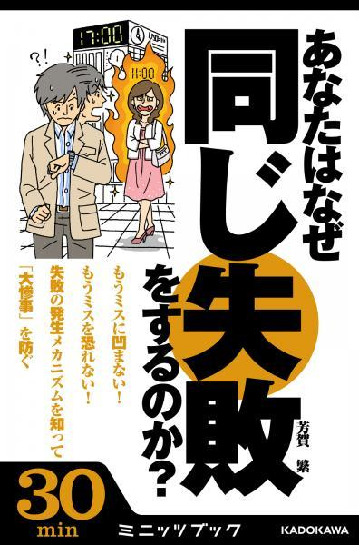
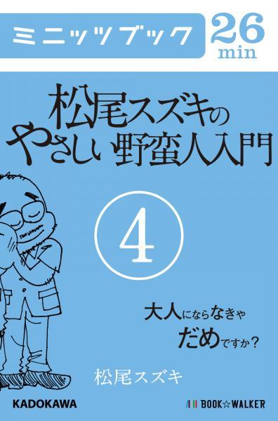

| カドカワ・ミニッツブック カタログ2 | |
| ミニッツブック編集部 | |
| 株式会社ブックウォーカー (2014) | |
本作品の全部または一部を無断で複製、転載、配信、送信したり、ホームページ上に転載することを禁止します。また、本作品の内容を無断で改変、改ざん等を行うことも禁止します。
本作品購入時にご承諾いただいた規約により、有償・無償にかかわらず本作品を第三者に譲渡することはできません。
本作品を示すサムネイルなどのイメージ画像は、再ダウンロード時に予告なく変更される場合があります。
本作品は横書きでレイアウトされています。
「購入ページへ」というリンクをクリックすると、Webブラウザでその書籍を購入できるWebページが開きます。
ただし、iPhone、iPad、iPod touch用のAmazon Kindle専用アプリでは、この仕組みは動作しません。
また購入リンクがない電子書籍もあります。これらはカタログ作成時に購入ページが存在しなかったためです。
なお、ご覧になるリーディングシステムにより、表示の差が認められることがあります。
カドカワ・ミニッツブック カタログ２【Kindle版】
【目次】
【10min】 【12min】 【13min】 【14min】 【15min】 【16min】 【17min】 【18min】 【19min】 【20min】 【22min】 【23min】 【24min】 【25min】 【26min】 【27min】 【28min】 【30min】 【32min】 【33min】 【34min】 【35min】 【36min】 【37min】 【38min】 【40min】 【42min】 【43min】 【45min】 【46min】 【50min】 【55min】 【58min】 【59min】 【60min】 【270min】
【あ行】 【か行】 【さ行】 【た行】 【な行】 【は行】 【ま行】 【や行】 【ら行】 【わ行】
※各作品の掲載順は著者名の50 音順になっています。
日本人の可読文字数は1 分間で約400～600字と言われています。
ミニッツブックでは、1 分間＝600字で想定読了時間を計算しました。
ちょっとした時間で読めて、しかも読後感のあるカドカワ・ミニッツブック。
楽しい読書の時間を、いつでも、どこでも、デジタルで。
enjoy compact reading!
KADOKAWAの直営ストアBOOK☆WALKERをはじめとする各電子書籍ストアで絶賛発売中です。
カドカワ・ミニッツブック公式サイト： http://minutesbook.jp
カドカワ・ミニッツブックＣＭ動画： http://www.youtube.com/user/minutesbook
※当カタログには、2014年12 月末までに発売ないし発売予定のものを収録しています。
※当カタログはPC、スマホ、タブレットでの利用を想定していますが、実際に利用可能な端末は各電子書店が提供する読書システムによって変わります。詳しくは、各電子書店にお問い合わせください。
フィギュアスケート男子 最強日本の軌跡 ～ロミオ☆火の鳥☆イン・マイ・ライフ～
青嶋ひろの 著
想定読了時間：58 分
配信開始日：2014年2 月27 日
【内容】
10 年前、野辺山の夏合宿でノリノリで踊っていた高橋大輔。3 年前、仙台のリンクで被災し、スケートをやる意味を考えた羽生結弦。今シーズン、「町田語録」なるものが注目された町田樹。「へたれ」と言われていた日本フィギュアスケート男子は、心折れやすく仲良しで、しかし、ケガにもルール改正に負けず、世界ジュニア優勝者4 人を輩出するまでに至る。2014年、「最高の演技」を目指して戦った3 人は、世界中の憧れでもある。絶好調の時もどん底の時も見守ってきた著者が10 年のインタビューを振りかえる渾身の「読むフィギュアスケート」。フィギュアスケートに、失われた時間は一秒もなかった。
フィギュアスケート男子2 最強日本の見る夢 町田樹・羽生結弦・小塚崇彦
青嶋ひろの 著
想定読了時間：55 分
配信開始日：2014年10 月23 日
【内容】
「のどから手がでるほど、メダルは欲しかった」と町田樹。「僕はスケートと、本気で向き合いたい。スケートは、人ではないし、モノでもない」2013-2014シーズン3 冠の羽生結弦。「これで終わるのもいやだな」と現役続行を決めた小塚崇彦。自らの「位置」を確認し、目の前の試合を一つ一つ越えていく彼ら。最強日本フィギュアスケート男子が次に見る夢は何か？「読むフィギュアスケート」第2 弾！【読了時間 約55 分】
目次
進化する男──町田樹
今年の影のＭＶＰは町田君
スケートアメリカで完成された「強い樹」
すべてはソチオリンピックのために
のどから手がでるほど欲しかったメダル
虎視眈々と狙った世界選手権
最もチャンピオンに近い銀メダル
継続は力。新たなスタート
走り続けるチャンピオン──羽生結弦
オリンピックチャンピオンとして
大切なのは競技者であること
フィギアスケートの種を蒔く
ユヅルはまだまだダイアモンドの原石
本気でスケートと向き合うこと
自信以上に大きなものはすべての経験
正統派を継ぐもの──小塚崇彦
間に合った日本選手権
フィギュアスケートの伝統そのもの
佐藤家のコーチたちと温室の中のスランプ
「力が抜ける滑り」と「力が入る滑り」
アイムホーム！ ただいま！
末っ子のタカちゃんの今後
「これで終わるのもいやだな」
青嶋ひろの・あおしまひろの
静岡県浜松市出身。早稲田大学卒。フリーライター。2002-03年シーズンからフィギュアスケートの取材を始め、フィギュアスケート関連の著作・企画本多数。
そのダイエット、「隠れ摂食障害」かもしれません。 気がついたら過食嘔吐へ！ 7 年間のデス・ライフ体験記
アヤカ 著
想定読了時間：40 分
配信開始日：2014年12 月11 日
【内容】
（当時の日記）
《今日も過食。うどん３玉、カップ麵大２個、プリン１個、ビッグモナカアイス１個、チョコパイ６個、納豆１パック、チキンナゲット６個、シュウマイ１袋。むくむ。気持ち悪い。》
「なんでこんなに太っちゃったんだろう」
いや、それは食べているからだよ。自然の摂理だよ。なんて答えは求めていなくて、ただただ、自己嫌悪が日課となる。つらくてつらくて、居てもたってもいられなくなる。落ち着け落ち着け、とチョコクロワッサンを与えてみる。おいおい、何食べてるんだよ、落ち込んでるきっかけはこのクロワッサンだろうが、と自分ツッコミを弱々しくしてみる。
これが世に言う『地獄の無限・過食ループ』である。（本文より）
大学進学を期に初めての一人暮らし。
節約のためにパン屋のバイトで残り物をもらい、夜中に食べ続け20kgもの体重増加。細くてかわいい大学の友達と自分を比べ、そのストレス発散にドカ食い......きっかけは些細なことなのに、頭では改善策はわかっているはずなのに、それでも止まらない過食衝動。
やがてエスカレートし、【過食嘔吐】へと発展していく──。
廃棄のパンをあさって食べたアルバイト、緊張を和らげるために電車内でお菓子を頰張る就職活動、公園のトイレで泣きながら弁当を貪る実家での日々......。
７年間の壮絶デス・ライフを、ゆるーいイラストとクスッと笑えるエピソードを交えて綴る「摂食障害」体験記！
【目次】
大学１年生。過食症１年生。
半年の、パン屋バイトで、20 キロ増（字余り）
はじめての心療内科①②
はじめての『こころのお薬』
地獄の就職活動
過食DE胃炎
過食症から過食嘔吐へ
過食に彼氏、キレる
卒業～新・社会人へ
回復への光
はじめての子宮がん検診 急増！20 代の子宮頸がん 子宮体がん、ピークは50 代!!
池下育子 監修
想定読了時間：35 分
配信開始日：2014年7 月24 日
【内容】
命をはぐくむ 〝女性の象徴〟子宮。しかし月経不順や月経痛、不正出血などトラブルも多く女性の悩みのタネにもなります。そのトラブル、もしかすると「子宮がん」によるものかもしれません！
性交渉、喫煙、ダイエットなどが危険要因とされる「子宮頸がん」は毎年１万人、20 代でも発症しています。そしてホルモンバランスの乱れや出産経験がないことが危険要因とされる「子宮体がん」も、40 ～60 代に増加中。
幅広い年齢層に発生する子宮がんは、定期的な検診による早期発見が何よりも大切です。
本書では、子宮がん症例ケースや危険度チェックから、「子宮頸がん」「子宮体がん」の違い、検診の内容、手術・治療法、再発防止策まで、わかりやすく解説。
生活習慣の乱れやストレスに悩まされながらも、仕事や家事育児に追われる現代女性。忙しくて検診なんて行く時間も気力もない...そんな人にこそ読んでもらいたい一冊です。
★まずは自己診断！子宮がん発生危険度チェックシート付き！
【目次】
１．もっと早く検査していれば......子宮がんケーススタディ
■ケース1 ：Ａ子さん／30 代前半／子宮頸がん「4 年ぶりの検診で判明」
■ケース2 ：Ｂ子さん／23 歳／子宮頸がん「産後の腰痛で受診後、放置していたら...」
■ケース3 ：Ｃさん／58 歳／子宮体がん「性交がないから大丈夫と思いきや!?」
２．〝命のゆりかご〟子宮のしくみと「子宮がん」
３．「まさか私が!?」の可能性大！20 代でも発生する「子宮頸がん」
４．ホルモンバランスが崩れがちなアラフィフは要注意！「子宮体がん」
５．〝余命１カ月の花嫁〟にならない！子宮がんの手術と治療
６．いつまでも〝女〟でいるために！退院後の日常生活のポイント

英傑の日本史 激闘織田軍団編 佐々成政・柴田勝家
井沢元彦 著
想定読了時間：25 分
配信開始日：2013年10 月10 日
【内容】
徹底して秀吉に逆らい「悪人」となった佐々成政、秀吉の罠にはまり「負け組」となった柴田勝家──勝者と敗者を分けたものは何か。独自の史観で歴史に斬り込み、織田軍団とその宿敵たちのドラマに迫る！ ※本電子書籍は、角川文庫『英傑の日本史 激闘織田軍団編』を分冊したミニッツブック版（全十二分冊）です。
英傑の日本史 激闘織田軍団編 前田利家
井沢元彦 著
想定読了時間：20 分
配信開始日：2013年10 月10 日
【内容】
加賀百万石の礎を築き、「本能寺の変」で得をした前田利家の実像とは──勝者と敗者を分けたものは何か。独自の史観で歴史に斬り込み、織田軍団とその宿敵たちのドラマに迫る！ ※本電子書籍は、角川文庫『英傑の日本史 激闘織田軍団編』を分冊したミニッツブック版（全十二分冊）です。
英傑の日本史 激闘織田軍団編 明智光秀
井沢元彦 著
想定読了時間：17 分
配信開始日：2013年10 月24 日
【内容】
「二人の主君」の板挟みに苦慮し続け、信長も予期できぬ発作的犯行をした明智光秀──勝者と敗者を分けたものは何か。独自の史観で歴史に斬り込み、織田軍団とその宿敵たちのドラマに迫る！ ※本電子書籍は、角川文庫『英傑の日本史 激闘織田軍団編』を分冊したミニッツブック版（全十二分冊）です。

英傑の日本史 激闘織田軍団編 佐久間盛政・丹羽長秀
井沢元彦 著
想定読了時間：19 分
配信開始日：2013年10 月24 日
【内容】
賤ヶ岳の戦いで汚名を着せられた佐久間盛政、器用すぎて出世が遅れた丹羽長秀──勝者と敗者を分けたものは何か。独自の史観で歴史に斬り込み、織田軍団とその宿敵たちのドラマに迫る！ ※本電子書籍は、角川文庫『英傑の日本史 激闘織田軍団編』を分冊したミニッツブック版（全十二分冊）です。

英傑の日本史 激闘織田軍団編 滝川一益・河尻秀隆・織田信孝
井沢元彦 著
想定読了時間：26 分
配信開始日：2013年11 月14 日
【内容】
本能寺の変でナンバー３から陥落した滝川一益、最大の被害を被った忠臣の河尻秀隆、秀吉への恨みを胸に腹を切った織田信孝──独自の史観で歴史に斬り込み、織田軍団とその宿敵たちのドラマに迫る！ ※本電子書籍は、角川文庫『英傑の日本史 激闘織田軍団編』を分冊したミニッツブック版（全十二分冊）です。

英傑の日本史 激闘織田軍団編 織田信雄
井沢元彦 著
想定読了時間：17 分
配信開始日：2013年11 月14 日
【内容】
天下人信長の次男に生まれながら「無能」がゆえに戦国を生き延びた織田信雄──勝者と敗者を分けたものは何か。独自の史観で歴史に斬り込み、織田軍団とその宿敵たちのドラマに迫る！
※本電子書籍は、角川文庫『英傑の日本史 激闘織田軍団編』を分冊したミニッツブック版（全十二分冊）です。

英傑の日本史 激闘織田軍団編 織田信忠
井沢元彦 著
想定読了時間：19 分
配信開始日：2013年11 月28 日
【内容】
光秀からノーマークだったにも関わらず、人生最大の決断を誤って横死した優秀な長男・織田信忠──勝者と敗者を分けたものは何か。独自の史観で歴史に斬り込み、織田軍団とその宿敵たちのドラマに迫る！ ※本電子書籍は、角川文庫『英傑の日本史 激闘織田軍団編』を分冊したミニッツブック版（全十二分冊）です。

英傑の日本史 激闘織田軍団編 織田秀信・織田秀勝・織田有楽斎
井沢元彦 著
想定読了時間：20 分
配信開始日：2013年11 月28 日
【内容】
清州会議に利用された織田秀信、秀吉の保険として養子にもらわれた織田秀勝、茶で世渡りをした織田有楽斎──勝者と敗者を分けたものは何か。独自の史観で歴史に斬り込み、織田軍団とその宿敵たちのドラマに迫る！ ※本電子書籍は、角川文庫『英傑の日本史 激闘織田軍団編』を分冊したミニッツブック版（全十二分冊）です。

英傑の日本史 激闘織田軍団編 浅井長政
井沢元彦 著
想定読了時間：30 分
配信開始日：2013年12 月12 日
【内容】
最も信用されたがゆえに、その裏切りが信長を残虐な男へと変えた浅井長政──勝者と敗者を分けたものは何か。独自の史観で歴史に斬り込み、織田軍団とその宿敵たちのドラマに迫る！ ※本電子書籍は、角川文庫『英傑の日本史 激闘織田軍団編』を分冊したミニッツブック版（全十二分冊）です。

英傑の日本史 激闘織田軍団編 織田信行・津田信澄・津田信広
井沢元彦 著
想定読了時間：17 分
配信開始日：2013年12 月12 日
【内容】
母に溺愛され兄に反乱を起こした織田信行、謀反人の父をもつ悲運に殺された津田信澄、裏切り後は忠実な家臣となった信長の兄・津田信広──独自の史観で歴史に斬り込み、織田軍団とその宿敵たちのドラマに迫る！ ※本電子書籍は、角川文庫『英傑の日本史 激闘織田軍団編』を分冊したミニッツブック版（全十二分冊）です。
英傑の日本史 激闘織田軍団編 足利義昭
井沢元彦 著
想定読了時間：25 分
配信開始日：2013年12 月26 日
【内容】
信長に道具として最大限利用されながらも暗躍し、戦国の世に天寿を全うした最後の将軍・足利義昭──勝者と敗者を分けたものは何か。独自の史観で歴史に斬り込み、織田軍団とその宿敵たちのドラマに迫る！ ※本電子書籍は、角川文庫『英傑の日本史 激闘織田軍団編』を分冊したミニッツブック版（全十二分冊）です。

英傑の日本史 激闘織田軍団編 松永久秀
井沢元彦 著
想定読了時間：17 分
配信開始日：2013年12 月26 日
【内容】
信長に匹敵する「将」の能力をもちながら、最期は日本最初の爆死を遂げるほど毀誉褒貶の多い生涯を送った戦国の梟雄・松永久秀──独自の史観で歴史に斬り込み、織田軍団とその宿敵たちのドラマに迫る！ ※本電子書籍は、角川文庫『英傑の日本史 激闘織田軍団編』を分冊したミニッツブック版（全十二分冊）です。
子どもたちは電子羊の夢を見るか？① ０歳からはじまるデジタル教育
石戸奈々子 著
想定読了時間：45 分
配信開始日：2013年5 月2 日
【内容】
この10 年でデジタルデータは300倍にも膨れ上がっているという。これからの情報社会を生きぬくデジタルネイティブの子どもたちは【創る力】【課題を解決していく力】【他を尊重して協調する力】【未知のことに柔軟に対応していく力】【情報を処理する力】が求められている。現時点の教育はそれに対応しているとは言えない。東大工学部、MITラボを経て、主体的で協働的で創造的な学びの場【CANVAS】(NPO法人)を立ち上げた石戸奈々子さんは、10 年間に全国各地で2000回ものワークショップを実施し、子どもたちの【自ら学ぶ力】を目の当たりにしてきた。デジタルは、それらサポートしてくれる【魔法の杖】になるのか？
おすすめデジタルえほん13 点も収録
子どもたちは電子羊の夢を見るか？② デジタルとオンラインで変わる明日の教育
石戸奈々子 著
想定読了時間：40 分
配信開始日：2013年12 月24 日
【内容】
MITメディアラボのレズニック教授は「コードが書けるということは文章を書くことと同じ」だと言う。著者が理事長を務めるCANVASは、グーグルと協力してプログラミング学習を本格的に全国に広げるプロジェクトを2013年スタートさせた。最先端のテクノロジーを使うのは大人ではない。明日を担う子どもたちなのだ。
目次：デジタルを使った感動的な授業/ビル・ゲイツの予言/それはカーンアカデミーから始まった/プログラミングは手段/テクノロジーを活用した教育改革/韓国のスマート教育/効率化で生まれる時間/京大カンニング事件の意味するもの/今ここにある課題/知識の爆発/DiTTのアクションプラン。
子どもたちは電子羊の夢を見るか？③ よみかきプログラミング
石戸奈々子 著
想定読了時間：45 分
配信開始日：2014年7 月24 日
【内容】
「スクラッチ Day 2014 in Tokyo」で注目を集めた小中学生によるプログラミングバトル。お題は「コンピュータと人間が競うテニスゲームをつくる」こと。所要時間は20 分。子どもたちのプログラムがパソコン画面が映し出されると、そのスピードに大人たちが驚く。バトルのヒーローは小学生5 年生。自作のコマ撮りアニメをYouTubeにアップする中学生。震災情報サイトの制作に関わった高校生。プログラミング啓蒙団体を作った中学生。デジタルでグローバルに活躍する彼らが、未来の社会をつくっていく。【読了時間 約45 分】
目次
・プログラミング・ムーブメント
・『ゲームで遊ぶ』から『遊ぶゲームをつくる』
・PEG：プログラミング・エデュケーション・ギャザリング
・ヒーローは小学5 年生。プログラミングバトル
・デジタルでグローバルに活躍する子どもたち
・第三言語としてのプログラミング
・ビスケット、ラズベリーパイ、スクラッチ！ 放課後のプログラミング
・ITを切り口に震災復興の問題解決を考える
・プログラミングの話で盛り上がりたい！ シェアする13 歳
プロフィール
石戸奈々子■東京大学工学部卒業後、マサチューセッツ工科大学メディアラボ客員研究員を経て、子ども向け創造・表現活動を推進するNPO法人CANVASを設立、現理事長。産官学連携による子ども向けワークショップの開発と普及に取り組む。株式会社デジタルえほん代表取締役社長を兼職。10 年間続けてきたワークショップコレクションは2013年グッドデザイン賞受賞。「子どもたちは電子羊の夢を見るか？」シリーズ全3 冊配信中。
デジタル教育宣言──スマホで遊ぶ子ども、学ぶ子どもの未来
石戸奈々子 著
配信開始日：2014年12 月10 日
レーベル：角川EPUB選書
【内容】
「うちの子どもにスマートフォンを渡してもいいのかな......？」
自らも一児の母である石戸奈々子氏は、のべ30 万人もの子どもに〝学びの場〟を提供してきた経験から、「デジタル機器が、子どもの創造力を伸ばす」と自信を持って語る。
人工知能やロボット技術の発達によって、「人間には、クリエイティブな仕事か、低賃金の肉体労働しか残らない」「2011年度に入学したアメリカの小学生の65 ％は、大学卒業時に、いまは存在していない職業に就く」といった衝撃的な予測もある。
本書では、デジタルでの「ものづくり」やプログラミングを通じて、思考力・創造力を伸ばす子どもたちを取り上げつつ、「市内の全小・中学生に1 人1 台タブレット配布」で話題を集める武雄市や学習院女子高等科、品川区立京陽小学校など、国内・海外で始まっているデジタル教育の最前線を伝える。※本書は「子どもたちは電子羊の夢を見るか？」シリーズに大幅に加筆をし、再構成しました。
■子どもに「デジタルなおもちゃ」は必要なの？
■デジタル時代の「ものづくり」
■プログラミングが子どもの想像力を伸ばす
■わずか数年後、あなたの町の学校はこう変わっている
［付録］おすすめデジタルえほん
■石戸 奈々子
NPO法人CANVAS理事長、慶應義塾大学准教授、株式会社デジタルえほん代表取締役。総務省情報通信審議会委員などを兼務。東京大学工学部を卒業後、マサチューセッツ工科大学（MIT）メディアラボ客員研究員などを経て、2002年に子ども向け創造・表現活動を推進するNPO「CANVAS」設立。2011年「デジタルえほん」設立。2012年にAERA「日本を立て直す100人」に選出。
オンナのウラガワ ～名器大作戦～ 1 名器手術のウラガワ
岩井志麻子 著
想定読了時間：15 分
配信開始日：2014年8 月10 日
【内容】
爆笑エロ談話にも定評がある岩井志麻子が男と女の〝プロ〟の世界の奥深さをルポ！ 第1 弾は「名器手術」について。
山本周五郎賞や婦人公論文芸賞受賞の実力派小説家でありながら、「エロくて変なオバチャン」キャラとして多くのメディアで活躍、その爆笑エロ談話には定評がある岩井志麻子。彼女が、自らの身体を張った体験を赤裸々につづり、男と女の〝プロ〟の世界の奥深さをルポするエッセイ。
その第1 回はまさに「名器」の話。もちろん、ここでいう「名器」はあの「名器」です。しかも一般論ではなく、なんと「名器手術」を受けたという。そしてその成果を試すため、まずは韓国人の夫のもとへ。さらにその二日後に、今度は長年の愛人がいるベトナムはホーチミンに飛ぶのであった。抱腹絶倒の、手術＆探究心あふるる実践の記録をどうぞ。
※WEB&メールマガジン・ちょくマガ「オンナのウラガワ ～名器大作戦～」の一部を再編集して構成
オンナのウラガワ ～名器大作戦～ 2 エロとホラーと風俗嬢のウラガワ
岩井志麻子 著
想定読了時間：15 分
配信開始日：2014年8 月10 日
【内容】
爆笑エロ談話にも定評がある岩井志麻子が男と女の〝プロ〟の世界の奥深さをルポ！ 第2 弾は風俗嬢にまつわる怖い話の数々について。
大人しくて暗い子だった、いじめられっ子っぽかったという岩井さんが戦略として身につけたのが怖い話とエロ話の語り。「怖い話とエッチな話は人を引き寄せる。ともに、生の根源に迫るからだろう（本文より）。」──今回は、風俗嬢にまつわる怖い話の数々です。
山本周五郎賞や婦人公論文芸賞受賞の実力派小説家でありながら、「エロくて変なオバチャン」キャラとして多くのメディアで活躍、その爆笑エロ談話には定評がある岩井志麻子。彼女が、名器手術など自らの身体を張った体験を赤裸々につづり、男と女の〝プロ〟の世界の奥深さをルポするエッセイ、第2 弾。
※WEB&メールマガジン・ちょくマガ「オンナのウラガワ ～名器大作戦～」の一部を再編集して構成。
オンナのウラガワ ～名器大作戦～ 3 エロ話のつもりが怖い話なウラガワ
岩井志麻子 著
想定読了時間：15 分
配信開始日：2014年10 月10 日
【内容】
■さすがホラー作家だからか（!?）、体を張ってエロ話を取材しているうちに、いつしか怖い話になっていることもしばしば。
ホテルの部屋で、テレビの人捜し番組で、東南アジアの村で。
あるいは男性芸人、タクシー運転手、水商売の女性が語る体験談。
そんなエロテイスト漂うちょっと怖い（ときにはなぜか笑える）話の数々をお届け。【読了時間 約15 分】
■岩井志麻子（いわい・しまこ）
1964年、岡山県生まれ。99 年、「ぼっけえ、きょうてえ」で日本ホラー小説大賞を受賞。
山本周五郎賞や婦人公論文芸賞受賞の実力派小説家でありながら、「エロくて変なオバチャン」キャラとして多くのメディアで活躍、その爆笑エロ談話には定評がある。
■WEB&メールマガジン・ちょくマガ「オンナのウラガワ ～名器大作戦～」の一部を再編集して構成。

お金が貯まって困る本 貯まるカラクリ増えるカラクリ
氏家祥美 監修、田川ミユ 著
想定読了時間：59 分
配信開始日：2013年3 月28 日
【内容】
外貨預金、円高と円安はどっちが損でどっちが得？ たとえば、こんなソボクな疑問に答えられますか？ 先行きが不透明な時代に少しでも手元のお金は増やしていきたいもの......そんなあなたに、大人なら知っておくべきお金の貯め方増やし方のカラクリを伝授。「貯まるカラクリ編」で日々のちょっとしたコツで貯まる生活に切り替えて、「増えるカラクリ編」で増やした元手で自分のスタイルに合った投資・運用を学ぶ二本立て！ 毎月の「使っていい額」を知ろう / 「先取り」で貯蓄を習慣化しよう / 手抜き家計簿術のすすめ / 「貯める」だけではお金は増えない / 自分に合った投資・運用を探そう / 株の買い方を知ろう / 投資信託をかしこく使うにはどこで買う？ / 外貨預金は少額から ......ほか。

パブリックシフト ネット選挙から始まる「私たち」の政治
江口晋太朗 著
想定読了時間：37 分
配信開始日：2013年6 月27 日
【内容】
2013年、公職選挙法の改正によりネット選挙運動が解禁された。なぜ今、法改正が必要だったのか？
本書では、改正後のポイントを、これまでの選挙運動と比較しながら分かりやすく解説。さらに、このネット選挙解禁がきっかけとなり、インターネットと政治が深く結びつくことによってもたらされる大きな変化に注目。それは、政治の主役が政治家から私たち一般市民へと「シフト」していくことを意味している。私たちは今、これまで「他人ごと」だった政治が「自分ごと」に変わる大きな転換点に立っているのだ。自らネット選挙解禁の運動に携わった著者が、「パブリックシフト」というタイトルに込めた、市民が主役となる社会の未来の形とは──！

社会をパブリックシフトするために 2013参院選 ネット選挙の課題と未来
江口晋太朗 著
想定読了時間：42 分
配信開始日：2013年9 月30 日
【内容】
「インターネットも含めたテクノロジーが社会を変えるのではなく、そのテクノロジーを使う私たちが社会を、そして政治を変えていくのです」（本文より）。初のネット選挙として注目された2013年夏の参院選。選挙期間中に展開された各候補者のネット活動、各党のネット対策、有権者やメディアによる情報提供サービス。それらは選挙後も継続されているのか？ そこから見えてきた日本の課題と未来の可能性。インターネットが政治と私たちの生活にもたらすであろう変化の兆しを、参院選の実例を元に検証する。さらにこれからの社会の在り方を「データ」「ビジュアライゼーション」「ゲーミフィケーション」「共創」「シビックプライド」という５つのキーワードをもとに考える。

おしっこの切れが悪い...ひん尿、残尿は前立腺の肥大、がんを疑え！
遠藤文康 監修
想定読了時間：28 分
配信開始日：2014年6 月4 日
【内容】
「最近、残尿感が...」「おしっこのキレが悪くなった...」「夜中、トイレに起きてしまう...」排尿トラブルに心当たりがある男性は要注意！それは近年、日本人男性に急増している前立腺の病気かもしれません。いまや中高年男性の5 人に1 人が症状を訴える前立腺肥大。そして著名人の訃報などニュースでも耳にするようになった前立腺がん。病名は知っていても、そもそも「前立腺」とはどこにあるのか、どんな役割なのか、詳しく知っていますか？ 排尿トラブルは加齢のせい...と放っておかずに、前立腺の正しい知識を身につけましょう。
【内容紹介】
（１）おしっこの出が悪くなっていませんか？
（２）検査と診察は泌尿器科へ！
（３）前立腺はどこにある？
（４）前立腺はなぜ肥大するのか？
（５）どういう治療法があるのか？
（６）日常注意する５つのポイント
（７）前立腺とセックス
（８）前立腺肥大とがん
9th Note/Senri Oe I 憂鬱のはじまり。
大江千里 著
想定読了時間：28 分
配信開始日：2013年3 月28 日
【内容】
48 歳のとき、身の回りの荷物99 ％、続いていく日常、今までのキャリア──すべてをすてて、愛犬〝ぴ〟と共にニューヨークで音大生としての生活を始めた。課題曲に選んだソニー・ロリンズの〝St.Thomas〟はソロを丸覚えして弾いた。スラングの目を白黒させ、自炊もするし、部屋もシェアした。20 代の若者に混ざり、ジャズピアニストを目指し切磋琢磨する50 歳の男。2012年7 月、 アメリカデビュー、9 月、日本デビュー。楽曲はすべてオリジナル。「十人十色」「格好悪いふられ方」で知られるポップミュージシャン・大江千里。なぜ、ジャズピアニストを目指したのか？ 新たなライフスタイルを手に入れるまでの4 年半を自らの言葉で綴った、武者修行全記録の第一弾。

9th Note/Senri Oe II 痛み分けはジャズの味
大江千里 著
想定読了時間：20 分
配信開始日：2013年4 月25 日
【内容】
「格好悪いふられ方」「Rain」(アニメ『言の葉の庭』エンディング)「十人十色」「太陽がいっぱい」(光GENJII提供曲)などで知られるポップミュージシャン・大江千里。50 歳にして天命を知る(論語)直前で、今までの一切合財を捨てて、NYへジャズ留学を決行、愛犬・ぴとNYへ降り立った。ところは、ブラッド・メルドー、ロバート・グラスパーらを輩出したジャズの名門大学ニュースクール。しかし、新学期2 日目のレベルテストに寝坊する?! うずくまる千里に学生課のジャッキーが声をかけた。なに、悲しそうにしているの？ NYジャズ修行第2 弾！
留学生であっても、住む家にはこだわりたい。前に住んでいたカップルがインドへの長い放浪の旅に出るので、家具もベッドもシーツも置いていった部屋で、僕と愛犬・ぴとの生活がスタートした。いよいよNYの音楽大学、ニュースクールのオリエンテーションが始まる。タイのドラマー、スウェーデンの歌姫、韓国のピアニスト、イタリアのピアニスト、アメリカからは白人、黒人の新入生たちが集まる。音楽と英語のレベルをチェックするテストがまる2 日間。そこで、僕はなんとレベルテストに寝坊してしまったのだ！
9th Note/Senri Oe III ジャズ学校の異邦人
大江千里 著
想定読了時間：22 分
配信開始日：2013年5 月30 日
【内容】
アンサンブルのクラスで、僕ひとりがジャズじゃなかった。コードの重ね方が違う。縮こまる僕に声をかけてくれたのは、タイから来たドラマー、テップ。一緒に練習したチャーリー・パーカーの「ビリー・バウンズ」は、少しだけ勇気をくれた。「格好悪いふられ方」「Rain」(アニメ『言の葉の庭』エンディング)「十人十色」などで知られるポップミュージシャン大江千里。50 歳直前で、今までの一切合財を捨てNYへジャズ留学。武者修行中の第3 弾でもまた困難が。登場曲は、フランク・シナトラ「君を想いながら」、ウェイン・ショーター「ブラック・ナイル」「ナイト・ドリーマー」、ソニー・ロリンズ「セイント・トーマス」ほか

9th Note/Senri Oe IV ジャズに焦りは禁じ手か？
大江千里 著
想定読了時間：28 分
配信開始日：2013年6 月27 日
【内容】
まずは、「ジャズのノリ」を身につけることね。個人レッスンのジュリア先生は、そう言った。春学期の最大イベント、リスニングセッション(発表会)がやってくる。その前には中間試験。ジャズの生き字引、ビル・キルヒナーの「ジャズの歴史」の授業も面白い。肩や背中の筋肉も強化したい。やるべきことが目白押しだ。ところが、指の感覚がなくなることがあった。50 歳目前にしてNY音楽大学に留学した大江千里。ジャズ武者修行第4 弾のテーマ曲は「アイ・ガット・リズム」
9th Note/Senri Oe V ジャズをひと休み。陽はまた昇る
大江千里 著
想定読了時間：23 分
配信開始日：2013年7 月25 日
【内容】
「ピアノを弾いてはダメですよ」NYのカイロプラクティックの先生はそう言った。50 歳を目前にして、ニューヨークへガチでジャズ留学を決行した大江千里。20 歳のクラスメイトたちと切磋琢磨したものの最初の期末テストで腕が動かなくなってしまう。断腸の思いでテストをパス。日本で検査したが原因はわからなかった。夏休みの大学で、音楽を聴くことに専念してみると、「ジャズ」と格闘ばかりしていて、「音」を「楽」しむことを忘れていた自分に気づく。気分を変えよう。日本から来た、たちなみと一緒にアリゾナドライブへ。NYジャズ修行第5 弾は、グランドキャニオン、サウスリム、セドナ、アンテロープを巡るスピリチュアルトリップ。BGMはカーラジオから聞こえてくるカントリーミュージック。
9th Note/Senri Oe VI 秋学期よ、こんにちは！
大江千里 著
想定読了時間：24 分
配信開始日：2013年8 月29 日
【内容】
ジャズを知らなかったということを全く知らなかった半年前の自分。音楽に対する想いも遠のき、腕も動かず、存在すら見失うという事態になろうとは誰が想像しただろう。アリゾナへの小旅行を経て、心も体もリフレッシュして迎えた秋学期。新しい先生(ピーターザックやブーカス)、新しい仲間(アンソニー、ハンナ)、新しい学び(ブラジル音楽)。タイ人のドラマ─、テップとのルームシェアも始まった。作曲の課題発表では、割れんばかりの拍手！ でも、ここに甘んじてはいけない。50 歳目前でNYジャズ留学を決行した大江千里の修行は続く。登場曲は「Stopin' at the Savoy」「All the things you are」ほか。

9th Note/Senri Oe VII 双子のフェニックス
大江千里 著
想定読了時間：22 分
配信開始日：2013年9 月12 日
【内容】
人ひとりが来なくなるなんて、誰もなんとも思っていない空気が音楽学校にはある。フランス人のギタリスト、レミ。年上のサックス奏者。そして、韓国人のギタリスト、リー。秋学期が始まって程なく、リーは学校に来なくなった。ある日、練習室でピアノを弾いていると、コンコンとドアをたたく音がする。リーだった。僕はリーを授業に誘ってみる。おせっかいなおじさんではあるが、そうせずにはいられなかった。第7 弾の【9th Note】シリーズでは、ニュースクールにパットメセニーが講義に来る!?

9th Note/Senri Oe VIII ニューヨークにいる亀
大江千里 著
想定読了時間：15 分
配信開始日：2013年9 月26 日
【内容】
朝起きると「C(ド)～」とロングートーンの声を出してみる。ピアノのCとピタリとあえば、宝くじで1 等賞が当たった気分だ。僕は「絶対音感」の持ち主ではない。フレーズ、和音、何をとってもジャズにはなっていない。ほかの生徒はできあがっている人もいるというのに。アンナ先生に訴えると、彼女はこう言ったのだ。「あなたはジャズを始めたばかりでしょ。死ぬほど練習して、これからなのよ。それから人と比べるのはナンセンス。あなたにはあなたの培ってきたポップセンスと作曲があるでしょ」。僕の目から熱いものがこぼれた。エリザベス・ローニンガー、ジェラルド・ダンジェロ、チャールズ・トレヴァー。新しい先生たちがぞくぞく登場！
9th Note/Senri Oe IX キンモクセイの咲く頃に(上)
大江千里 著
想定読了時間：20 分
配信開始日：2013年10 月10 日
【内容】
2013年9 月7 日、東京国際フォーラムA。今年もまた東京ジャズに出演が決まった。しかも、ビッグバンド。そのために、新しいアルバム『Spooky Hotel』を作った。そして、何よりも歌ってほしかったシーラジョーダンがスペシャルゲストに加わる。「女は知的に恋をする」──彼女のために書いた曲。夢のような時間がもうすぐ始まる。NYジャズ武者修行第9 弾は、現在に時間が飛んだスペシャルバージョンでお届けします。

9th Note/Senri Oe X キンモクセイの咲く頃に(下)
大江千里 著
想定読了時間：15 分
配信開始日：2013年10 月24 日
【内容】
東京は夜の6 時。「大江千里Saturday Night Orchestra in 東京ジャズフェスティバル」が始まろうとしている。緊張が悪魔のように押し寄せてくる。面白くないジョークを言うもの、それに爆笑するもの、鏡を何度も覗きこむもの、楽器を磨くもの。「さあ、みんな緊張してますよ。これは楽しく記念撮影しといたほうがいいでしょう」とシャーリー(日本男子)がみんなに呼びかける。シャリーは25 年来の友人。持つべきものは友だ。開演30 秒前、誰からともなく集まって手を重ねた。Let's enjoy the moment! 僕らは前を向いて舞台へ出て行った。東京ジャズの舞台裏を大江千里自らレポートします。シーラ穣のお茶目な一面も、お楽しみに！
9th Note/Senri Oe XI 長いトンネルを抜けて
大江千里 著
想定読了時間：25 分
配信開始日：2013年11 月28 日
【内容】
学期後半になると「ソフォモアジュリー」の季節がやってくる。ソフォモア(2年目)の学生を目安に、ジャズの実力がついたかどうかチェックする実技試験だ。そのテストにパスするかどうかは、3 年次の授業に大きくかかわってくる。まず、譜面を見ずに演奏できる曲を10 ～12 用意する。リードシートを用意する。そして、3 人の百戦錬磨のの審査員たちの前で、バンドリーダーとして曲を演奏する。僕は、「The Real Book」をめくって、片っぱしから弾いてみた。ジュリア先生のアドバイスを受け、猛特訓が始まる......。イパネマの娘、コンファメーション、黒いオルフェ、ステラバイスターライト、イット・グトハプントゥユーを始め18 曲が登場。さて、試験当日弾いたのは...!?
9th Note/Senri Oe XII 9 番目の音に誘われて
大江千里 著
想定読了時間：25 分
配信開始日：2013年12 月24 日
【内容】
アンナ先生の基礎のプライベートレッスンをOutすると、憧れのミュージャンのレッスンが受けられる。そのためには、すべての音階を12 のキーでできること、すべての伴奏のパターンを12 のキーでできること、ジャズで最も大切なブルース、リズムチェンジの曲を選び12 のキーで演奏できること、など基礎クラスで習った知識を試す実技試験がある。12 のキーとは 、 、 、 、 、B、E、A、D、G、C、F。そう、この連載の順番と同じ。今回は「F」。連載も卒業になる。NYジャズ武者修行に愛犬「ぴ」と二人きりでニューアーク空港に降り立ったときから2 年。「9th Note 最終章」はまた旅のはじまりでもある。
9th Note Complete / Senri Oe
大江千里 著
想定読了時間：270分
配信開始日：2014年9 月18 日
【内容】
50 歳を目前にして、大江千里は考えた。このまま年をとってもいいのだろうか、と。
定期的なライブと創作活動。気心の知れた友人。行きつけのレストラン。都会での犬との暮らし。
2008年、大江千里はNYの音楽大学・ニュースクールに留学する。今までの一切合財を捨て、愛犬1 匹をつれて。
ところが、レベルテストに寝坊し、「ジャズができていない人がいる」と20 歳の同級生に言われ。歯をくいしばって練習すると、肩が動かなくなる。
タイの留学生テップとのルームシェア、現役ミュージシャンによる刺激的な授業、アンサンブルの発表会、同級生の歌姫たち、愛すべきスタンダードナンバー、そして愛犬・ぴ。「ジャズ」にまつわるものに囲まれて、ひとつひとつ、できるようになっていった。
登場するスタンダードナンバー、ミュージシャンは100を越える。留学生活の最初の2 年間を綴る「カドカワ・ミニッツブック」の連載12 編に処女小説「いたち」を収録したコンプリートバージョン。【読了時間 約270分】
目次
憂鬱のはじまり。
痛み分けはジャズの味
ジャズ学校の異邦人
ジャズに焦りは禁じ手か？
ジャズをひと休み。陽はまた昇る
B 秋学期よ、こんにちは
E 双子のフェニックス
A 二ューヨークにいる亀
D キンモクセイの咲く頃に 上
G キンモクセイの咲く頃に 下
C 長いトンネルを抜けて
F ９番目の音に誘われて
いたち
大江千里・おおえせんり■1960年9 月6 日大阪生まれ。ジャズアルバム『boys mature slow』『Spooky Hotel』をリリース。現在は米国内で積極的なライブ活動を展開中。
13th Note① それは憂鬱などではなく...
大江千里 著
想定読了時間：28 分
配信開始日：2014年3 月27 日
【内容】
「センリ──の日本での映像をYouTubeで観たんだけれど、大きなスタジアムのものが一番よかった」超絶テクニックのピアニスト、アーロン・ゴールドバーグは言った。48 歳にして愛犬ぴとスタートさせたNYジャズ留学。年下の同級生たちの中で、スラングもわからず、ジャスができていないと言われ、それでも本当に歯を食いしばって基礎クラスを卒業することができた。3 年目からは憧れのミュージシャンからプライベートレッスンを受けることができる。千里が選んだのはアーロン。ルームメイトのテップが卒業し、年齢が近かったJayは休学した。別れと出会いが交錯するセカンドシーズン。NYジャズ武者修行はつづく！
13th Note② スモールワールドとモーニング息子。
大江千里 著
想定読了時間：33 分
配信開始日：2014年4 月24 日
【内容】
ニュースクールを卒業しても、音楽だけで食べていける人の割合は3%以下だという。そんな厳しい現実の中、ジョーはすでにラテンビックバンドで活躍していた。ジョーが心臓疾患で倒れ、生死をさまよっていたとき、神様はこう言ったのだ。「君が生き返ったら、大好きな『モーニング娘。』の曲をジャズの仲間とやってみなさい」。そうして生まれたのがJ-Popビッグバンド「モーニング息子。」。そんなジョーに地下鉄で声をかけられた千里。ガーシュインホテルでのデビューコンサートを皮切りに、超クールな「息子。」は、「LOVEマシーン」を引っさげてNYでも評判のバンドになっていった。NYジャズ留学の後半戦はススム！
13th Note③ ホームタウンと20 ドル
大江千里 著
想定読了時間：22 分
配信開始日：2014年5 月29 日
【内容】
日本で大変なことが起こっている──作曲＆アレンジのクラスで発表する曲が出来上がってPCをオンにしたところ、友達からメールが届いた。2011年3 月11 日。あちこちの海岸を波が砕いていく。日本が壊れていく。いま書き終えたばかりの曲は「ホームタウン」。食い入るように画面を見つめる。大学へ行くとあちこちで声をかけられた。みんなが心配してくれている。そのころ、NYのレストランで少しずつ演奏活動を始めていた。学校へは行かず、チャリティコンサートを始めた。渡辺美里さんがNYへやってきて...。NYジャズ留学第2 章は、「ジャズを学ぶ」人から「ジャズを演奏する」人の転換期になった
13th Note④ サンドイッチとビバップ
大江千里 著
想定読了時間：30 分
配信開始日：2014年6 月26 日
【内容】
デリでサンドイッチを頼むとき、アメリカ人は徹底的にカスタマイズする。パンはホットドッグ、トマトスライスは2 枚、オニオンとピクルスは抜いて、ケチャップなしでマヨネーズを少々。それは大学のカリキュラムについても同じ。ジーンペルラ、デイヴグラッサー、バリーハリス、裕太。NYのジャズ大学で上級生になった千里(50)に新しい出会いが訪れる。第4 弾はビバップ・ストーリー！
「NYに来たばかりの頃、近所の和食屋さんでバリーハリス(ビバップの巨匠)に遭遇しているのだ。僕が必死にその日に勉強したノートを広げて復習をしていたら、隣に座った氏が
『きみはジャズを学んでいるの？ 先生は誰なの？』
って聞いてきた。すぐにその人が誰かは僕にもわかったので緊張しながら、
『ニュースクールでまだ基礎クラスをやっているのです』
とだけ返したら、
『そう。あそこはジャズしか教えないいい学校だ。ジュニアマンスとか本物のミュージシャンが教えている。やめなさんなよ。続けなさいよ。ビバップは楽しいよ。今度暇があったら家にも習いに来なさい。じゃあ、頑張って』
僕はもう全身がカチカチになり直立不動で『ありがとうございます！』とその場をあとにした」──本文より。
大江千里■1960年9 月6 日大阪生まれ。1983年デビュー。2008年、ジャズピアニストを目指し愛犬と共にNYへ。ジャズアルバム『boys mature slow』『Spooky Hotel』をリリース。東京ジャズフェスティバルには2 年連続出演。現在は米国内で積極的なライブ活動を展開中。NYジャズ留学の前半を綴った『9th Note』12 冊、日本家屋体験エッセイ『僕の家』4 冊を配信中。
13th Note⑤ ハイジの国から来た男。
大江千里 著
想定読了時間：30 分
配信開始日：2014年7 月24 日
【内容】
ハネスに出会ったのは、アートブレイキー・アンサンブルのオーディションの教室だった。ハイジの国から来たこの男は、ベース担当、人懐こくて、プロデュース能力に長けていた。スイスではビックバンドの指揮もしていたという。ハネスがベース、ミチがバイオリン、そして僕がピアニカでトリオを組むことになった。初夏のある日曜日、ハウストンストリートの教会の前で僕らは路上デビューする。
※
第1 回目は、ほぼ30 分を3 回やった。初回にしては上出来だろう。
「イパネマの娘」「ニューヨーク ニューヨーク」「星影のステラ」など。
左右の店の人たちに感謝の挨拶をしてから楽器を片し、ハウストンストリートを少し西に行ったところのカフェに入る。
「ケースに入ったお金いくらだった？」
「1 人、20 ドルぐらいかな」
「おお、悪くないじゃん」
「全然、悪くない」──本文より。
※
オーディションには落ちたものの、新しい出会いがいくつもあった。50 歳の音大生・大江千里。青春と呼ぶに等しい時間の中でNYジャズ留学第5 弾は路上ライブ中継です【読了時間 約30 分】
大江千里■1960年9 月6 日大阪生まれ。1983年デビュー。2008年、ジャズピアニストを目指し愛犬と共にNYへ。ジャズアルバム『boys mature slow』『Spooky Hotel』をリリース。東京ジャズフェスティバルには2 年連続出演。現在は米国内で積極的なライブ活動を展開中。NYジャズ留学の前半を綴った『9th Note』12 冊、日本家屋体験エッセイ『僕の家』4 冊を配信中。
13th Note⑥6 つの種から始まった
大江千里 著
想定読了時間：25 分
配信開始日：2014年8 月28 日
【内容】
全身から鳥肌が立った。
時々目と目を合わせて呼吸を確認する。
演奏を通じて学校での短い会話の何百倍ものコミュニケーションをしていると思った。
音を通じてお互いまだ知らないそれぞれの音楽や人生や家族の話をしているかのような
楽しいやり取り。スティーブも頰を紅潮させて汗びっしょりだった。(本文より)
東北で大きな地震があった年の夏、
「NYのみんなが元気になれるような夏祭りを企画してもらえないか？」
と富ジャズから提案があった。
日本にいた頃、夏祭りのようなコンサートをやっていた時期がある。
「納涼千里天国」だ。
話を聞いた時、「納涼」をNYの富ジャズに置き換えてやってみると面白いかもしれない
と思った。期間は6 日間。タイトルを「6 Seeds (6つの種）」にし、
6 人のゲストとセッションして作る6 つのストーリー。
蒔いた種からやがて芽が出る日が来るかもしれないし、来ないかもしれない。
ちょうどその頃知り合ったスティーブミルハウス(ベース)とのデュオを基本に、
人選に取りかかる──NYジャズ武者修行はまだまだ続く。【読了時間 約25 分】
大江千里・おおえせんり
1960年9 月6 日大阪生まれ。1983年デビュー。2008年、ジャズピアニストを目指し相棒(ダックスフンド♀)を連れてNYの音楽大学へ留学。ジャズアルバム『boys mature slow』『Spooky Hotel』をリリース。東京ジャズフェスティバルには2 年連続出演。現在は米国内で積極的なライブ活動を展開中。NYジャズ留学の前半を綴った『9th Note』全12 冊、日本家屋体験エッセイ『僕の家』全4 冊を配信中。
13th Note⑦ リユニオン、大陸横断決行！
大江千里 著
想定読了時間：28 分
配信開始日：2014年9 月25 日
【内容】
車での大陸横断を思い付いたのは、8 月のどこかでロスに滞在して、
ウェザーリポートのドラマーだったピーター・アースキン氏にレッスンを受けることになっていたからだ。
彼の地に3 週間ほど滞在するので生活するには足が居る。
ならばNYから直接車で行っちゃおうというふうに決心した。
ネットで検索すると不眠不休なら数日で着く。8 月1 日に出れば5 日中には着くだろう。もう少し睡眠をとれば6 日当日ぎりぎりになるかもしれない。まあなんとかなる。
同乗者は相棒ぴ。4 つの夜と5 つの昼、これを目標にまずは思いのまま走り出してみよう──本文より。
LAで再会(リユニオン)するのは、長年の友人Yukiさんだった。
40 年近くハリウッドに住み、映画の世界で記事を書いている。
そしてもう一人は、くにえさん。
三人は共に笑い、いろんなことを分かち合い、時間を共有した。
どこまでも続く畑畑畑。今回はたっぷりの大陸横断写真とともにお送りします。
BGMはケニー・ロジャーズ。【読了時間 約28 分】
大江千里・おおえせんり
1960年9 月6 日大阪生まれ。1983年デビュー。2008年、ジャズピアニストを目指し相棒(ダックスフンド♀)を連れてNYの音楽大学へ留学。ジャズアルバム『boys mature slow』『Spooky Hotel』をリリース。東京ジャズフェスティバル、ブルーノート出演のほか、現在は米国内を中心に積極的なライブ活動を展開中。日本家屋体験エッセイ『僕の家』全4 冊、ＮＹジャズ留学の前半を綴った「9th Note」シリーズ全12 冊は電子単行本『9th Note Complete』としても配信中。
13th Note⑧ 帰り道はいつも寄り道。大陸横断・後編
大江千里 著
想定読了時間：25 分
配信開始日：2014年10 月30 日
【内容】
「きみはそれが出来るのになぜジャズをやろうとしたの？ しかも今回はピアノではなくてなぜドラムを？ ドラマーになりたいの？」
自己紹介のかわりに「塩屋」をピアノで弾き語りした僕を、ピーターは眼を丸くして子どものような目で見つめた。
「ジャズの、リズム感を、養うには、自分が実際に、ドラムを叩いてみることが、大事だと思ったから、です」
ピーター・アースキンのドラムレッスン。この夏、僕は何かをやり遂げたかったのだと思う。練習の合間には、ウェザーリポート時代のレアな音源を聞かせてくれた。途中でベースとボーカルの音が同時に聞こえてきて、そのグルーブ感がとてつもなかった。ジャコパストリアスだった。
ロスでの濃密な時間はあっという間に過ぎる。再び過酷なロードレースが始まった。昼間は「死の砂漠」を体験し、その数時間後には「凍える恐怖」に震える。新学期は約1 週間後。行きは爆走したので帰りは寄り道をして行こうと思ったのだが......。
著者自身が撮ったスナップ46 点を掲載。「13th Note」シリーズ第8 弾は大陸横断・後編です。【読了時間 約25 分】
大江千里・おおえせんり
1960年9 月6 日大阪生まれ。1983年デビュー。2008年、ジャズピアニストを目指し相棒(ダックスフンド♀)を連れてNYの音楽大学へ留学。ジャズアルバム『boys mature slow』『Spooky Hotel』をリリース。東京ジャズフェスティバル、ブルーノート出演のほか、現在は米国内を中心に積極的なライブ活動を展開中。日本家屋体験エッセイ『僕の家』全4 冊、ＮＹジャズ留学の前半を綴った「9th Note」シリーズ全12 冊は電子単行本『9th Note Complete』としても配信中。
13th Note⑧ 帰り道はいつも寄り道。大陸横断・後編_音のおまけつき
大江千里 著
想定読了時間：25 分
配信開始日：2014年10 月30 日
【内容】
「きみはそれが出来るのになぜジャズをやろうとしたの？ しかも今回はピアノではなくてなぜドラムを？ ドラマーになりたいの？」
自己紹介のかわりに「塩屋」をピアノで弾き語りした僕を、ピーターは眼を丸くして子どものような目で見つめた。
この夏、僕は何かをやり遂げたかったのだと思う。ピーター・アースキンのドラムレッスン。練習の合間に聞かせてくれたウェザーリポート時代のレアな音源。途中でベースとボーカルの音が同時に聞こえてきて、そのグルーブ感がとてつもなかった。ジャコパストリアスだった。
ロスでの濃密な時間はあっという間に過ぎ、再び過酷なロードレースが始まる。昼間は「死の砂漠」、数時間後には「凍える恐怖」。行きは爆走したので帰りは寄り道をしようと思ったのだが......。
今回は本文中3 カ所に特典をつけました。愛犬ぴの写真の(♪)マークをタップすると、「音のおまけ」が鳴り出します！ 「13th Note⑧」は、【文・イラスト・写真・音のおまけ by 大江千里】と盛りだくさんな内容でお届けします。【読了時間 約25 分】
大江千里・おおえせんり
1960年9 月6 日大阪生まれ。1983年デビュー。2008年、ジャズピアニストを目指し相棒(ダックスフンド♀)を連れてNYの音楽大学へ留学。ジャズアルバム『boys mature slow』『Spooky Hotel』をリリース。東京ジャズフェスティバル、ブルーノート出演のほか、現在は米国内を中心に積極的なライブ活動を展開中。日本家屋体験エッセイ『僕の家』全4 冊、ＮＹジャズ留学の前半を綴った「9th Note」シリーズ全12 冊は電子単行本『9th Note Complete』としても配信中。
※BOOK☆WALKER（iOS版およびAndroid版）／iBooks storeでの配信になります。
13th Note⑨ 詩人たちの黄昏
大江千里 著
想定読了時間：36 分
配信開始日：2014年11 月27 日
【内容】
「僕は今までの人生でこんなに握手だけで物を語りたがる人に会ったことがない。
それは詩と言うよりはむしろ自叙伝の域に達していると思う。
だが、不思議とそれが嫌じゃないと思った。こういう人に会うのを長年待っていたとも思った。年齢も国も職種も違う2 人が詩というキーワードで大学のクラスの中で出会ったのだ」──本文より。
NYのジャズ大学ニュースクールに留学して2 年。
学生課のダンのすすめもあって、提携するアート大学との共通カリキュラム【音楽という言葉】をとってみる。
学期中に12 編の詩を書き、みなでディベートするらしい。
そこで出会ったのがバナード。70 歳は優に超え、「詩人の会」を主催。参加者をハンティングしている。
バナードはさらに千里が参加していたビッグバンド「モーニング息子。」のライブでMCをやってくれたのだが...。
ギンズバーグ、バロウズ、ディキンソン、フランクオハラ、ドナマシーニ、リチャードヒューゴ、パブロネルーダ。
ビートニクのアメリカ詩人やチリの詩人たち。さらに千里の英語「詩」も登場！【読了時間 約36 分】
大江千里・おおえせんり■1960年9 月6 日大阪生まれ。1983年デビュー。2008年、ジャズピアニストを目指し相棒（ダックスフンド♀）を連れてNYの音楽大学へ留学。ジャズアルバム『boys mature slow』『Spooky Hotel』をリリース。東京ジャズフェスティバル、ブルーノート出演のほか、現在は米国内を中心に積極的なライブ活動を展開中。日本家屋体験エッセイ『僕の家』全4 冊、ＮＹジャズ留学の前半を綴った「9th Note」シリーズ全12 冊は電子単行本『9th Note Complete』としても配信中。
13th Note⑩ Stage Fright(舞台恐怖症)
大江千里 著
想定読了時間：22 分
配信開始日：2014年12 月25 日
【内容】
「僕がアメリカに来て一番よかったなと思うのは、ジャズの基本であるリズムに生で触れられることだ。クリスはジャズというよりももっとR&Bタイプを目指している。彼ら黒人の書く曲には全てブルースの感覚がある。元は教会から派生しているこの情熱と心の叫びがそのまま音符になったような音楽は、アフロアメリカン独特のものだ。
ふと自分には何があるだろうと思って考えたら、「盆踊り」であることに気がついた。日本人である僕は1 、2 、3 、4 という1 小節のアクセントを1 と3 で捉える。彼らは2 と4 で感じるわけだ」──本文より
47 歳でNYの音楽大学に留学してから4 年。大江千里はニュースクールの講堂にいた。そこは神戸のライブハウス、チキンジョージに似ていた。卒業に必須な「音楽ビジネス」カテゴリーで、【インターン】か【ステージプレゼンス】のどちらかをとらなければならない。千里は【ステージプレゼンス】を選ぶ。先生はダイアナ・ロスのツアーに長く参加したラタニャ。千里は誰を追いかけているの？──その答えを探すためにここに来たのかもしれない。【読了時間 約22 分】
大江千里・おおえせんり■1960年9 月6 日大阪生まれ。1983年デビュー。2008年、ジャズピアニストを目指し愛犬ぴを連れてNYの音楽大学へ留学。ジャズアルバム『boys mature slow』『Spooky Hotel』をリリース。東京ジャズ、ブルーノート出演のほか、現在は米国内を中心に積極的なライブ活動を展開中。日本家屋体験エッセイ『僕の家』全4 冊、ＮＹジャズ留学の前半を綴った「9th Note」シリーズ全12 冊は電子単行本『9th Note Complete』としても配信中。2015年2 月14 日には3rdアルバム発売決定！

僕の家 sellection1 日本家屋の一年
大江千里 著
想定読了時間：45 分
配信開始日：2013年9 月12 日
【内容】
2000年のはじめの頃、大江千里は築50 年の日本家屋で2 年強を過ごす。家の中でもしんしんと底冷えがし、水道管が破裂したり、ブレイカーが落ちたり、靴がカビだらけになったり、毛虫が大量発生したり。冬になる前に快適なマンションにでも引っ越そうと思っていたのに、いつしか古い日本家屋をメインテナンスし、庭の井戸水で淹れたお茶を味わう男へと変わっていった。自分の立ち位置が見える家。大好評だった単行本『僕の家』をミニッツブックサイズに4 分冊して電子化。第一弾に収録したのは、「日本家屋の一年／夏の家／ご乱心の秋／別れの予感／それでも僕は動く」の日本家屋編。
僕の家 sellection2 「おばけ」の出る家
大江千里 著
想定読了時間：40 分
配信開始日：2013年9 月19 日
【内容】
「初めての自分の部屋の鍵がポケットにある感覚というのを今でも忘れない。キオスクでガムをひとつ買い、自分が激しく行き交う駅の人波に気後れしてないか自己チェックした」（はじめての一人暮らし」より）。「そこには人の気配がある。何度か眠ろうとしたけれど重いし体が動かない。かっと目を開ける。するとそこには！」（おばけの出る家より）。ジャズピアニストとして、現在はNYに住む大江千里。かつて築50 年の日本家屋に住んだことがきっかけで、「家」フェチ全開で書いた『僕の家』をミニッツブックとして4 冊に分けて電子化。第2 弾収録は、「はじめての一人暮らし」「『おばけ』の出る家」の2 編。不動産知識も随所にちりばめられています！
僕の家 sellection3 NY City Life
大江千里 著
想定読了時間：43 分
配信開始日：2013年10 月3 日
【内容】
ニューヨークに部屋を借りる！ 1991年から約4 年間、大江千里は東京とNYを行ったり来たりしながら、アルバムのレコーディングを行い、ツアーに出かけていた。デビュー当時は大阪と東京を行ったり来たり。自分の家を建てたときは都会と郊外を行ったり来たり。そして、現在もNYと東京を行ったり来たり。行ったり来たりが性に合っているのかもしれない。父が初めて買った家のこと、自分が建てた家のこと、犬との暮らしぶりなど、住む場所にはいつも彼の「人生」が凝縮されている。大好評だった単行本『僕の家』をミニッツブックサイズに4 分冊して電子化。第3 弾は、「NY City Life／夜逃げ／ニュータウン／「流れ星ハウス」の見た夢／犬との暮らし」の5 編を収録。
僕の家 sellection4 それぞれの家
大江千里 著
想定読了時間：42 分
配信開始日：2013年10 月17 日
【内容】
「最近、めくるめく日々を送っていない？」不動産業者のK君が言う。まさにそのとおり。他人が家やマンションを買うのにどうしてこんなにドキドキワクワクするのだろう(本文より)。原宿の隠れ家、高級マンション内覧、フィギュアを飾るための家、新潟の林の中の山小屋、高松の西を向こう家。【家】のあるところには、どこでも見に行きたい。築50 年の日本家屋に住んで再発見したそれぞれの家の魅力。大好評だった単行本『僕の家』をミニッツブックサイズに4 分冊して電子化。第4 弾に収録したのは、「不動産業界を泳ぐ妖しくもチャーミングな人／高級賃貸マンション『ラナイ』内覧ツアー／それぞれの家／夢見るように眠りたい／西を向こう家」の5 編。
こんな料理で男はまいる。1 最短レシピ
大竹まこと 著
想定読了時間：30 分
配信開始日：2014年11 月6 日
【内容】
時間や食材をうまく使ってこその料理だ。そうやってテキパキと料理をする女は間違いなく評価が高くなるだろう。（大竹まこと 本文より）
芸能界でキャベツを切らせたら、右にでるものはいない。大竹まことのロング＆ベストセラーになった異色の料理本「こんな料理で男はまいる。」「こんな料理で女もまいる。」をテーマごとに5 分冊して電子化。第1 弾は手早く簡単に作れるメニューを集めた「最短レシピ」。しみじみ染みる料理コラムも収録。
【目次】
まえがき 料理は手早さだね。
ミートソーススパゲティ
焼きそば
じゃがいものチーズ焼き
キャベツとベーコンのスープ
ゆで豚
なすの油炒め
◆コラム 男たちは、料理に何を何を求めているんだろう
じゃがいもとセロリの炒めもの
鶏手羽のとうがらし焼き
菜の花とベーコンの炒めもの
いかげそ焼きと鶏皮揚げ
鮭と銀だらの西京みそ焼き
水菜のサラダ
パンいろいろ ガーリックトースト、バゲットサンド、ハムサンド
いつでもトマト
焼くだけ5 品
薄切り肉のカリカリ揚げ
◆コラム いさぎよい食べ方
テキパキ作れて男がまいる20 レシピを収録。
大竹まこと プロフィール
1949年5 月22 日生まれ、東京都出身。79 年にきたろう、斉木しげるらとコントグループ「シティボーイズ」を結成。
現在は、テレビ「ビートたけしのTVタックル」 、「大竹まことの金曜オトナイト」ラジオ「大竹まこと ゴールデンラジオ」などのほかドラマ、映画などでも活躍中。
こんな料理で男はまいる。2 おふくろレシピ
大竹まこと 著
想定読了時間：30 分
配信開始日：2014年11 月6 日
【内容】
おふくろに作ってもらったものとか、連れて行ってもらった店の思い出がある。食べ物の記憶が舌に残っているんだよ。（大竹まこと 本文より）
芸能界でキャベツを切らせたら、右にでるものはいない。大竹まことのロング＆ベストセラーになった異色の料理本「こんな料理で男はまいる。」「こんな料理で女もまいる。」をテーマごとに5 分冊して電子化。第2 弾は男が大好きなおふくろの味、郷愁を感じるメニューを集めた「おふくろレシピ」。しみじみ染みる料理コラムも収録。【読了時間 約30 分】
【目次】
まえがき 男は郷愁できている
スパゲティナポリタン
ハムカツ
いなりずし
里芋のそぼろ煮
ふかしいも
とうもろこし
◆コラム 人は郷愁という味を食べる
豚肉しょうが焼き
オムライス
キャベツ入りメンチカツ
肉うどん
深川飯
ポテトコロッケ
◆コラム 普通のコロッケ礼賛
ちくわの磯辺揚げ
ぶりの照焼
あじのしょうが煮
定番サラダ2 種ポテトサラダ マカロニサラダ
どら焼き
いちご盛っただけ
夏みかんの砂糖がけ
◆コラム 夏みかん
男が忘れらない味の19 レシピを収録。
大竹まこと プロフィール
1949年5 月22 日生まれ、東京都出身。79 年にきたろう、斉木しげるらとコントグループ「シティボーイズ」を結成。
現在は、テレビ「ビートたけしのTVタックル」 、「大竹まことの金曜オトナイト」ラジオ「大竹まこと ゴールデンラジオ」などのほかドラマ、映画などでも活躍中。
こんな料理で男はまいる。3 口説きレシピ
大竹まこと 著
想定読了時間：30 分
配信開始日：2014年12 月18 日
【内容】
芸能界でキャベツを切らせたら、右にでるものはいない。 大竹まことのベストセラーになった異色の料理本「こんな料理で男はまいる。」「こんな料理で女もまいる。」をテーマごとに5 分冊して電子化。第3 弾はここぞのときに作る「口説きレシピ」。意外と簡単で、男がまいります。染みる料理コラムも収録。【読了時間 約30 分】
【目次】
まえがき 寝る前に凝った料理は出すな
秘伝・すき焼き
豚汁
トンポーロー（豚の角煮）
ハンバーグ
◆コラム ひきにく100g
スパゲティ4 種 アンチョビとキャベツのスパゲティ／ベーコンと野菜のスパゲティ／あさりとバジルの和風スパゲティ／スパゲティカルボナーラ
牛すじとごぼうの甘辛煮
JJ風サラダ
お茶漬け2 種 鯛茶漬け／昆布茶漬け
トマトの冷たいスパゲティ
冷たい粒粒コーンスープ
オニオンスープ
◆コラム 日に向かうと書いて日向（ひゅうが）と読む。
鰯のブルスケッタ
いちごジャム
シーザーサラダ
鶏の竜田揚げ
男がまいるだしの取り方 だしまき卵
◆コラム 女は知らない
大竹まこと プロフィール
1949年5 月22 日生まれ、東京都出身。79 年にきたろう、斉木しげるらとコントグループ「シティボーイズ」を結成。
現在は、テレビ「ビートたけしのTVタックル」 、「大竹まことの金曜オトナイト」ラジオ「大竹まこと ゴールデンラジオ」などのほかドラマ、映画などでも活躍中。
こんな料理で男はまいる。4 胃袋レシピ
大竹まこと 著
想定読了時間：30 分
配信開始日：2014年12 月18 日
【内容】
芸能界でキャベツを切らせたら、右にでるものはいない。 大竹まことのベストセラーになった異色の料理本「こんな料理で男はまいる。」「こんな料理で女もまいる。」をテーマごとに5 分冊して電子化。第4 弾はおふくろの味をも凌駕する、男の「胃袋」をつかむレシピ！
【読了時間 約30 分】
【目次】
まえがき 過去をぶった切り、おふくろの味を超える
小あじの南蛮漬け
中トロとネギの串焼き
ドライカレー
渡り蟹のみそ煮込みうどん
ビーフカツライス
高菜チャーハン
◆コラム コショウは危険な調味料
ステーキサンド
焼かない焼き豚（チャーシュー）
ポテトグラタン
具だくさんのおでん
カレービーフン
鮭のハラス焼き
揚げなすとベーコンのスパゲティ
ソーセージとキャベツのスパゲティ
コールスローサラダ
ホワイトミネストローネ
ピーナツバターサンド2 種
トマトサラダ
ネギ焼きそば
海鮮キムチ丼
◆コラム 男がニラレバ定食を食べる理由
大竹まこと プロフィール
1949年5 月22 日生まれ、東京都出身。79 年にきたろう、斉木しげるらとコントグループ「シティボーイズ」を結成。
現在は、テレビ「ビートたけしのTVタックル」、「大竹まことの金曜オトナイト」ラジオ「大竹まこと ゴールデンラジオ」などのほかドラマ、映画などでも活躍中。
こんな料理で男はまいる。5 ヒモレシピ
大竹まこと 著
想定読了時間：30 分
配信開始日：2014年12 月18 日
【内容】
芸能界でキャベツを切らせたら、右にでるものはいない。大竹まことのロング＆ベストセラーになった異色の料理本「こんな料理で男はまいる。」「こんな料理で女もまいる。」をテーマごとに5 分冊して電子化。第5 弾は若いころに作ったという「ヒモレシピ」。しみじみ染みる料理コラムも収録。
ヒモのときに作ったけど、どれもうまいから、別に女が男に作ってやってもいいんだからな。（大竹まこと）ヒモ時代に培った料理の技が光る。女から小遣いが貰えた料理は逸品ぞろい。確実に男もまいります。第5 弾はまさかの「ヒモレシピ」。【読了時間約30 分】
【目次】
ホットドッグ
肉天
いろいろフライ
かにチャーハン
◆コラム 地べたスレスレ
どんぶり2 種 卵丼、そぼろ丼
野菜炒め
小あじのしょうが煮
チーズ入り焼き飯
◆コラム マヨネーズライス
ピータン豆腐
稲庭うどん
◆コラム 女の世話になっておきながら1
皮ごとフライドポテトとオニオンリング
揚げパン
◆コラム 女の世話になっておきながら2
しらす豆腐
レタスと桜海老のごま油炒め
ほうれんそうの炒めもの
オムレツ
◆コラム 私のコロッケをまずいと言った女はいない。
大竹まこと プロフィール
1949年5 月22 日生まれ、東京都出身。79 年にきたろう、斉木しげるらとコントグループ「シティボーイズ」を結成。
現在は、テレビ「ビートたけしのTVタックル」 、「大竹まことの金曜オトナイト」ラジオ「大竹まこと ゴールデンラジオ」などのほかドラマ、映画などでも活躍中。
物語と格闘せよ！ DENTSU DESIGN TALK
大友啓史、高崎卓馬 著
想定読了時間：60 分
配信開始日：2014年2 月13 日
【内容】
NHKから独立後、『るろうに剣心』『プラチナデータ』と次々に話題作を監督する大友啓史。「dビデオ」「行くぜ、東北。」の映像制作を担当した電通の高崎卓馬氏。最前線の二人がその映像制作の極意、手法、スタッフ育成、エンターテイメントビジネスについて語る濃密なトークセッション。電通社内で行われているセミナーをオープンにした電通デザイントークシリーズ第2 弾！
アメリカの電子書籍〝ブーム〟は今
大原ケイ 著
想定読了時間：15 分
配信開始日：2014年5 月15 日
【内容】
「アメリカの電子書籍は〝ブーム〟は終了しましたので」というコラムがネット上でさかんにシェアされた。出典元はNY在住の出版エージェント・大原ケイ氏のブログ「Books and the City」。アメリカは日本のように「出版不況」ではないし、そもそも「流行り」だから買うという人も少ない。本の価格帯も「新刊のハードカバー20 ドル、Eブック10 ドル、セルフ・パブリッシング数ドル」とすみ分けができてきている。だが、電子書籍のセルフ・パブリッシングが「出版」のハードルを下げたことも事実だ。アメリカの著者も読者も、本は「モノ」ではなくメッセージをやりとりする「ツール」だという認識がある。本書は前出のコラムと「マガジン航」に掲載された記事をベースに再構成して緊急出版したものである。電子書籍〟ブーム〟真っ只中にいる日本、舵きりのヒントがここにある。
【目次】
アメリカの電子書籍はもう〝流行り〟ではない
〝ブーム〟は終了、３割でまず定着か
セルフ・パブリシングについて
マンガはメジャーじゃない
リテール(小売り)全体の形態が大きく変わっているのであって「本屋さんがなくなる」問題ではない
YAというカテゴリーから大ヒットが生まれる土壌がある
人が本を読まなくなっている、と諦めていない
Eブックの急成長が止まったその理由は？
Eブックに興味がある人にデバイスがひと通り行きわたった
Eブックの値段の下げ止まり
Eインク端末からタブレットへの移行
アメリカの電子書籍の未来を占う
セルフ・パブリッシングは、必ずしも儲かりはしないが著者の選択は広がる
マルチメディア的な本が増えれば、単価が上がり、売上増につながるかも
定額読み放題のストリーミング型読書
内容やフォーマットが更に多彩に
Eブック関連のニュースがニュースでなくなる

宇宙起業家 軌道上に溢れるビジネスチャンス
岡田光信 著
想定読了時間：30 分
配信開始日：2014年5 月22 日
【内容】
今、地球の衛星軌道上には、一定以上の大きさのものだけでも約３万個の宇宙ゴミ（スペース・デブリ）が超スピードで飛び交い、運用中の衛星や打ち上げたロケットと、いつ衝突してもおかしくない危険な状況にある。一度大きな事故が起きれば、周囲の衛星を巻き込んだ連鎖衝突に発展する可能性もある。そうなってしまえば、我々の生活にも深刻な影響があることは間違いない。
この状況を打破するためには、従来の国主導のやり方では無理だ。そう感じた一人の日本人起業家が、2013年、シンガポールでデブリ除去を事業目的としたアストロスケール社を設立した。
これはSFではない。
今や宇宙は、世界の名だたる起業家たちから、インターネットに続く新たな巨大市場になり得るものとして注目を集めている。
資金力の小さいベンチャー企業が、宇宙という壮大な舞台で、いかにして「利益の出る」ビジネスを起こすことができたのか？ それをどうやって継続していくのか？
本書では「資金力がないからこそ1 年目からの黒字体質を目指す」「壮大な構想を実現するには、ディテールの理解が重要」など、夢を夢物語で終わらせないための考え方が記されている。
「宇宙産業での起業とは、IT業界での起業と本質はさして変わらないことをお話ししたいと思います。」（本文より）
著者は「農学部出身」で、旧大蔵省から外資系コンサルティング会社、IT企業を経て、宇宙産業に乗り込んだ日本人起業家。
宇宙に関心がある人はもちろん、未知の分野での起業を目指す人にもぜひ読んでほしい。
人に言えない、セックス相談室 男のホンネ(1)～秘密にしたい、セックスの不安編～
OLIVIA 著
想定読了時間：28 分
配信開始日：2014年6 月25 日
【内容】
あなたは、テクニックばかりを重視していませんか？ どうして気持ちよくなれないのか、その背景にある本当の「原因」に目を向けないと、いつまでたっても、最高に気持ちのいいセックスにはたどりつけません。実は男性こそ、人に言えない悩みを抱えています。相談室に寄せられたリアルな声から、特に日本人男性に多いお悩みにお答えします。美人セックスアドバイザーのOLIVIA（オリビア）先生のカウンセリングシリーズ第1 弾。【読了時間 約28 分】
【目次】
カラダ、ココロ、テクニックの3 点から具体的に解説。女性を満足させるコツもしっかり紹介。
■性欲が起きないって、おかしい？
性欲が湧かない日本人／性欲が湧かない原因と解決法／相手にはどう伝える？
■「早漏」で自信が持てない...
日本人男性の6 割が早漏!?／「もう、イッちゃったの？」の切り返し方でわかる、男の器のデカさ／愛撫の秘訣は「じっくり」と「ゆったり」／クリトリスのサンドイッチ愛撫でオーガズムを引き出す！
■腰痛でも諦めたくない！
直前でも効く、腰痛対策／負担は少なく、満足度が高い「愛撫」と「体位」
■彼女から誘われたことがない...
セックスレスになりやすい「2 つのきっかけ」／女性目線の「おにぎりセックス」／男女で違う、快感のメカニズム／クリトリス愛撫のよくある間違い
OLIVIA（オリビア）
「ラブライフアドバイザー」として、女性の食生活やボディケアをメインテーマに、コラム・書籍の執筆やワークショップの開催など幅広く活動。「世の中をご機嫌な女性でいっぱいにする！」をライフテーマに、精力的に活動中。SEX特集には欠かせない性のオピニオンリーダー。著書に「飽きない！ セックス」（角川マガジンズ）など。
人に言えない、セックス相談室 女のホンネ(1)～もっと感じるカラダを開発！編～
OLIVIA 著
想定読了時間：50 分
配信開始日：2014年6 月25 日
【内容】
あなたのセックス、間違った思いこみだらけかも!? 〝感じる〟ことができない、そして気持ちいいフリをしてしまう。日本人が陥りがちなセックスの不満です。その背景にある本当の「原因」と「解決のヒント」は女性のホンネの中にありました。相談室に寄せられた、人に言えないリアルな女性のお悩みに答えます。美人セックスアドバイザーのOLIVIA（オリビア）先生のカウンセリングシリーズ第2 弾。【読了時間 約50 分】
【目次】
女のお悩み大公開。カラダ、ココロ、テクニックの3 点をほぐす具体策を解説します。
■実は「感じているふり」をしている
日本人男性のセックスは、女性には物足りない!?
■イクってどんな感覚？
「イク」は開発しないと訪れない／感度アップできるオナニーの仕方
■セックスが痛くて苦痛...
カラダが痛いのか、ココロが痛いのか／入れた後の形状記憶時間
■ひとりエッチがやめられない...
■一度でいいから、「中イキ」してみたい...！
実はよく知らない「性感帯」解説／Pスポットの開発方法
■もしかして私って〝ゆるい〟...？
「ちつトレセックス」
■感じるほど、なぜかアソコが痛い...
女性が感じているかを見極めるポイント
■〝アソコの毛〟のお手入れ、どうすれば...
意外と多い、ヘアの〝巻き込み事故〟
OLIVIA（オリビア）
「ラブライフアドバイザー」として、女性の食生活やボディケアをメインテーマに、コラム・書籍の執筆やワークショップの開催など幅広く活動。「世の中をご機嫌な女性でいっぱいにする！」をライフテーマに、精力的に活動中。SEX特集には欠かせない性のオピニオンリーダー。著書に「飽きない！ セックス」（角川マガジンズ）など。
人に言えない、セックス相談室 男のホンネ(2)～心もカラダも虜にする恍惚の前戯編～
OLIVIA 著
想定読了時間：27 分
配信開始日：2014年7 月25 日
【内容】
あなたは、テクニックばかりを重視していませんか？ 相談室に寄せられた声から、日本人男性に多いお悩みにお答えします。メルマガサービス「ちょくマガ」で連載中の美人セックスアドバイザーのOLIVIA（オリビア）先生のカウンセリングシリーズ第3 弾。【読了時間 約27 分】
【目次】
カラダ、ココロ、テクニックの3 点から具体的に解説。女性を満足させるコツもしっかり紹介。
■彼女の「アソコ」の愛撫って、どうすればいい...？
セックス上手になるには、女性器を知り尽くすべし／女性もよくわかっていない?! 女性器の構造／女性器の部位別特徴を知って、愛撫をレベルアップ ほか
■「Gスポット」って、ホントに気持ちいいの？
「Gスポット愛撫=気持ちいい」とは限らない?!／Gスポットで感じさせるのに必要な3 つの条件とは／初心者でもできる、Gスポット愛撫の作法
■「クンニ」で彼女をイカせたい！
クンニでイカせるために絶対かかせない「準備」って？／クンニの成功率を上げる「はじまりの言葉」と「お気に入り愛撫」 ほか
■〝おっぱい愛撫〟のテクニックを上げたい！
女性は男性のおっぱい愛撫に不満だらけ?!／女性に喜ばれる愛撫のコツは「おっぱいを揉まないこと」／乳首への〝焦らし〟で感度を高める ほか
OLIVIA（オリビア）
「ラブライフアドバイザー」として、女性の食生活やボディケアをメインテーマに、コラム・書籍の執筆やワークショップの開催など幅広く活動。「世の中をご機嫌な女性でいっぱいにする！」をライフテーマに、精力的に活動中。SEX特集には欠かせない性のオピニオンリーダー。著書に「飽きない！ セックス」（角川マガジンズ）など。
人に言えない、セックス相談室 女のホンネ(2)～男をメロメロにする、禁断のカイカンテク編～
OLIVIA 著
想定読了時間：32 分
配信開始日：2014年7 月25 日
【内容】
あなたのセックス、間違った思いこみだらけかも!? 相談室に寄せられた、人に言えないリアルな女性のお悩みに答えます。女性も男性も読んで欲しい1 冊。メルマガサービス「ちょくマガ」で連載中の美人セックスアドバイザー・OLIVIA（オリビア）先生のカウンセリングシリーズ第4 弾。【読了時間 約32 分】
【目次】
女のお悩み大公開。カラダ、ココロ、テクニックの3 点をほぐす具体策を解説します。
■キスが上手くなりたい！
キス上手は、セックス上手／人気のキス ベスト3 で分かる男女の差／「焦らしテクニック」で彼を虜にする大人のキスに／本当に気持ちいい、ディープキスの仕方って？
■あえぎ声って、やっぱり出したほうがいい...？
あえぎ声は「自分のため」に出すもの！／男性は、女性のあえぎ声を聞いてセックス上手になる／もっと彼を夢中にさせる「6 つのあえぎ声」 ほか
■彼をギンギンにする、ペニスの攻め方を教えて！
彼が勃起しない時に絶対やってはいけないこと／男性を勃起させるには、リラックスしてもらうことから／二人で問題に立ち向かえば、お付き合いがもっと豊かに ほか
■「フェラチオ」が上手くなりたい！
男性を感動させるフェラチオテクニックとは／快感だけでなく、愛情もたっぷり伝えよう／舌と唇で「音攻め」「裏筋攻め」 ほか
OLIVIA（オリビア）
「ラブライフアドバイザー」として、女性の食生活やボディケアをメインテーマに、コラム・書籍の執筆やワークショップの開催など幅広く活動。「世の中をご機嫌な女性でいっぱいにする！」をライフテーマに、精力的に活動中。SEX特集には欠かせない性のオピニオンリーダー。著書に「飽きない！ セックス」（角川マガジンズ）など。
人に言えない、セックス相談室 男のホンネ(3)～イカない彼女、痛がる彼女 他～
OLIVIA 著
想定読了時間：26 分
配信開始日：2014年8 月25 日
【内容】
イカない彼女...本当にセックスで感じているか、わかる方法がある?! パートナーに直接聞きづらい女のリアルなセックスの本音をご紹介。「ちょくマガ」で連載中の美人セックスアドバイザー・OLIVIA（オリビア）先生のカウンセリングシリーズ第5 弾。【読了時間 約26 分】
【目次】
■彼女が感じているのか、不安です
「イッたフリ」には、実はデメリットも多い／セックスをよりよくするなら「演技」より「演出」／彼女がイッているかいないかは、ここを見るとわかる／本当に感じるクリトリス愛撫のポイント...ほか
■シャイな彼女をもっと積極的にさせるには？
イカない彼女は不感症？／セックス観の違いは二人が向き合うチャンス／好きな映画を聞けば、理想のセックスがわかる?!...ほか
■彼女がセックスを痛がる
痛みの原因はどこにある？／女性の「心のバリア」をゆっくり解く方法／痛みをやわらげるには、彼女の脳を興奮させよう...ほか
■妻が裸を見せてくれない
暗闇セックスで萎える男性、燃える女性／男女の気持ちがすれ違う本当の原因とは／褒め言葉で「心の愛撫」をしてみよう／セックス環境を整えて彼女の心のバリアを解く...ほか
OLIVIA（オリビア）
「ラブライフアドバイザー」として、女性の食生活やボディケアをメインテーマに、コラム・書籍の執筆やワークショップの開催など幅広く活動。「世の中をご機嫌な女性でいっぱいにする！」をライフテーマに、精力的に活動中。SEX特集には欠かせない性のオピニオンリーダー。著書に「飽きない！ セックス」（角川マガジンズ）など。
人に言えない、セックス相談室 女のホンネ(3)～コンドームをつけてくれない彼 他～
OLIVIA 著
想定読了時間：28 分
配信開始日：2014年8 月25 日
【内容】
コンドームの有無、性欲のすれ違い...彼に言いにくい話題をうまく伝えられるかが女の腕の見せドコロ。「ちょくマガ」で連載中の美人セックスアドバイザー・OLIVIA（オリビア）先生のカウンセリングシリーズ第6 弾。【読了時間 約28 分】
【目次】
■コンドームをつけてくれない彼...
「つける・つけない」は誰が決める？／彼をしっかり勃起させる「3 つのペニス愛撫」／男性も女性も気持ちいい！ 二人のためのコンドーム装着レッスン...ほか
■彼の性欲が薄い...
女性の性欲はあってはならないもの？／視覚で火をつけて、触覚で誘惑！／あなたの「誘惑ファッション」はどんなもの？／彼のエンジンを最高潮にする「3 点攻め」...ほか
■感じちゃう...体って自分で開発できますか？
感度アップできるマスターベーションのコツ／毎日の通勤時間でこっそり「膣トレ」／デート当日にできる即効感度アップ法...ほか
■生理中のセックス、みんなどうしてる？
生理中セックスをするかしないか、正解はどっち？／生理中セックスを可能にするアイデア／TENGAで楽しむ、遊び心ある「疑似セックス」...ほか
OLIVIA（オリビア）
「ラブライフアドバイザー」として、女性の食生活やボディケアをメインテーマに、コラム・書籍の執筆やワークショップの開催など幅広く活動。「世の中をご機嫌な女性でいっぱいにする！」をライフテーマに、精力的に活動中。SEX特集には欠かせない性のオピニオンリーダー。著書に「飽きない！ セックス」（角川マガジンズ）など。

花京院先生が「モテる極意」を教えてくれるようです
花京院えり 著
想定読了時間：45 分
配信開始日：2014年3 月13 日
【内容】
気になる女性に出会ったとき、自信がなくて、アピールなんてもってのほかと考えているのでは？ 「イケメン」じゃないからとあきらめていませんか？ それはとってもモッタイナイ！ 「モテる極意」を知っていればそんな心配はいりません！ カッコよくても、イイ会社に勤めていても、収入がそれなりにあっても、モテない男はまったくモテない。 逆に、それほど冴えないのにモテまくりという男には秘密があります。それは「モテる極意」を知っているから......！ 本書では「会話力」「行動力」をうまく使って惚れさせるワザをケース別に解説。モテる極意を一冊にぎゅっと集約して、花京院先生がていねいに教えます♪
ヴェルサイユ １ 太陽王ルイ14 世の誕生
鹿島茂 著
想定読了時間：20 分
配信開始日：2014年5 月8 日
【内容】
豪華絢爛の代名詞とも言える「ヴェルサイユ宮殿」。ヴェルサイユってどんなところ？ ヴェルサイユの文化をゼロから作りあげたルイ14 世ってどんな人？ そこで働く人々の生活は？ ──フランス文化史研究の第一人者による待望の連載がスタート。初回は、ルイ14 世誕生の謎と王族の基礎知識。
ヴェルサイユ ２ 策士マザランの計略
鹿島茂 著
想定読了時間：20 分
配信開始日：2014年6 月12 日
【内容】
華絢爛の代名詞「ヴェルサイユ宮殿」。ヴェルサイユってどんなところ？ 独特の宮廷文化をゼロから作りあげたルイ14 世ってどんな人？ そこで働く人々の生活は？ フランス文化史研究の第一人者による待望の連載。──今号は、養育係としてルイ14 世に大きな影響を与え、後に宰相として辣腕をふるうことになるマザランの周到で大胆な策士ぶりを紹介。
ヴェルサイユ ３ 宰相マザランと黒い枢機卿
鹿島茂 著
想定読了時間：20 分
配信開始日：2014年7 月10 日
【内容】
豪華絢爛の代名詞「ヴェルサイユ宮殿」。ヴェルサイユってどんなところ？ 独特の宮廷文化をゼロから作りあげたルイ14 世ってどんな人？ そこで働く人々の生活は？ フランス文化史研究の第一人者による待望の連載。──今号は、ルイ14 世にヴェルサイユ遷都のきっかけを与えたパリ市民による内乱と、野心家な枢機卿が生まれる土壌について。
ヴェルサイユ ４ 個性豊かな陰謀の脇役たち
鹿島茂 著
想定読了時間：20 分
配信開始日：2014年8 月14 日
【内容】
どこから読んでもおもしろい！ フランス文化史研究の第一人者による人気連載。ヴェルサイユってどんなところ？ 独特の宮廷文化をゼロから作りあげたルイ14 世はどんな人？ なぜ、あれほど豪華な宮殿を造ったの？ ──今号では、パリでの大規模な内乱の関係者が勢揃い。見栄っ張りな陰謀家や美貌の最強女性政治家の逸話を紹介。
ヴェルサイユ ５ 血塗られた内乱の結末
鹿島茂 著
想定読了時間：20 分
配信開始日：2014年9 月11 日
【内容】
豪華絢爛の代名詞「ヴェルサイユ宮殿」。ヴェルサイユってどんなところ？ 独特の宮廷文化をゼロから作りあげたルイ14 世ってどんな人？ そこで働く人々の生活は？ フランス文化史研究の第一人者による待望の連載。──今号はいよいよフロンドの乱が決着。恋愛事情が絡んだり、意外な人物が暗躍したりと、いつの時代も内乱は波瀾含み!?
ヴェルサイユ ６ ルイ十四世の偉大なる、苦い初恋
鹿島茂 著
想定読了時間：20 分
配信開始日：2014年10 月9 日
【内容】
豪華絢爛の代名詞「ヴェルサイユ宮殿」。ヴェルサイユってどんなところ？ 独特の宮廷文化をゼロから作りあげたルイ14 世ってどんな人？ そこで働く人々の生活は？ フランス文化史研究の第一人者による待望の連載。──今号はルイ14 世の、ひいてはフランスの将来を決定づけることになった、切なくも波瀾に満ちた彼の初恋物語です！
ヴェルサイユ ７ マザランの死がもたらしたもの
鹿島茂 著
想定読了時間：20 分
配信開始日：2014年11 月13 日
【内容】
豪華絢爛の代名詞「ヴェルサイユ宮殿」。ヴェルサイユってどんなところ？ 独特の宮廷文化をゼロから作りあげたルイ14 世ってどんな人？ そこで働く人々の生活は？ フランス文化史研究の第一人者による待望の連載。──今号はルイ14 世の育ての親である、枢機卿マザランがついに死去。いよいよ太陽王としての才能が開花し始めます。
ヴェルサイユ ８ 二人の王は要らない
鹿島茂 著
想定読了時間：20 分
配信開始日：2014年12 月11 日
【内容】
豪華絢爛の代名詞「ヴェルサイユ宮殿」。ヴェルサイユってどんなところ？ 独特の宮廷文化をゼロから作りあげたルイ14 世ってどんな人？ そこで働く人々の生活は？ フランス文化史研究の第一人者による待望の連載。──今回はルイ14 世下で財政再建を成功させた、若き財務卿ニコラ・フーケのエピソード。王をも嫉妬させたその財務力と、稀有な才能とは!?
ルールを超える反則会議@ニコニコ超会議2 ゲームは本当にビジネスの役に立つのか
川上量生、夏野剛、浜村弘一 著
想定読了時間：33 分
配信開始日：2013年8 月29 日
【内容】
「ゲームの能力は経営やビジネスに役立つはずだ！」（川上）。「なんでゲームを遊ぶ時間があるのかって。それは好きだから」（浜村）。「シミュレーションということを考えたら、ゲームは絶対、脳のトレーニングにいいはず」（夏野）。『どうぶつの森』から『ブラウザ三国志』『Clash of Clans』『モンスターハンター』『Minecraft』、そしてエロゲーまで。ニコニコ超会議2 で『ルールを変える思考法』（川上量生著／角川EPUB選書）の発売予告として行われたこの鼎談。ゲームに費やした膨大な時間はムダではないことを力説する会議へと発展!! よもやこんなにも理路整然と日本再生&経営者育成を企んだものになっていたとは!? 登壇者たちも知る由がなかった。

遠野物語 preview
京極夏彦、柳田國男 著
想定読了時間：13 分
配信開始日：2013年3 月28 日
【内容】
柳田國男の代表作『遠野物語』を京極夏彦がリミックスした『遠野物語 remix』。その一部を切り出した『遠野物語 preview』がミニッツブックで登場！ ふと顔をのぞかせる異界を、静かな筆致で描く。
京都で暮らす47 羽のペンギンたち
京都水族館 監修、新野大 写真、京都水族館 写真
想定読了時間：30 分
配信開始日：2014年8 月20 日
【内容】
京都は、東西南北、碁盤の目のように通りがめぐらされています。
東西の通りは「まるたけえびす」、南北の通りは「てらごこ」という数え歌もあり、
京都水族館のケープペンギンたちは、この通り名から名前がつけられました。
まる、たけ、えびす......名前のついているペンギンは現在47 羽。
甘え上手だったり、ツンデレだったり、プールが苦手だったり、
お父さんが大好きだったり、いつもカップルで仲良しだったり。
個性豊かなペンギンたちの京都暮らしは快適な様子ですが、
ケープペンギンは絶滅危惧種でもあるのです。
撮りおろしカラー写真は78 点。スマホやタブレットで、
いつでもどこでも楽しめる写真集です。【読了時間 30 分】
本書では「数え歌」の順番でベストショットと共にご紹介！
＜まるたけえびす＞編 27 羽
【まる】性別♂ バンドの色 オレンジ・オレンジ 丸太町通り
まんまる体型で「大福」みたい。人懐っこくて呼ばれるとどこまでもついてきます。
【たけ】性別♂ バンドの色 黄緑・緑 竹屋町通り
ちょっとわがままでツンデレ。目が赤茶色なのがチャームポイント。
【えびす】性別♂ バンドの色 赤 夷川通り
お腹の真ん中に斑点が縦に3 つ。弟の「にじょう」にキビしいお兄ちゃん。
＜てらごこ＞編 20 羽
【てら】性別♀ バンドの色 紫・紫 寺屋通り
小顔で京都水族館イチのべっぴんさん。かわいい顔をして気の強さもナンバーワン！
【ごこ】性別♀ バンドの色 青・水色 御幸通り
「てら」「あや」「さめ」のお母さん。旦那さんの「たこ」とはお見合い。
スマホを片手に、ぜひ会いにきてください！
新規事業のつくり方講座 ふわっとしたアイデアをビジネスに変える仕組み
久保田達之助 著
想定読了時間：35 分
配信開始日：2014年12 月15 日
【内容】
社会人経験のない大学生でも実践的な事業提案がつくれるようになる。大事なのはアイデアの広げ方と、それをビジネス視点で絞り込む方法を知っていること。民間企業のノウハウにアカデミックなマーケティング理論を組み合わせた、有名私立大学の大人気講座。入門編。
「アイデアが出てこない!!」「経営資源ってなに？」「プレゼンなんてやったことない」。
最初は何一つ経験がなかった大学生が、授業が進むごとに「事業」を作り出すことに夢中になり、最後には有名企業の幹部を相手に堂々と事業提案を行えるようになる。
事業提案と聞くと必要以上に構えてしまう人もいるかもしれませんが、難しく考えることはありません。
この講座で教えていることはたった1 つ。
自分が「あったらいいな」「こうだったらいいな」と感じることを実現可能なカタチに絞り込んでいくやり方だけです。
PEST分析、3C分析、SWOT分析などのマーケティング手法を使った手順で、最初は漠然としていたアイデアが少しずつ具体的なビジネスになっていく流れを体験できます。
本書は読み物というよりは、事業提案の「体験コース」のようなものです。一通りやりきるにはそれなりの手間がかかるかもしれませんが、その経験は、きっとあなたの自信になると思います。
【目次】
はじめに／1 時間目 アイデアの出し方／2 時間目 アイデアの絞り方／［コラム］旅行会社が化粧品を作って売る!?／3 時間目 アイデアを仕組みに変える／4 時間目 ビジネスモデルを分析する／5 時間目 事業案をまとめる・検証する／［コラム］新規事業は登山に似ている／6 時間目 財務計画を考える／7 時間目 事業提案書（プレゼン資料）にまとめる／おわりに【想定読了時間 35 分】

こんなゲームがあったのか!? 名(迷)作iPhoneゲーム おすすめ超厳選15
倉西誠一 著
想定読了時間：50 分
配信開始日：2013年6 月27 日
【内容】
月間770万ユーザー（2014年9 月時点）のITニュースサイト『週アスPLUS』の大人気連載『iPhoneゲームレビュー』を電子書籍化。連載で人気のあったゲームレビュー記事の中から、厳選に厳選を重ねて絞り込み、15 本をピックアップ。連載当時の雰囲気をそのまま楽しめるように再編集しました。紹介する15 本は、「コイン落とし」「アクション」「RPG」「シミュレーション」「パズル」......などなど、バリエーション豊か。どのアプリも、「なんだこれは！」と唸りたくなる名（迷）作です。iPhoneユーザーなら今すぐダウンロード......する前に、まずは本書のレビューをチェック！（※2011年8 月～2012年6 月に掲載された記事が初出となります）
ネットから消える！─「いいね！」も「つぶやき」も「既読スルー」も、全部まとめてやめてやる!!─
栗田宗吉 著
想定読了時間：32 分
配信開始日：2014年11 月27 日
【内容】
─1 日1 時間ネットやSNSに費やすと、1 年間で365時間、10 年で約5 か月の時間の浪費になります─
スマホが爆発的に普及し、今や誰もが気軽にネットで繫がる時代になりました。
しかし、実はその気軽さこそが大きな落とし穴だったのです！
空き時間に「ちょっと」スマホを......といった感覚は薄れ、気づけば、みんなスマホにどっぷり浸かって中毒症状。
気楽なはずのSNSも、なぜか「隣組」のような束縛監視システムになってしまい、返事の義務にストレスを感じ、ヘトヘトになるまで追いつめられる。
そして、あっちもこっちも大炎上......。
そんな、窮屈でがんじがらめのネットの世界から消えてみませんか？
ゴミで溢れかえるネット社会から身を守る方法と、無意識に搾取された時間を取り戻すコツを伝授します！
例えば、SNSに投稿する場合、リアルタイムで情報をアップしない、また、事実とは異なるブラフ情報を織り交ぜる...といった具合です。
こういった小さなことが、個人情報の漏れ防止に繫がっていくのです。
ぜひ実践して、有意義な時間を実感してください!!
【目次】
はじめに
1 章 下を向いてスマホいじって歩いてる人ばかり ─それって、中毒症状かも─
2 章 SNS疲れ ─そんなにかまってあげないとダメ？─
3 章 気軽な情報発信に注意！ ─え、あんなひとことが問題になるの？─
4 章 ネットではむしろ真剣になっちゃだめですよ
5 章 自分の人生のためにネットを使おう
6 章 少しだけネットから消えてみる
7 章 やめられなかったとしても、悪影響は避けよう
8 章 ネットに代わる新しい情報源を用意する
9 章 ここまでやれば本当に安全安心。ネットから完全に消える？
おわりに

別冊カドカワremix KREVA×後藤正文(ASIAN KUNG-FU GENERATION) 特別拡張対談
KREVA、後藤正文 著
想定読了時間：30 分
配信開始日：2013年4 月25 日
【内容】
1976年、植村直己が北極圏単独犬そり走破に成功し、東京・後楽園球場に日本初の人工芝が登場、アントニオ猪木対モハメド・アリの異種格闘技戦が日本武道館で行われたこの年、KREVAと後藤正文は生まれる。ジャンルこそ違うけれど、表現者として伝えたいことを抱え、音楽シーンの最前線で闘ってきた二人。出会いから、お互いの作品について、そして現在の音楽シーンと今後のあり方について語り合った「別冊カドカワ 総力特集KREVA」特別対談の拡張バージョン。音楽を作る。音楽を届ける。音楽を楽しむ。音楽を耕す。音楽が大好きなすべての人々のために。語句解説つき。
体脂肪40 ％腐女子、妄想力と粘着力で瘦せました。
桂 著
想定読了時間：20 分
配信開始日：2014年11 月27 日
【内容】
運動キライ。米大好き。家から出ないで薄い本を眺めていたい......そんなアラサー腐女子が、最初で最後のダイエットに挑戦！
1 年間で体重10kg以上、体脂肪率10 ％以上の減量に成功！ 現在も緩やかに減り、スリムな生活習慣をキープ中!!
右も左もわからなかった人生初のダイエット、成功の秘訣は、あらゆる情報を納得がいくまで調べ上げる〝粘着力〟と、ダイエットも擬人化BLに変換し、停滞期をも乗り越える萌えの力、〝妄想力〟だった！
びっくりするほど短期間で劇的に瘦せたわけじゃない。それでも努力と根性が必要で、しんどい時期もあった日々。大切なのは知識と工夫、そしてずっと続けられることだったのです。
・生姜ココアで体脂肪率4 ％減、その理由を調べてみた。
・炭水化物抜きとか無理、だから「食べ順」を変えてみた。
・たまにはガッツリ食べたい、そんな時は肥満細胞の戦闘力が弱い「おやつタイム」に解禁してみた。
──瘦せるしくみの「なるほど」と腐女子ならではの「あるある」が満載の、実録ダイエットコミックエッセイ！
イラストコミュニケーションサービス［pixiv（ピクシブ）］に掲載し人気を博した『体脂肪40%越えの腐女子がダイエットした実録漫画』をまとめたオール描き下ろし作品です。
新たに生み出されたメガネ＆白衣の擬人化男子（ツンデレ／受）が、あなたのダイエットを強力サポート!?
【目次】
＊ダイエット、何すれば？
＊とにかく楽に瘦せたい腐女子心
＊「基礎代謝」に注目してみた
＊基礎代謝UPメシってあるの？
＊「冷やすな」がポイント
＊やっぱりやらなきゃダメですか。
＊越えられない壁？ 「停滞期」
＊ダイエット開始、1 年後...

最大8 億円！ 夢の一攫千金宝くじ「ロト7 」大攻略 買ってはいけない魔の数字・必ずやるべき引き寄せの法則
剣持高史 著
想定読了時間：25 分
配信開始日：2013年3 月29 日
【内容】
ロト歴13 年のキャリアを持つ宝くじ研究家・剣持高史が、「ロト7 のルール」「ロト7 とこれまでのロトの違い」「ロト7 での高額当選の条件」などを、初心者でも分かるよう徹底的に解説。〝1 等8 億円〟への夢が確実に近づく指南書が登場。ビギナーはもちろん長年の愛好者も、2 つの当選法則を実践して億万長者の仲間入りを目指そう！
野営女（ヤエージョ）オススメ！ 富士山で、クウ、ネル、キャンプ!! 【山梨編】富嶽三十六（冊）プロジェクト04
こいしゆうか 著
想定読了時間：20 分
配信開始日：2014年6 月26 日
【内容】
女子キャンプの第一人者であるこいしゆうかが、富士山まわりのおすすめキャンプサイトを紹介！
mixiの「女子キャンプ！」コミュニティを立ち上げた、キャンプ界の野営女（ヤエージョ）こと、こいしゆうかが、富士山を楽しめるキャンプ場をセレクトしました。全国各地でキャンプをしてきた著者が、キャンプ場の特徴とともに、食料調達に便利な地元スーパーやのんびり入れる温泉を、コミックエッセイで紹介していきます。
手軽に楽しく過ごすための、キャンプのコツや簡単裏技も大公開。お一人様でも、家族でも、おすすめ度が一目でわかるアイコン付き。キャンプなんて......と、思ってるそこのアナタ！ 読めばキャンプしたくなる、充実の情報が満載です。
頭をカラッポにして大きな空を眺めると、どんな疲れも吹っ飛ぶかも!! ※野営女（ヤエージョ）とは、女子キャンプを代表する、著者の別名。野営＝キャンプから、この名前がつけられた。
【目次】
・Let's go camping! 富士山を楽しむキャンプサイト
浩庵キャンプ場
西湖自由キャンプ場
PICA富士西湖
西湖キャンプ・ビレッジ「ノーム」
本栖湖キャンプ場
PICA富士吉田
田貫湖キャンプ場
ハートランド・朝霧
・これがなければ始まらない！ 装備の基礎＆快適グッズ
・必見！ こいしセレクトのコールマンギア
・現地調達がお約束！ 食材は地元スーパーで
・温泉入って、のんびりリフレッシュ
山中湖温泉 紅富士の湯
富士西湖温泉 いずみの湯
あさぎり温泉 風の湯
・超カンタン！ ずぼらで激うまレシピ
野外食！ 簡単パエリア風ごはん
火いらずで目覚める美味しさ、アボカドディップ
野営女（ヤエージョ）オススメ！ 富士山で、クウ、ネル、キャンプ!! 【静岡編】富嶽三十六（冊）プロジェクト06
こいしゆうか 著
想定読了時間：22 分
配信開始日：2014年7 月24 日
【内容】
野営女（ヤエージョ）こと、女子キャンプ界のカリスマでもあるこいしゆうかが、富士山を満喫できるキャンプサイト（in 静岡）を教えます！
自然を楽しみたい人や、これからキャンプを考えている人、日常から解放されたい人にもオススメです。もちろん、ファミリーやソロでも大満足できるはず！
7 つのキャンプサイトのさまざまな見どころや特徴のみならず、日帰りで気軽に立ち寄れる温泉2 ヵ所と入浴施設1 ヵ所、お土産にも嬉しい地元の特産がそろった「道の駅」の情報まで盛りだくさんです。
そして今回も、野外メシにはかかせない、ずぼらで簡単なミニレシピと、キャンプの際に知ってると得する豆知識を2 コマ漫画でご紹介!!
今年の夏は、みんなでキャンプをはじめませんか？ 新鮮な空気と、小鳥のさえずり、川のせせらぎ...今まで気づかなかった小さなことが、アナタの五感を刺激する！
普通のキャンプも楽しいけれど、富士山を見ながらパワーチャージしてみては♪
【目次】
・富士山が拝めるキャンプサイト
朝霧ジャンボリーオートキャンプ場／新富士オートキャンプ場／乙女森林公園キャンプ場／ふもとっぱら／表富士グリーンキャンプ場／猪の頭オートキャンプ場／だるま山高原キャンプ場
・絶景パノラマを楽しむ「湯」＆絶対ベンリな「道の駅」
・ずぼらのキャンプ料理
誰でも焼き鳥屋
ほっとバターのラムミルク
・キャンプマンガ
・焚き火のつけ方
・炭火の魅力
・女子だけのキャンプ
・星空観察キャンプ
・こいしゆうかオリジナルテント発売記念／パンダテントの取扱説明書
こいしゆうか...イラストレーター、漫画家。「女子キャンプ！」コミュニティの発起人。アウトドアコーディネイター、ライターとしても活躍中。
小島慶子のぐれ問答 Ｉ ～想像通りの仕事なんてない！
小島慶子 著
想定読了時間：23 分
配信開始日：2014年9 月12 日
【内容】
日常生活で感じたことや社会の常識について、白黒つけられずにモヤモヤと考えてしまう話題について率直に語る「ぐれ問答」シリーズ第1 弾。
小島慶子が、仕事の悩みを徹底的に考えた！【読了時間 約23 分】
■「思っていた仕事と違う」と感じているあなたへ
・「やりたいこと」「できること」「やらなくちゃいけないこと」の三つの輪で考える
・番宣番組での匍匐前進がまさかの結果に!?
■失敗をして落ち込んでいるあなたへ
・緊張したら、相手が自宅でくつろいでいるところを想像してみて！
・失敗は、実は自己紹介のチャンス
■仕事と家庭の両立に行き詰まっているあなたへ
・子育て世代が陥る「ちゃんとやらなきゃ病」の闇
・ときには「無理だと思う訓練」が必要
小島慶子（こじま・けいこ）
タレント、エッセイスト。1972年、オーストラリア生まれ。学習院大学卒業後、95 年にアナウンサーとしてTBSに入社。
第36 回ギャラクシーDJパーソナリティー賞受賞。2010年にフリーとなり、 ラジオ、テレビ、雑誌など多様なメディアで活躍中。
著書多数。著書に「気の持ちようの幸福論」「解縛（げばく） しんどい親から自由になる」ほか多数。
小島慶子のぐれ問答 II ～親の縛りにご用心！～
小島慶子 著
想定読了時間：14 分
配信開始日：2014年9 月25 日
【内容】
受験や就職、恋愛や結婚に至るまで、さまざまなところで今の若い世代を縛り付けている、見えない呪い......。それが「親の信じる昭和的価値観」です。
右肩上がりに給料が上がる時代ではなく、いまや共稼ぎがあたりまえ。親世代と同じような家庭を築くのは実は難しいことです。それなのに、意識の底には「いつかはローンを組んで家を買わなきゃ」「やはり専業主婦のほうがいいのでは？」といった思いは残ってしまっている。
そんなふうに親の価値観を内面化してしまい、モヤモヤと悩んだ経験のある小島さんが、「親の呪縛から解放され、自分なりの生き方を模索するために必要なことは？」「これからの変化の時代に、私たちはどんな生き方を選択すればいいのか？」を体験談とともに語ります。【読了時間 約14 分】
親の呪縛に苦しんでいませんか？
■若い世代を縛り付ける、見えない呪い!?
■家を買うことが、まったく自分に合わなかった！
■妄想できる自由が、呼吸を楽にする
■昭和的価値観は今の時代と完全にミスマッチ!?
■「昭和的価値観」が滅びない理由
■ブランドは人の生きる場所を狭めてしまう!?
■〝新しい価値観〟に最初に乗り込む世代
■「生き残る」ってどういうこと？
小島慶子（こじま・けいこ）
タレント、エッセイスト。1972年、オーストラリア生まれ。学習院大学卒業後、95 年にアナウンサーとしてTBSに入社。
第36 回ギャラクシーDJパーソナリティー賞受賞。2010年にフリーとなり、 ラジオ、テレビ、雑誌など多様なメディアで活躍中。
著書多数。 著書に「気の持ちようの幸福論」「解縛（げばく） しんどい親から自由になる」ほか多数。
小島慶子のぐれ問答 III ～人との距離感、つかめてる？～
小島慶子 著
想定読了時間：20 分
配信開始日：2014年10 月15 日
【内容】
「FacebookやTwitter、一日にどのくらいやってます？ いつだって人と繫がれるし、
情報を見るのも書くのも自由自在で、広ーい世界を手にしたような気持ちになりますよね。でも私、この幻想を捨てました。」
そう語る小島さんが、「ネット」との距離の取り方、「友達」との距離の取り方、
そして「自分自身」との距離の取り方を、体験談とともに語ります。【読了時間 約20 分】
スマホで世界は広がらない!?
第一章 ネットとの距離
■スマホで世界は広がらない!?
■情報は、自分の〝欲望〟を知るための道具
■私がTwitterの使い方を変えたワケ
■〝ドロップベア〟とネットリテラシー教育
第二章 友達との距離
■大人だからこそ成立する「友達」のカタチ
■そもそも「友達」って？
■大切なのは、「この世界はいい場所だなあ」って思えること
第三章 自分との距離
■ゲスい自分を許す！
■不完全な自分と一緒に生きていく知恵
■背景にある〝構造〟に目を向けてみる
■「ママタレ」という商品に振り回されない
■ちょっとした工夫で生き延びられる
小島慶子（こじま・けいこ）
タレント、エッセイスト。1972年、オーストラリア生まれ。学習院大学卒業後、95 年にアナウンサーとしてTBSに入社。
第36 回ギャラクシーDJパーソナリティー賞受賞。2010年にフリーとなり、 ラジオ、テレビ、雑誌など多様なメディアで活躍中。
著書多数。 著書に「気の持ちようの幸福論」「解縛（げばく） しんどい親から自由になる」ほか多数。

クサイあなたはキラわれる！ カラダのニオイ編
五味常明 監修
想定読了時間：15 分
配信開始日：2013年6 月27 日
【内容】
カラダのニオイ、ワキガ、頭のニオイ、口臭、女性が気にしやすいデリケートゾーンのニオイ......などなど、カラダのニオイが発生するしくみをわかりやすく解説。
誰にも相談できずにひとりで悩んでいるそこのあなた、まずは本書を開いてみましょう！ カラダのニオイで恋愛に消極的になっている女性も男性も、この一冊ですべて解決!!

クサイあなたはキラわれる！ 気になる部位編
五味常明 監修
想定読了時間：15 分
配信開始日：2013年7 月25 日
【内容】
「カラダのニオイ編」に続き、今回はワキガ、頭、お口のニオイから、気になる足のニオイ......などなど、気になる部位からニオイが発生するしくみをわかりやすく解説しています。
誰にも相談できずにひとりで悩んでいるそこのあなた、まずは本書を開いてみましょう！ カラダのニオイで恋愛に消極的になっている女性も男性も、この一冊ですべて解決です!!
女はなぜダメ男に魅かれるのか？ 日本レンアイ文学のすすめ①
柴門ふみ 著
想定読了時間：40 分
配信開始日：2013年4 月25 日
【内容】
「東京ラブストーリー」「あすなろ白書」「華和家の四姉妹」などの数々のテレビドラマ原作、大ベストセラーエッセイ『恋愛論』で知られる漫画家・柴門ふみが、日本の文豪に連綿と受け継がれるレンアイ観を読み説く名作案内。エリートのくせに優柔不断、問題は先送り、草食系に見えて性欲はある男がなぜモテるのか？ ツッコミどころ満載の主人公キャラは、作家のキャラそのもの。夏目漱石「こゝろ」、川端康成「雪国」、森鷗外「舞姫」、村上春樹「ノルウェイの森」、太宰治「斜陽」5 作品に共通するモテ男のポイントとは？ 『恋する文豪』のダイジェスト版 【読了時間 約40min】
夏目漱石『こゝろ』無駄のない見事な文章につづられる「先生」に似た性格の人──それはウッディ・アレンともうひとり。
川端康成『雪国』クールでシュールでアバンギャルド。まさか、こんなストーリーだったとは?!
森鷗外『舞姫』すっげえ、石じゃん。家も道路も石だよ。兵隊もでっけえし、ギャルもイケてるし。柴門ふみ現代語訳が登場！
村上春樹『ノルウェイの森』その場しのぎの優しさと結論を先送りする優柔不断さが、ワタナベくんのモテポイントなのか！
太宰治『斜陽』「恋、と書いたら、あと、書けなくなった」──太宰治の名コピーは現代の女性読者をも魅了。

男はなぜ魔性の女に堕ちるのか？ 日本レンアイ文学のすすめ②
柴門ふみ 著
想定読了時間：40 分
配信開始日：2013年5 月30 日
【内容】
「東京ラブストーリー」「あすなろ白書」「華和家の四姉妹」などの数々のテレビドラマ原作、大ベストセラーエッセイ『恋愛論』で知られる漫画家・柴門ふみが、日本の文豪に面々と受け継がれるレンアイ観に突っ込む名作案内。わがまま、女王気どり、男好き、激しい性格だけが魔性の女とは限らない。病弱の美少女もまた、文豪たちにとっては大好物なのだ。モテ女の秘密は何か？ 谷崎潤一郎「痴人の愛」、堀辰雄「風立ちぬ」、山本周五郎「おさん」、石原慎太郎「太陽の季節」、武者小路実篤「友情」の5 作品。『恋する文豪』のダイジェスト版。
谷崎潤一郎『痴人の愛』魔性の女の第一人者といえば、ナオミ。プチナオミはあなたの周りにもいる？
堀辰雄『風立ちぬ』文学少女に熱烈に支持されていた『風立ちぬ』。サナトリウムの美少女は乙女の憧れでもあった。
山本周五郎『おさん』日本人が大好きな時代小説は病みつきになるほど面白かった。〈恋多き女〉に翻弄される男たち。
石原慎太郎『太陽の季節』〈王様タイプ〉〈女王様タイプ〉〈職人タイプ〉〈軍人タイプ〉。人間はこの4 つのパターンに分類される。
武者小路実篤『友情』ナスやかぼちゃの話ではなく、『友情』はれっきとした恋愛青春小説。今でいえば、月9 ？
カラダが潤う本当のまぐわい 幸福な肌IQが導く、あなたの最高のSEX
三枝龍生 著
想定読了時間：45 分
配信開始日：2013年11 月7 日
【内容】
まぐわい（目合い）とは、互いの目線が絡み合いながら、情を通わせる意味。相手と気を通わせる交合、つまり真の性交を表す言葉なのです。
本当のまぐわいはカラダも心も潤わせます。
整体師として様々な女性の体の悩みと向き合ってきた著者が、世の中の女性にもっと幸せなセックスの道があることを指し示します。心身そして性の幸福は頭で達成するものではなく、あなたの肌が導いてくれるのです。
■目次（一部抜粋）
第一章 女とは、男とは何なのか...
膣力のある女は、心と身体の切り替えがうまい
第二章 めくるめくセックス。この男と〝あう〟とはどういうことか。
もう、セックスをやり損したくありません！／幸福なセックス。前戯と挿入の心得
第三章 そそる女への身体みがき、心みがき
男のセックスへのはずみをつける言葉と声と知識／浮気と性欲コントロール／セフレはただの総合オナニー
第四章 性をあきらめない／本当のセックスは身体で理解する
本質論。Vol.1 ～坂上さん、愛情っていったい何なんですか？編～
坂上忍 著
想定読了時間：33 分
配信開始日：2014年7 月25 日
【内容】
本当の愛情って、いったい何なんだろう？ そんな疑問を抱えながら生きる現代人を、坂上忍が時に優しく応援し、時に厳しく叱咤激励します。
■1 ．若い社員に対する、本当の愛情って何なんでしょうか？
「いっそのこと大学卒業と同時に、会社に〝徴兵〟してしまうべし！」
■2 ．坂上さん、本当に愛のある「人付き合いの方法」ですか？
「お酒、タバコ...不健全に思えるものこそがかけがえのないつながりを生む」
■3 ．「男女の愛」で大切なことって、何ですか？
「自己満足の愛情に執着するくらいなら、風俗にでも行って発散しろ！」
■4 ．坂上さん、「親子の愛情」はどうあるべきなんでしょう？
「これが親のため、子供のためになる......ホントにそう？」
■5 ．ファンはチームへの愛情を、どうあらわすべきですか？
「行き過ぎた批判をする〝勘違いサポーター〟はファンの資格なし！」
■6 ．バレンタインに本物の愛を伝えるには、どうしたらいいですか？
「手作りチョコのほうが愛情が伝わるなんて、ナイナイ！」
教えて！ 坂上さん
お悩み(1) 「親友が怪しいビジネスに参入してしまった！」
お悩み(2) 「無気力症候群になってしまったかも?!」
お悩み(3) 「両親を失った喪失感から立ち直れない」
お悩み(4) 「ダンナがうつになりました」
お悩み(5) 「キラキラネームってどうなの？」

基板に書いたメッセージ ハックできるシンセmonotronはなぜ生まれたのか？
坂巻匡彦 著
想定読了時間：25 分
配信開始日：2013年11 月7 日
【内容】
それは、若いエンジニアが基板に書いたメッセージから始まった。アナログ・シンセサイザーを楽器として復活させたいと作られたmonotronは思わぬ方向で注目される。monotronは【安い】【簡単】を基本条件に開発されたため、すぐに分解する人、改造する人たちが現れた。コルグはそれらをwebにまとめて掲載し、次に回路図を公開した。楽器メーカーであるコルグは、もちろん改造は推奨していない。しかし、回路図公開は、2011年のMakey Awardにノミネートされ、2013年のグッドデザイン・ベスト100に選ばれる。ユーザーフレンドリーな商品はコミュニティを形成し、メーカーのあるべき方向性も教えてくれた。新商品開発のヒントがここにある！
ドラッカー・メソッド 自信をもって生きる方法 スライドブックシリーズ01
櫻田潤 著
想定読了時間：27 分
配信開始日：2014年2 月13 日
【内容】
会社などの組織も、年金などの社会保障もあてにならない不安な時代。最後に頼れるのは「自分」だけ。そこで、ビジネス本の大家ドラッカーの教えを中心に「組織に依存せず、自分に自信をもって生きるためのメソッド」を、ビジュアル（ピクトグラム）を中心に分かりやすくまとめました。「スライドブックシリーズ」は簡潔・明快なプレゼンのように、大事なポイントが理解しやすい新しい本のスタイルです。著者は、膨大な情報を整理し、シンプルなビジュアルで表現する「ビジュアルシンキング」のトップランナー。本書は「情報を整理し、分かりやすく伝える」ことお手本として、営業や企画のプレゼン資料を作る時の参考になります。
【目次】自己紹介でどう名乗る？／自分の強みはどう知る？／やることを決めよう【想定読了時間 27 分】
ビジュアルシンキング・プレゼンテーション 基本の書 ビジュアルで差がつく「響く」プレゼン資料作成術
櫻田潤 著
想定読了時間：30 分
配信開始日：2014年11 月13 日
【内容】
言いたいことをきちんと整理して、分かりやすく、端的に伝えたい。聞いている人には理解してほしいし、聞き終えたら反応がほしい。そんなプレゼンがしたい──。
最近では、プレゼンのスライドや会議資料などで、テキストだけでなく写真やグラフ、イラストなどの「ビジュアル表現」を活用する人が増えてきました。そのようなプレゼン資料は「伝わる」だけでなく、聞き手の心に「響き」、新たなコミュニケーションを生み出します。
本書でご紹介するのは、絵のセンスに自信のない人でも、ビジュアルを使ったプレゼン資料が作れるようになるための「手順とやり方」です。
著者の運営するサイトから無料ダウンロードできるA4サイズのワークシートと小さなフセンとペンがあれば、今すぐにでもレッスンを始められます。
様々なニュースメディアで活躍するインフォグラフィックのプロである著者が、ビジュアルを作成する際にもっとも時間を割くのが情報や思考の整理整頓の工程だと言います。だからこそ、無駄のない、分かりやすいビジュアルを作ることができるのです。
ロジックと感性の両方を備えたビジュアルシンキング・プレゼンテーションの手法は、大手企業の営業、広報、企画開発、マーケティング担当者を集めた講習会でも、その実用性の高さが好評でした。
きっとあなたのビジネスコミュニケーション力の向上にも役立てられると思います。
【目次】
０ はじめに
１ ビジュアルシンキング・プレゼンテーションとは
２ ビジュアルシンキング・プレゼンテーションで必要な道具
３ 全体の流れとポイント
４ くわしい手順の解説
５ 読者への宿題とサポート
６ おわりに
【想定読了時間30 分】
酒とつまみ 電子版 「飲み残しビール選手権」ほか 厳選・思いつき研究レポート
酒とつまみ社 編・著
想定読了時間：30 分
配信開始日：2014年9 月25 日
【内容】
玉袋筋太郎氏、絶賛!!?
「『酒とつまみ』は吞んべぇ～版の「酒都圏ネットワーク・こんにちは一斗六軒」である。酒があり、この読み物を肴に ぱいちぃ～（一杯の業界用語）やろう！」
──2002年に創刊、口コミで少しずつ部数を伸ばし、『タモリ俱楽部』出演で一躍話題となった雑誌『酒とつまみ』。しかし大人の事情でなかなか最新号が発売されず、いまや幻の季刊（？）誌に......。そんな『酒とつまみ』がミニッツブックで電子書籍化！ 創刊号から連載している大好評企画「思いつき研究レポート」過去14 号分から、より「くだらねぇ！」などと人気を博した研究6 号分を選りすぐりました。酒雑学......と言っていいのか分からないユルさ、しかし酒を愛するが故の発想（思いつき）で、完全自腹にて繰り広げられる研究の数々。飲み屋で一杯のお供に、本誌最新号までの箸休めにどうぞ！ ※研究員のレポートは、あくまで主観です。
【目次】
・はじめに
・飲み残しビール選手権（創刊号）
・ホッピーに合う酒は何だ!?（第3 号）
・甲類焼酎に何か漬けてみた！（第7 号）
・酒じゃないモノのアルコール濃度・徹底比較（第9 号）
・ウコンの力割り・飲み比べ選手権（第10 号）
・つまみで研究したっていいじゃないか!!（第11 号）
・おしらせ
【読了時間 約30 分】
今ここにある問題を解決するために 僕らはアイデアで越えていく DENTSU DESIGN TALK
嶋浩一郎、樋口景一 著
想定読了時間：50 分
配信開始日：2014年5 月29 日
【内容】
広告の仕事は今や国家ブランディングから書店経営まで多岐にわたる。共通するのは、「今ここにある問題を解決する」こと。「日本人最大の資産は問題がたくさんあること」だと言い切る電通コミュニケション・デザイン・センターの樋口景一。本屋さんが売りたい本を選べる「本屋大賞」を作った博報堂ケトルの嶋浩一郎。ともに様々な問題をアイデアで越えてきた。課題を解決できるコア・アイデアとは？
目次
・「越える力」について話そう
・書店員さんたちの不満から生まれた「本屋大賞」
・目的達成のために有効な「肩書き」を使えばよい
・「街の本屋」が続けられることを証明する下北沢のB＆B
・「ニュートラル」に考える
・その企画は手のひらに載りますか？
・一人で全部やる
・プロフェッショナルか？ 管理職か？
・ジャスト・アイデアでは問題は解決しない
・広告は今、ジャーナリズムの視点が大事
・コア・アイデア発想
・「直接交渉力」を生かす
・企画の萌芽は日常にある
・クライアントの課題は「他人ごと」ではなく「自分ごと」
・ファンになる＝「仕事にしない技術」
・「大義」があれば人は動く
・一人の強い思いはドミノ倒しのように展開する
・日本は今、問題がたくさんあることが資産
・東京パラリンピックは「高齢化社会の見本市」という考え方
・ネクストジェネレーションが育つ環境とは？
富士山 幸せパワースポット巡り こころを磨く！ 浄化とエネルギーチャージの旅へ 富嶽三十六（冊）プロジェクト03
下川友子 著
想定読了時間：30 分
配信開始日：2014年6 月12 日
【内容】
訪れた聖地は全国各地1000箇所以上！ パワースポットコンシェルジュ・下川友子が実際に足を運び、霊峰富士の強いパワーを感じるスポットを厳選！
しかし、パワースポットは、ただ行けばいいってものではないのです。実際パワースポットに行ってどうしたらいいの？ パワーってどんな感じ？ よりよいパワーをいただくためには？ ──そんな素朴な疑問や参拝のマナー、自分の〝気〟を浄化する方法なども紹介します。
金運、恋愛運、仕事運...全部引き寄せるほど、心も体もプラスのパワーを感じる〝開運体質〟に！ 忙しい日常からちょっと離れて、富士のふもとでヒーリング＆パワーチャージしませんか？
【目次】
・パワースポットとは、気がよくて、気持ちがいい所
・富士山とは、生命の力が宿る場所
・富士山周辺のパワースポット：
富士山本宮浅間大社／山宮浅間神社／冨士御室浅間神社／河口浅間神社／北口本宮冨士浅間神社／山中浅間神社・山中諏訪神社／富士山小御嶽神社／小富士／母の白滝／白糸の滝・音止の滝／竜宮洞穴／忍野八海／柿田川湧水群
・心と体がキラキラするために～パワースポットと人の気～
・パワースポットに訪れるようになって
クリエーティブ・テクノロジスト
菅野薫 著
想定読了時間：30 分
配信開始日：2014年4 月17 日
【内容】
東日本大震災直後の通行実績データを可視化したConnectingLifelines（2011）。AppStoreランキングで無料アプリ総合1 位を獲得した動画アプリRoadMovies（2012）。1989年のアイルトン・セナの走りを、鈴鹿サーキット上で音と光で再現したSound of Honda（2013）。フェンシングの高速の軌跡を可視化したオリンピック招致用映像（2013）。これらは全て菅野薫が関わっているプロジェクトだ。今、クライアントが広告に期待しているのはデジタル技術を活かした新しい表現。それを生み出し続けるクリエーティブ・テクノロジストとは何者なのか？ その肩書きに込められた想いとは？
瀬戸内寂聴×堀江貴文 対談 1 死ぬってどういうことですか？
瀬戸内寂聴、堀江貴文 著
想定読了時間：15 分
配信開始日：2014年3 月3 日
【内容】
小学校1 年生の時、死ぬことを思い怖くなった、という堀江さん、それは今でも変わらず、死ぬことを考えないように、のんびりしないようにするという。「死ぬ」ということはどういうことなのだろうか。「生きる」ということはどういうことなのだろうか。この当たり前であることを今、改めて一緒に考えてみたいと思う。戦争体験もし、いくつもの死を経験してきた瀬戸内寂聴さんに、小学校1 年生から独特の死生観を持つ堀江さんが聞く、という形でこの二つのことを解き明かしていこう。

瀬戸内寂聴×堀江貴文 対談 2 死ぬってどういうことですか？
瀬戸内寂聴、堀江貴文 著
想定読了時間：15 分
配信開始日：2014年3 月10 日
【内容】
小学校1 年生の時、死ぬことを思い怖くなった、という堀江さん、それは今でも変わらず、死ぬことを考えないように、のんびりしないようにするという。「死ぬ」ということはどういうことなのだろうか。「生きる」ということはどういうことなのだろうか。この当たり前であることを今、改めて一緒に考えてみたいと思う。戦争体験もし、いくつもの死を経験してきた瀬戸内寂聴さんに、小学校1 年生から独特の死生観を持つ堀江さんが聞く、という形でこの二つのことを解き明かしていこう。

瀬戸内寂聴×堀江貴文 対談 3 死ぬってどういうことですか？
瀬戸内寂聴、堀江貴文 著
想定読了時間：15 分
配信開始日：2014年3 月17 日
【内容】
小学校1 年生の時、死ぬことを思い怖くなった、という堀江さん、それは今でも変わらず、死ぬことを考えないように、のんびりしないようにするという。「死ぬ」ということはどういうことなのだろうか。「生きる」ということはどういうことなのだろうか。この当たり前であることを今、改めて一緒に考えてみたいと思う。戦争体験もし、いくつもの死を経験してきた瀬戸内寂聴さんに、小学校1 年生から独特の死生観を持つ堀江さんが聞く、という形でこの二つのことを解き明かしていこう。

瀬戸内寂聴×堀江貴文 対談 4 死ぬってどういうことですか？
瀬戸内寂聴、堀江貴文 著
想定読了時間：15 分
配信開始日：2014年3 月24 日
【内容】
小学校1 年生の時、死ぬことを思い怖くなった、という堀江さん、それは今でも変わらず、死ぬことを考えないように、のんびりしないようにするという。「死ぬ」ということはどういうことなのだろうか。「生きる」ということはどういうことなのだろうか。この当たり前であることを今、改めて一緒に考えてみたいと思う。戦争体験もし、いくつもの死を経験してきた瀬戸内寂聴さんに、小学校1 年生から独特の死生観を持つ堀江さんが聞く、という形でこの二つのことを解き明かしていこう。
瀬戸内寂聴×堀江貴文 対談 5 今は不景気？ 好景気？ の巻
瀬戸内寂聴、堀江貴文 著
想定読了時間：15 分
配信開始日：2014年3 月31 日
【内容】
今回は「都知事選」と「景気」について。ダメ人間の友人・家入一真氏を堀江さんが都知事選に推した理由。いまの景気が良いか悪いかを何を基準に判断すべきなのか。景気のバロメーターであった京都・祇園の話──などなど。豊富な話題から現代日本の様相が浮かび上がります。

瀬戸内寂聴×堀江貴文 対談 6 少子化問題は政策ではなく流行にして解決だ、の巻
瀬戸内寂聴、堀江貴文 著
想定読了時間：15 分
配信開始日：2014年4 月7 日
【内容】
今回は「少子化」について。経済は子どもが少なくなると停滞する？ 現代ッ子はセックスに奔放なのか？ 日本の中絶率は世界一レベル？ 「家」や「親」についてなど、少子化の背後に隠れた現代日本の現状を2 人が浮き彫りにします。
瀬戸内寂聴×堀江貴文 対談 7 堀江さんは「恋」ってするの？ の巻
瀬戸内寂聴、堀江貴文 著
想定読了時間：15 分
配信開始日：2014年4 月14 日
【内容】
今回は「恋」について。前回の少子化から話は子育てに繫がり、結婚、そして恋愛と展開します。堀江さんの恋愛相手の理想像や寂聴さんの考える女の「プライド」など。誰にも止められないノンストップ・トーク！
瀬戸内寂聴×堀江貴文 対談 8 イヤなら「辞める」の一手です、の巻
瀬戸内寂聴、堀江貴文 著
想定読了時間：15 分
配信開始日：2014年4 月21 日
【内容】
今回は「働く」ということについて堀江節が炸裂！ 「働き先なんかいっぱいある」「労働組合なんてヒマ人」「派遣会社なんてクソ」「ブラック企業批判なんて単なる甘え」etc。起業当時のエピソードや寂聴さんの語る徒弟制度の話も。働くことに悩むすべての人に！

瀬戸内寂聴×堀江貴文 対談 9 戦争が起こったら僕は真っ先に逃げますよ、の巻
瀬戸内寂聴、堀江貴文 著
想定読了時間：15 分
配信開始日：2014年4 月28 日
【内容】
憲法9 条変更、特定秘密保護法制定、為政者達の言動......。かつて、次第に戦争ムードが当たり前になっていった戦前の日本の様子を語りながら、今の時代の空気感がそのときの日本に似ていると、寂聴さんは心配します。対して堀江さんは、戦争は起こらないのではないかと予想しながら、特定秘密保護法制定の背景などについて考えます。
瀬戸内寂聴×堀江貴文 対談 10 戦争はないです、の巻
瀬戸内寂聴、堀江貴文 著
想定読了時間：15 分
配信開始日：2014年5 月5 日
【内容】
過去の経験から戦争の匂いを感じ取って心配する寂聴さん。クールなビジネスマンの視点で戦争は経済的に見合わないので起こらないと断言する堀江さん。無人機や昆虫サイボーグが跋扈する未来の戦争で、僕らはどうなっていくのか？ いまの時代にこそ英雄が必要ではないか？ 二人の話はクロスしながら広がっていきます。

瀬戸内寂聴×堀江貴文 対談 11 愛国心、ありますか？ の巻
瀬戸内寂聴、堀江貴文 著
想定読了時間：15 分
配信開始日：2014年5 月12 日
【内容】
愛国心からはじまり、話は「国民国家」誕生の瞬間まで広がっていく......今こそ考える、自由って？ 戦うってどういうこと？

瀬戸内寂聴×堀江貴文 対談 12 モンダイは検察だ、の巻
瀬戸内寂聴、堀江貴文 著
想定読了時間：15 分
配信開始日：2014年5 月19 日
【内容】
堀江バッシングから日本の検察制度の問題へと切り込む今回。あの一連の騒動の中、ホリエモンは何を感じ、何を思ったのか？
瀬戸内寂聴×堀江貴文 対談 13 モンダイは検察だ、の巻2
瀬戸内寂聴、堀江貴文 著
想定読了時間：15 分
配信開始日：2014年5 月26 日
【内容】
前回に引き続き「検察」批判から話は日本の裁判制度へと広がっていく。検事、裁判官も社会的な批判を浴びるべきと主張するホリエモン、寂聴さんは？ 検察とマスコミのおいしい関係とは？
瀬戸内寂聴×堀江貴文 対談 14 生きてるだけでなんとかなるよ、の巻
瀬戸内寂聴、堀江貴文 著
想定読了時間：15 分
配信開始日：2014年6 月2 日
【内容】
過去に死にたいと思ったことがあるという寂聴さん、死にたいと思ったことなどないというホリエモン。全く両極端の立ち位置から見る、自殺・いじめ問題。答えはあるの？

瀬戸内寂聴×堀江貴文 対談 15 努力するんじゃなく「ハマる」テクニックがあるのだ、の巻
瀬戸内寂聴、堀江貴文 著
想定読了時間：15 分
配信開始日：2014年6 月9 日
【内容】
小説家、瀬戸内寂聴。実業家、堀江貴文。異なる世界の超一流が語り会う「努力」「才能」「挑戦」「自信」「決断」の話。
瀬戸内寂聴×堀江貴文 対談 16 こだわるのをやめたらラクになる、の巻
瀬戸内寂聴、堀江貴文 著
想定読了時間：15 分
配信開始日：2014年6 月16 日
【内容】
世俗を捨てて出家した寂聴さんと「イヤなこととかは別に見なきゃいいのに」というスタンスのホリエモン。こだわる→執着→手放すと続くお話

スグに役立つ！ ON&OFFマナーブック
田川ミユ 著
想定読了時間：50 分
配信開始日：2013年4 月25 日
【内容】
読んだその日からすぐ実践できる、ビジネス＆プライベートの両シーンに役立つマナーを集めました。身だしなみ、業務の基本、聞き方＆話し方、接客、敬語、冠婚葬祭、食事に招待されたら......マナーが問われるあらゆるシーンの対応法の極意を凝縮。
どれも「常識」とはいわれるものの、新人にも「いまさら聞けない人」にもすべてをしっかりと教わる機会がないのが現代社会。それなら本書で基本を学びましょう！ Q&A方式でポイントを押さえていくから、ケースバイケースにもしっかり対応！ この一冊でオンオフの切替上手な大人＆社会人に!!
あなたを美しくする66 の魔法の言葉
田川ミユ 著
想定読了時間：45 分
配信開始日：2013年11 月28 日
【内容】
自分に自信が持てなかったり、自分自身の魅力がどこにあるのかわからなくなって「恋」をあきらめていませんか？ そんなあなたへココ・シャネルからビヨンセ、レディー・ガガまで、女優、モデル、ミュージシャン、ファッションデザイナー、セレブリティ......、世界中で名を馳せている古今東西の女性たちの「美」や「コンプレックス」、そして「恋愛」にまつわる言葉とエピソードを集めました。一見華やかな彼女たちの言葉の裏にある悩み、激情そして愛を知れば、きっと勇気が戻ってきます。読むだけで「美」と「恋愛」にポジティブに！

かんたん！ ボリューミー！ おすすめセットレシピ20
たけだみりこ 著
想定読了時間：32 分
配信開始日：2014年9 月25 日
【内容】
ざっくり、テキトーでもおいしくできる！
ベストセラー『セイシュンの食卓』の著者がおくる、漫画で読める料理本!!
今回は、組み合わせに注目したレシピをご紹介します。
◆メニュー
・豚とキャベツの梅みそ蒸し＆めかぶの味噌汁
・厚揚げのステーキ＆レタスとタマネギのおかかサラダ
・鶏の塩焼きモロヘイヤカレー＆卵モロヘイヤスープ
・豚バラとナスの炒め煮青ジソ風味＆ゴーヤサラダ
・ネギ蒸しおろし鶏＆ナスとピーマンの中華サラダ
・かんたんパエリア＆ダイコンのマスタード漬け
・シシャモのバター焼き＆きのこサラダ
・ハンバーグと季節の野菜ソテー＆カボチャスープ
・クラーグラックス＆ジャガイモとソーセージのサラダ......等
・近所の悪ガキからブタを救った格闘家が、お礼に豚肉をもらい......。（豚とキャベツの梅みそ蒸し＆めかぶの味噌汁）
・家に帰ったら、牛がいた！ 肉として食えるのか？ 中年サラリーマンの苦悩。（牛肉とアスパラの辛子マヨネーズ炒め＆おぼろ汁）............etc.
漫画とレシピ本の奇跡のドッキングを、堪能してください！
本文80 ページ
【読了時間 約32 分】
【著者情報】
たけだみりこ 漫画家。4 コマ、ショート、かんたんお料理まんがを中心に執筆。
代表作は『セイシュンの食卓』（角川書店刊）、『クッキングピープル』（実業之日本社刊）、『キッチンの穴』（技術評論社刊）など。
また、Ｔシャツ屋『ShopMajop』としても活動中で、まんがを描きつつごはんを作りTシャツ屋を切り盛りするねじれた空間な日々を送っている。
片づけ楽ちん！ 味絶品!! ワンプレートレシピ24
たけだみりこ 著
想定読了時間：25 分
配信開始日：2014年9 月25 日
【内容】
ダイナミックでパンチが効いた絶品！
一皿でもお腹いっぱい!!
ベストセラー『セイシュンの食卓』の著者がおくる、漫画で読める料理本!!
今回は、ワンプレートレシピをご紹介します。
◆メニュー
・ステーキ丼
・焼肉丼
・うずら卵なめこおろし丼
・ホタテのペペロンチーノスパ
・和風きのこスパゲティ
・中華スパ
・辛みそ豚ラーメン
・レタスラーメン
・めかぶうどん
・油揚げとネギだけのヤキソバ
・温泉卵そば
・鶏クッパ
・カレー雑炊.........等
・怪しい老人から買った丼から現れた『丼の精』に、丼レシピを押しつけられ......。（ステーキ丼、焼肉丼、まぐろの漬け丼...等）
・大富豪のパパが、子どもたちに託したのはお金ではなく......。（和風きのこスパゲティ、イタリア風ソーセージスパ鍋、中華スパ......等）
・誘拐された青年が、覆面の男たちから口の中に○○を突っ込まれ......。（レタスラーメン、めかぶうどん、温泉卵そば）............etc.
漫画とレシピ本の奇跡のドッキングを、堪能してください！
本文56 ページ
【読了時間 約25 分】
【著者情報】
たけだみりこ 漫画家。4 コマ、ショート、かんたんお料理まんがを中心に執筆。
代表作は『セイシュンの食卓』（角川書店刊）、『クッキングピープル』（実業之日本社刊）、『キッチンの穴』（技術評論社刊）など。
また、Ｔシャツ屋『ShopMajop』としても活動中で、まんがを描きつつごはんを作りTシャツ屋を切り盛りするねじれた空間な日々を送っている。
冷凍・レトルト・お総菜で時短！ 変身レシピ20
たけだみりこ 著
想定読了時間：19 分
配信開始日：2014年9 月25 日
【内容】
冷凍、レトルト、お総菜が大変身！
時短でカンタン、ランクアップ!!
ベストセラー『セイシュンの食卓』の著者がおくる、漫画で読める料理本!!
今回は、変身レシピをご紹介します。
◆メニュー
・オムライス
・ボンゴレピラフ
・ナスグラタン
・肉味噌うどん
・ドライカレー
・増量ピラフ
・エスニックピラフ
・ピーマンボート
・チーズリゾット
・カレーうどん
・シーフードカレー
・シチューパン
・ドリア
・煮込みハンバーグ
・洋風キンピラ
・酢豚
・カツ丼
・炭焼き親子丼
・餃子キムチ鍋
・ウサ先生が手に持っていたのは、ミートソース。それをどうするか聞かれたサルは、『スパゲティをゆでる』と答え、ぶっとばされる......。（オムライス、ボンゴレピラフ、ナスグラタン...等）
・ウサ先生に冷凍ピラフと取ってくるように言われたサルは、フリーザーの闇で遭難し......。（エスニックピラフ、ピーマンボート、チーズリゾット......等）
............etc.
漫画とレシピ本の奇跡のドッキングを、堪能してください！
本文24 ページ
【読了時間 約19 分】
【著者情報】
たけだみりこ 漫画家。4 コマ、ショート、かんたんお料理まんがを中心に執筆。
代表作は『セイシュンの食卓』（角川書店刊）、『クッキングピープル』（実業之日本社刊）、『キッチンの穴』（技術評論社刊）など。
また、Ｔシャツ屋『ShopMajop』としても活動中で、まんがを描きつつごはんを作りTシャツ屋を切り盛りするねじれた空間な日々を送っている。
激変するインドIT業界 バンガロールにいれば世界の動きがよく見える
武鑓行雄 著
想定読了時間：30 分
配信開始日：2014年1 月23 日
【内容】
インドは世界のIT開発の約60%を受注。グーグル本社の経営幹部、世界的なビジネススクールの学長、ドイツ銀行のCEOなどにインド人が就任。今、インドを抜きにして世界を語ることはできません。世界中からIT開発の依頼が集まる都市、インドの「バンガロール」にいれば、今後の世界の動きが手に取るように分かります。インドのことを知ることは、これからの世界で生き抜く日本のビジネスパーソンにとって有効なヒントになるはずです。 【目次】 バンガロールにいれば世界の動きがよく見える／バンガロールを知っていますか？／IT開発の超大国・インド／グローバル人材の最大輸出国／インドで生まれるイノベーション／日本がグローバル時代に取り残されないために／最後に

富士山短歌36 富嶽三十六（冊）プロジェクト01
田中章義 編著
想定読了時間：20 分
配信開始日：2013年8 月1 日
【内容】
祝・世界文化遺産登録！ 万葉集、新古今和歌集をはじめ、多くの人が富士山を歌に詠んできました。柿本人麻呂・和泉式部・相模・紀貫之・伊勢・俵万智・賀茂真淵・慈円・山崎方代・会津八一・窪田空穂・岡本かの子・山部赤人・木下利玄・香川景樹・本居宣長・太田道灌・源頼朝・吉井勇・前田夕暮・徳富蘇峰・良寛・西行・若山牧水・三枝昴之・佐佐木信綱・源実朝・北原白秋・宗祇・与謝野晶子・正岡子規・水戸光圀・二宮尊徳・明治天皇・宗良親王・山岡鉄舟ら36 人が詠んだ富士山。イラストは静岡県出身のしりあがり寿。本書の売り上げの一部は【富嶽三十六プロジェクト】を通じて、富士山の継続的な保全に役立てられます。
広告会社からのイノベーションって？ ① DENTSU DESIGN TALK
田村大、白土謙二 著
想定読了時間：30 分
配信開始日：2014年1 月30 日
【内容】
電通の社内セミナーDENTSU DESGIN TALKは、2013年10 月で100回を迎えた。広告会社の領域は、商品の宣伝することから、時代と共に変わってきた。それは、企業が世の中にアピールすることが変化したのと同じである。博報堂のイノベーションラボを経て、東大i.schoolで「イノベーションの研究と実践」を行ってきた田村大氏。電通で数々の企業経営、ブランド戦略、CSR活動等、統合的なコンサルティングを行ってきた白土謙二氏。今、求められている「イノベーション」の本質を探る。①では現代におけるイノベーションと福岡の事例、②では文化人類学的視点でのイノベーションと広告会社の役割について。

広告会社からのイノベーションって？ ② DENTSU DESIGN TALK
田村大、白土謙二 著
想定読了時間：30 分
配信開始日：2014年1 月30 日
【内容】
2013年10 月で100回を迎えた電通の社内セミナーDENTSU DESGIN TALKシリーズ第一弾の後編。博報堂イノベーションラボを経て、東大i.schoolで「イノベーションの研究と実践を行ってきた田村大氏。電通で数々の企業経営、ブランド戦略、CSR活動等、統合的なコンサルティングを行ってきた白土謙二氏。「理解する、創造する、実現する」の3 つのステップを経て、今までにはない習慣をつくりあげていくことがイノベーションであり、信念が必要である。今の仕事に風穴を開けたい人のみならず、これから社会の一員となるリクルーター、スタートアップを考えている人にイノベーションを起こす必読の書

無性に壁が登りたくなる！ 頭脳系スポーツ ボルダリング（入門）
辻アラタ 著
想定読了時間：30 分
配信開始日：2014年6 月26 日
【内容】
初めてのボルダリングから、初心者が陥りやすい「伸び悩み」を乗り越えるところまで、イラストとストーリーで楽しく伝える入門編。
ボルダリングをやってみたいけど、筋力に自信がないし、1 人ではジムに入りにくい、道具を買うのもメンドくさい......。そんな理由でやらないのはもったいない！
ボルダリングは筋力よりも「頭」を使うスポーツで、超初心者から上級者まで、その人に合った楽しみ方を選択できるのが最大の魅力！
壁に埋まるたくさんのホールド（取っ手）を色テープでレベル分けした「課題（ルート）」。それをどう攻略していくかはあなた次第。そこに正解はありません。筋肉自慢の男性が四苦八苦する課題を、スリムな女性や小柄な子どもがスイスイ登っていくことも。まるでパズルを解いていくように、じっくりと考え、何度もトライ。クリアできないとすごくくやしい！ だからこそ課題を登り切ったときの達成感は格別で、全国でハマる人が続出。
シューズレンタルや更衣室が充実したジムがあるので、会社帰りやわずかな空き時間に手ぶらで楽しむことができます。1 人で静かに集中するも良し。そこで知り合った人たちと攻略法を語り合うも良し。さあ、まずは近くのジムでボルダリングを体験してみましょう！
この本は、これからボルダリングを始めたいという人から、やったことはあるけど初級レベルで伸び悩んでいる人までを対象とした入門編です。初めてジムに行くところから、少しずつボルダリングに慣れていく様子をイラスト満載のストーリーで分かりやすくお伝えします。
著者は「初心者のための登山とキャンプ入門」というHPを運営。
【目次】
・ボルダリングジムはこんなところ
・ルールを知ると楽しいボルダリング
・上達のための3 つのポイント
・伸び悩んだら
・かっこよくオシャレに・軽やかに登ろう！
・外岩でボルダリング
一生に一度は登りたい！ 富士山 初心者のための登山ガイド
辻アラタ 著、北尾妙 著
想定読了時間：50 分
配信開始日：2014年7 月17 日
【内容】
本書は初めて富士登山をする人が気軽にチャレンジできて、でも事故だけは起こさないようにという思いで、登山の基本的な考え方を織り交ぜながら書いた入門書です。
前半の「7 つのステップ」を読めば、自分に合った富士登山プランが立てられます。後半の「10 の秘訣」では、往復で12 時間を超える長い行程を、最後まで歩ききるためのコツをお話します。その他、みんなが不安に思う高山病のことや、実際の富士登山の様子を描いた「吉田ルート体験記」など、初心者が知りたい情報を、写真やイラスト満載でお届けします。
登山が趣味だという人も、富士山が初めての本格登山という人も、安全で楽しい富士登山を体験し、一生の思い出を作ってください。
■目次
7 つのステップ
ステップ1 まずは行く日を決めてしまおう／ステップ2 ルートを決めよう（富士登山4 大ルート）／ステップ3 登頂プランを立てよう（何時から？ 御来光は？ お鉢めぐりは？）／ステップ4 山小屋を予約しよう／ステップ5 五合目までのアクセス手段を決めよう／ステップ6 服装を考えよう／ステップ7 装備（持ち物）を考えよう／◆服装と装備のチェックリスト
登頂達成のための10 の秘訣
一、意識してゆっくり歩く／二、小股で歩く／三、休憩のリズムを決める／四、チョコチョコと、かつ積極的に食べる／五、体を冷やさない、大汗をかかない、紫外線に当たらない／六、人に抜かれても気にしない／七、頂上での御来光は（状況次第では）あきらめる／八、お鉢めぐりは（状況次第では）あきらめる／九、レインウェアと靴はしっかりと／十、あいさつをたのしむ
【コラム】やっぱり怖い高山病
吉田ルート登山体験記（2013年7 月初旬）
【想定読了時間50 分】

女子にも大ウケ！ モテる男の神フレーズ64 ビヨンド
東京ゴールデン商会 編著
想定読了時間：20 分
配信開始日：2013年9 月26 日
【内容】
AppStoreで1 位になった『スゴ技！ 女心をわしづかむ神フレーズ105』を応用しやすいようにタグづけし進化させた本書。前著は「バカバカしい！」「恥ずかしくて使えない」と散々なコメントもいただきました。が、しかし。なんと、ほとんどの女子たちには大ウケだったのです。なぜか？ そう。彼女たちは、(笑)のリアクションを心得た聡明な女子だったのです。モテる男の極意とは、彼女たちの(笑)を誘う最良のベタ【神フレーズ】をトスしてあげること。マジで使っていただいても、もちろんかまいません。「キミのためにこんなものまで読んでいる」という行為をアピールするのも、また一手。数打てば、打率をあげる戦略になります。ぜひ、この【神フレーズ】を使いこなしてください。
トミノ流のトミノ1 〝かわいい〟から始まる創作論 ～チャチな「鉄腕アトム」から「ガンダム」に至るまで～
富野由悠季 著
想定読了時間：14 分
配信開始日：2014年7 月31 日
【内容】
ガンダムシリーズ「ガンダム Gのレコンギスタ」を制作する富野監督が、メルマガサービス「ちょくマガ」で繰り広げたトミノ流創作論。
「鉄腕アトム」でテレビアニメの仕事を始めた富野監督が、「ガンダム」を生み出すまでの日々、そしてガンダムの成功で自らが陥った「誤解」を解き明かす。
普通の人が新しいものを生み出すための唯一の方法とは？【読了時間 約14 分】
■〝かわいい〟が仕事の能率を上げる。
■鉄腕アトムで得た自信と屈辱。
■社会の底辺に身を置き、「死に至る病」...絶望を実感する日々。
■自分から自由になって、初めてものは作れる。
著者プロフィール
1941年11 月5 日生まれ。フリー演出家、アニメーション監督、作詞家、小説家。代表作は「機動戦士ガンダム」シリーズ、「伝説巨神イデオン」「聖戦士ダンバイン」「OVERMANキングゲイナー」「ガンダム Gのレコンギスタ」など。
※この電子書籍は、2015年3 月をもって配信を終了させていただきました。ご了承ください。
トミノ流のトミノ2 トミノ流「風立ちぬ」論 ～ファンタジーとリアリズム～
富野由悠季 著
想定読了時間：19 分
配信開始日：2014年7 月31 日
【内容】
ガンダムシリーズ「ガンダム Gのレコンギスタ」を制作する富野監督が、メルマガサービス「ちょくマガ」で繰り広げたトミノ流「風立ちぬ」私記。
ともに〝空を飛ぶ〟アニメ作品を数多く手がけてきたアニメ界の巨匠。富野監督による宮崎アニメの評価、そして「風立ちぬ」の評価は？【読了時間 約19 分】
■リアリズムに立脚するからファンタジーに力が生まれる。
■飛行機好きから見た『風立ちぬ』におけるリアリズム。
■人はまだ、技術をきちんと使いこなせていない。
■宮崎アニメの中でも『風立ちぬ』を高く評価する理由。
著者プロフィール
1941年11 月5 日生まれ。フリー演出家、アニメーション監督、作詞家、小説家。代表作は「機動戦士ガンダム」シリーズ、「伝説巨神イデオン」「聖戦士ダンバイン」「OVERMANキングゲイナー」「ガンダム Gのレコンギスタ」など。
※この電子書籍は、2015年3 月をもって配信を終了させていただきました。ご了承ください。
トミノ流のトミノ3 新しい時代の人間論 ～現代人の知らない、失われた日本人の美徳～
富野由悠季 著
想定読了時間：19 分
配信開始日：2014年7 月31 日
【内容】
新作「ガンダム Gのレコンギスタ」を制作するにあたり、富野監督の頭にあった〝新しい時代の人間のあり方〟。渡辺京二著「逝きし世の面影」を参考に、メルマガサービス「ちょくマガ」で展開した論考が1 冊の電子書籍に。
人が目指すべき姿のヒントは、江戸から明治時代の外国人の目に映った日本人像にあった...。【読了時間 約19 分】
■悪しきものとして抹殺された日本人の美徳。
■日本人独特の世界観とヒューマニズム。
■西洋人を驚かせた、日本人の〝性愛〟。
■暗いイメージを吹き飛ばす江戸期の封建社会。
■これからの人間が目指すべきもの。
著者プロフィール
1941年11 月5 日生まれ。フリー演出家、アニメーション監督、作詞家、小説家。代表作は「機動戦士ガンダム」シリーズ、「伝説巨神イデオン」「聖戦士ダンバイン」「OVERMANキングゲイナー」「ガンダム Gのレコンギスタ」など。
※この電子書籍は、2015年3 月をもって配信を終了させていただきました。ご了承ください。
トミノ流のトミノ4 非「あまちゃん」ファンになった ～世代の違い・視点の違いで見方も変わる～
富野由悠季 著
想定読了時間：25 分
配信開始日：2014年9 月12 日
【内容】
ガンダムシリーズ「ガンダム Gのレコンギスタ」を制作する富野監督が、メルマガサービス「ちょくマガ」で繰り広げた「あまちゃん」論。
最終回を見て富野監督を心変わりさせたものとは!? 知人ライターとのやり取りを通して、世代の違い・知識の違いで変わっていく作品の見方を紐解いていく。
「あまちゃんメモリーズ 文藝春秋×PLANETS」に寄稿し話題となった『非あまちゃんファンになった』もここに採録。【読了時間 約25 分】
■非国民と呼ばれる発言。非「あまちゃん」ファンになった。
東京五輪決定の日に感じた制御の利かない群集心理／初期の「あまちゃん」には、命の雄叫びがあった／バブル期と震災後を描くエンタメ作品に抱いていた期待／驚きの最終回を観て／3 ・11 以降をテーマに描く物語とは
■世代や知識によって作品の見え方は変わる。
■採録【特別寄稿】非あまちゃんファンになった
著者プロフィール
1941年11 月5 日生まれ。フリー演出家、アニメーション監督、作詞家、小説家。代表作は「機動戦士ガンダム」シリーズ、「伝説巨神イデオン」「聖戦士ダンバイン」「OVERMANキングゲイナー」「ガンダム Gのレコンギスタ」など。
※この電子書籍は、2015年3 月をもって配信を終了させていただきました。ご了承ください。
トミノ流のトミノ5 「ワンピース」「進撃の巨人」論 ～ヒット作を生んだ時代性とインテリジェンスのない時代～
富野由悠季 著
想定読了時間：15 分
配信開始日：2014年9 月12 日
【内容】
アニメ界の巨匠が大ヒット漫画を語る！ 富野由悠季監督は、「ワンピース」「進撃の巨人」をどう読んだのか。そこから現代日本の闇が見えてくる!?【読了時間 約15 分】
■明快な「ワンピース」と鬱屈した「進撃の巨人」。
■尾田栄一郎は森鷗外である。
「ワンピース」と森鷗外の小説に共通する作品の質感／「ワンピース」は作品としてどのように進化したか／キャラクターと世界観の融合が物語を作る
■尾田栄一郎という作家の天才性。
漫画「ワンピース」に敬意を表する理由
■知識人の無神経さが「進撃の巨人」を生んだ。
作者の背景・作家性への理解と、認めたくない表現方法／制御の働いていない社会が「進撃の巨人」を生み出した／知識人の振りかざす良識が非常識に感じられる
■『進撃の巨人』と原発問題に見るインテリジェンスの退廃。
現代日本のインテリジェンスは機能していない／小泉元首相の原発ゼロ発言に見る、政治家という人種の恐ろしさ／インテリジェンスへの絶望が、反原発へと駆り立てる／21 世紀における理性という言葉の在り方
著者プロフィール
1941年11 月5 日生まれ。フリー演出家、アニメーション監督、作詞家、小説家。代表作は「機動戦士ガンダム」シリーズ、「伝説巨神イデオン」「聖戦士ダンバイン」「OVERMANキングゲイナー」「ガンダム Gのレコンギスタ」など。
※この電子書籍は、2015年3 月をもって配信を終了させていただきました。ご了承ください。
トミノ流のトミノ6 やっぱり大人は敵である ～オタクよ、働け！ 君たちなら、よりよい時代が創れる～
富野由悠季 著
想定読了時間：22 分
配信開始日：2014年9 月12 日
【内容】
「ガンダム Gのレコンギスタ」を制作する富野監督が、メルマガサービス「ちょくマガ」で繰り広げた「トミノ流のトミノ」最終論。【読了時間 約22 分】
■トミノ流思考法の原点。
子供の頃の感覚・感性こそ正しい／僕にはガンダム・スピリットが何だと訊かれても答えられない／物語を作るという考えがガンダムになった
■巨大化した組織に同化し、人間は劣化してきた。
かつて敵と見なした大人社会で生きてきた自分を振り返る／「トミノってバカじゃないか」と言うべき／大人は社会的動物であるが故に間違った方向に進む
■ローカルな混沌と都会的なセンスの融合が文化を生む。
ガンダムをドストエフスキーに匹敵すると言ってしまう都会化した表現／ローカル的な開き直りから生まれたAKB48／表現が次々と出現する現代は、それほど悪くない
■創造的破壊で2050年までの道を切り拓く。
人間は目の前のことも正確に把握できない、いいかげんな生き物である／日本の未来にとって重要な創造的破壊／オタクよ働け！ 君たちなら、よりよい世界が創れる。
著者プロフィール
1941年11 月5 日生まれ。フリー演出家、アニメーション監督、作詞家、小説家。代表作は「機動戦士ガンダム」シリーズ、「伝説巨神イデオン」「聖戦士ダンバイン」「OVERMANキングゲイナー」「ガンダム Gのレコンギスタ」など。
※この電子書籍は、2015年3 月をもって配信を終了させていただきました。ご了承ください。

オープン化する創造の時代 著作権を拡張するクリエイティブ・コモンズの方法論
ドミニク・チェン 著
想定読了時間：33 分
配信開始日：2013年6 月27 日
【内容】
ウィキペディアやYouTube、ボーカロイドの『初音ミク』やマンガ『ブラックジャックによろしく』など、その範囲や方法は違えども、作品の著作権を保持したまま、自由な二次創作／リミックスを広く一般に開放する作者やクリエイターが増えてきている。そこには従来の著作権ビジネスとは異なる、ネット時代の新たな創作文化の台頭が関係している。自由な創作と「著作権」との間にあるジレンマを、前向きに解決する方法として注目されるオープン・ライセンスという考え方。本書には、その代表例「クリエイティブ・コモンズ」の運動に参加する著者による、活動内容の紹介とともに、「新しい自由な文化の可能性についてオープンな場でみんなで考えたい」という読者へのメッセージが込められている。
全部無料で毎日がはかどる ライフハックAndroidアプリ おすすめ超厳選10
中山智 著
想定読了時間：30 分
配信開始日：2013年4 月25 日
【内容】
月間770万ユーザー（2014年9 月時点）のITニュースサイト『週アスPLUS』の大人気連載『Androidアプリレビュー』を電子書籍化。連載で人気のあったアプリレビュー記事の中から、厳選に厳選を重ねて絞り込み、10 本をピックアップし、最新の情報に改訂しました。紹介する10 本は、「セキュリティ」「路線」「データ通信」「操作補助」......などなど、バリエーション豊か。どのアプリも、競合がひしめく中でひときわ輝く、超便利な1 本です。仕事やプライベートで役立つアプリばかりなので、Androidユーザーなら今すぐダウンロードして、ぜひ活用しましょう！
ソーシャルデザインの広め方 DENTSU DESIGN TALK
永井一史、福島治、並河進 著
想定読了時間：50 分
配信開始日：2014年3 月7 日
【内容】
気仙沼の高校生と開発した「なまり節ラー油」、被災地の小学生とコラボした「やさしいハンカチ展」、東ティモールのトイレづくりを応援する「nepia 千のトイレプロジェクト」。それぞれの立場と職能で、社会との関係を考えてきた三人は「祈りのツリープロジェクト」でつながります。「今、ソーシャルグッドの活動で一番大きいのは横でつながっている大学の学生団体やサークル」(並河)。「その学生たちが普通に就職しても、ソーシャルグッドな経験やマインドを持っていれば行動や価値観は変っていく」(永井)。「本質的なところに立ち戻って考える社会にしていくには教育が重要」(福島)。さて、あなたは何を始めますか？
ミニッツブック版 100円のコーラを1000円で売る方法 30 分で身につけるマーケティング戦略
永井孝尚 著
想定読了時間：30 分
配信開始日：2013年6 月27 日
【内容】
実践的なマーケティング理論を、魅力的なキャラクターが織りなすストーリーで分かりやすく解説したベストセラー『100円のコーラを1000円で売る方法』。そのスペシャルダイジェスト版である本書では、教える側の視点から物語を俯瞰することで、初心者が陥りがちなポイントをより客観的に理解できるようになっています。事業の定義、顧客中心主義の落とし穴、バリュープロポジション、カスタマー・マイオピアからの脱却、という4 つのテーマを通して、真の顧客中心主義を「短時間」で学ぶことができます。さらに特別付録として単行本第1 巻の試し読みが付いているので、ぜひ、教える側と教えられる側両者の立場を読み比べてみてください。より深くマーケティングを学ぶことを楽しめるはずです。

ニコ生と選挙 初のネット選挙を総括する
七尾功、角川アスキー総合研究所 著
想定読了時間：24 分
配信開始日：2013年9 月3 日
【内容】
インターネットを使った選挙運動が解禁されて、初めての国政選挙となった第23 回参議院議員通常選挙（2013年7 月4 日公示、21 日投開票）。今回の選挙から、政党や候補者はブログやSNSをはじめとするネット上のツールを活用して、選挙活動を行えるようになった。本書ではニコニコ生放送を中心に、政党や候補者がどのようにネットを活用したのか、そしてネット選挙をメディアがどのように報じたのか、初のネット選挙にまつわる様々な動きを、ニコニコ動画の七尾 功（ななお こう）政治担当部長が総括する。また、今回の参院選の投票率は、52.61％と低調な結果となった。ネット選挙運動が解禁されたが、それでも投票に行かなかったのは、どういった人たちなのか。角川アスキー総合研究所の独自調査による分析データ集も収録する。

総力特集 ニコニコ学会βの野望って何ですか？ 月刊ニコニコ学会β創刊準備号
ニコニコ学会β実行委員会 編著
想定読了時間：42 分
配信開始日：2013年11 月14 日
【内容】
2011年12 月。ユーザー参加型学会と銘打って、ニコファーレで華々しくデビューしたのが「ニコニコ学会β」だ。ニコファーレで2 回、ニコ超会議で2 回、シンポジウムを行い、可視化された研究発表は600を超える。ある者は網戸をスクリーンにして初音ミクを投影し、ある者は人が乗れる巨大ロボットを披露し、ある者はサバクトビバッタの魅力を語る。それらは同時にニコ生で配信され、動画は弾幕で埋め尽くされる。異様な熱量を帯びたこの学会の野望は何なのか？ 角川アスキー総研の遠藤諭が探る総力特集を始め、2013年の楽しげなサマーキャンプ・夏の研究レポート、第1 回、第2 回の怒涛のセッションアーカイブ290を収録した巻末付録等、準備にしてはどっさりな内容でお届けします。

ニコニコ学会βが栄誉賞を受賞した2013アルス・エレクトロニカに行ってみた 月刊ニコニコ学会β 01
ニコニコ学会β実行委員会 編著
想定読了時間：40 分
配信開始日：2013年12 月20 日
【内容】
「ユーザー参加化型研究」の実現を目指す「ニコニコ学会β」のシンポジウムは、すべて録画されていて、いつでもウェブで観ることができる。しかし、その長さは合計39 時間。さらに、サマーキャンプやスピンオフの活動もある。せっかくオープンになっている面白い活動の内容をコンパクトに紹介していこうと「月刊ニコニコ学会β」がスタート！ 第1 号はメディアアートの世界的な賞「アルス・エレクトロニカ」を「ニコニコ学会β」が2013年受賞した理由を探る旅、第2 回シンポジウムに登壇されたWinnyの開発者・金子勇さんの追悼、第5 回ニコニコ学会βシンポジウム「生命の境界」セッション詳細を収録！
「つくる」とニコニコ学会β 月刊ニコニコ学会β 02
ニコニコ学会β実行委員会 編著
想定読了時間：40 分
配信開始日：2014年1 月31 日
【内容】
「つくる」と「Make:」「FabLab」「ニコニコ学会β」は重なる部分が多い。第4 回ニコニコ学会シンポジウムの「FAB100連発」を振り返り、「つくる」ムーブメントを考えてみた。情報科学芸術大学院大学「IAMAS」の小林茂氏の「Fabとは何なのか。」、「FAB100連発」に登場したFabLab Kamakura、EPGA-CAFE/FabLab Tsukuba、FabLab Shibuya、FabCafe、f.Laboの紹介と活動例。オライリー・ジャパン「Make:」日本版編集担当田村氏、チームラボの高須氏、ニコニコ学会β実行委員長江渡氏による「つくる」ムーブメント鼎談等、「つくる」の共生関係が確認できる。
ニコニコ学会βと生命の小宇宙 月刊ニコニコ学会β 03
ニコニコ学会β実行委員会 編著
想定読了時間：40 分
配信開始日：2014年3 月13 日
【内容】
きのこは生物であり、文学であり、生き様である!? 2013年12 月21 日に開催した第5 回ニコニコ学会βシンポジウム～生命の境界～より、とよ田キノ子・白水貴両座長による〝胞子活動〟、菌放送局特番『きのこ会議』をまとめてみた。国立科学博物館研究員・保坂健太郎氏、きのこ文学研究家・飯沢耕太郎氏、糞土師・伊沢正名氏が溢れるきのこ愛を語る！「むしむし生放送」メレ山メレ子座長との虫×菌「共生」対談も特別収録。渋谷慶一郎氏、堀江貴文氏が登壇し話題を呼んだトークセッション、名物「研究100連発」、「研究してみたマッドネス」など全5 セッションの凝縮レポートも必読！

第6 回ニコニコ学会βシンポジウム直前号 この登壇者に注目！ 月刊ニコニコ学会β 04
ニコニコ学会β実行委員会 編著
想定読了時間：40 分
配信開始日：2014年4 月24 日
【内容】
最先端の科学によって、魔法の世界を実現する研究者＝〝魔術師〟達の饗宴！「第6 回ニコニコ学会βシンポジウム」開催直前大特集!! 4 月26 ・27 日、「ニコニコ超会議3 ＠幕張メッセ」と同時開催される第6 回シンポジウム。全8 セッションの中から、『作ってみた。未来のスポーツ、スポーツの未来』座長・犬飼博士氏、『くもくも劇場～気象サイエンスパフェ～』プレゼンター・茂木耕作氏のロングインタビューを掲載。さらにシンポジウムのタイムテーブル、登壇者一覧、フロア展示企画紹介も収録！ 読めば会場に行きたくなる！予習はもちろん、終わった後の復習としても楽しめる1 冊です!!
第6 回ニコニコ学会βシンポジウム速報レポート ～魔術師たちの楽園で起こったこと～ 月刊ニコニコ学会β 05
ニコニコ学会β実行委員会 編著
想定読了時間：50 分
配信開始日：2014年6 月12 日
【内容】
それは2 日間に渡り繰り広げられた、科学によって実現される〝魔法の世界〟！ 2014年4 月26 ・27 日、大盛況のうちに終了した「第6 回ニコニコ学会βシンポジウム＠ニコニコ超会議3 」。おなじみの「研究100連発」「研究してみたマッドネス」から、プロ陸上選手・為末大氏が登壇し話題を呼んだ初の体育会系スポーツ研究まで。多彩な全8 セッションをぎゅっと凝縮した渾身レポート、当社比1.5倍の大増ボリュームでお届けします！
【目次】
（DAY1）
■オープニングの挨拶 江渡浩一郎
■「このマンガ研究がすごい！」広がるマンガの世界へようこそ
■科学と魔術
■作品に宿る「本物っぽさ」の謎に迫る
■第6 回・研究100連発
（DAY2）
■くもくも劇場 ～気象サイエンスパフェ～
■第６回・研究してみたマッドネス
■作ってみた。未来のスポーツ、スポーツの未来
落雷・竜巻・ゲリラ豪雨から身を守れ！ 気象学者たちが語る 本当にヤバい「夏の天気」 月刊ニコニコ学会β 06
ニコニコ学会β実行委員会 編著
想定読了時間：25 分
配信開始日：2014年7 月17 日
【内容】
この夏の必携実用書!!! 気象研究者たちとともに、夏のヤバい天気をいかにして予測し、対処していくかを科学する！
突然の集中豪雨に轟く雷、さらに雹まで!? 不安定すぎてちょっとヤバい夏の天気からみんなを守るため、第6 回ニコニコ学会βシンポジウム「くもくも劇場～気象サイエンスパフェ～」チームが立ち上がった！
夏に頻繁に起こる落雷・竜巻・ゲリラ豪雨......正しい知識と情報ツールがあれば、予測＆対処は可能です。
「雷は、貴金属を外してゴム長靴を履いても防げません。ちなみに雷は《落ち》ません！」「これからの季節、竜巻が発生しやすいのは台風の右前方」「ゲリラ豪雨は小ぶりな力士並みの重量!?」など、本当に知ってほしい天気のこと、図解も満載でお届けします！
【出演者】
・荒木健太郎（雲研究者／気象庁気象研究所研究官／ゲリラ豪雨バスター）
・佐々木恭子（お天気のことをガンガン考える会社「てんコロ．」代表／走れる気象予報士）
・茂木耕作（独立行政法人海洋研究開発機構研究員／気象〝楽〟者／天気図ストーカー）
・中村央理雄（株式会社キバンインターナショナル代表／お天気好きおじさん）
【目次】
・Introduction 夏のヤバい天気、いかに読むか
・天空に轟く神々の火花・落雷
・真夏の大量破壊兵器・竜巻
・大地を洗い流す天空の力士、どすこいゲリラ豪雨
・実は誰も知らない天気予報の常識 ～気象庁のサイトは、最強の天気予報ツール～
・巻末付録：本当にヤバい夏の天気まとめ

あなたはなぜ同じ失敗をするのか？
芳賀繁 著
想定読了時間：30 分
配信開始日：2014年9 月25 日
【内容】
失敗の種類を３つに分類。それぞれの起こるしくみを知り、対策を解説します！
（１）錯覚や勘違い《ミステイク》...「11 時の約束を17 時と勘違いして怒られた」
（２）動作の失敗《アクション・スリップ》...「駅の改札でクレジットカードをかざしていた」
（３）記憶の失敗《ラプス》...「２階に資料を取りに来たのに、階段を上がったら何をしにきたのか忘れてしまった」
失敗をすると、自己嫌悪に陥ったり、ミスを恐れて消極的になってしまいがちに。さらに失敗が、取り返しのつかない事故に繫がってしまうことも......。失敗が起こるわけを知り、上手に防ぐことができれば、もっとクリエイティブに生きることができるはず。もうミスに凹まない、もうミスを恐れない！【読了時間 30 分】
【目次】
・はじめに
・「失敗」には3 種類ある
・ミステイクとは何か？
・ミステイクはなぜ起きる？
・ミステイクを防ぐには？
・大勢で決めるとミスが起きやすい
・間違いが正しく見えたり、指摘しづらかったり......
・ダブルチェックでミスが起こる
・アクション・スリップはなぜ起きる？
・スキーマの誤作動でアクション・スリップが起きる
・アクション・スリップを防ぐには？
・ラプスはなぜ起きる？
・記憶のエラーを防ぐには？
・ヒューマンエラーは「だめな人」が起こすのではない
・「失敗は起きるもの」という想定で仕組みを考える
・「安全」に対する2 つのアプローチ
・柔軟性を追求した方が重大なミスは減る
【著者】
芳賀 繁（はが・しげる）
立教大学現代心理学部心理学科教授、博士（文学）。専門分野は産業心理学、人間工学。研究テーマは、ヒューマンエラー、不安全行動、作業負担、安全マネジメントなど。
「おトク」に弱いあなたが損をする理由 行動経済学でお金を守る
橋本之克 著
想定読了時間：30 分
配信開始日：2014年10 月30 日
【内容】
《こんな人は要チェック！》
□ソーシャルゲームにハマっている
□ジャンボ宝くじは毎回買っている
□ポイントカードを貯めるのが好き
□セールの時はまとめ買い
□期間限定に弱い
マーケティングのプロである著者が、あなたがサイフの紐を緩めてしまう心理から、損をしてしまう理由まで、すべて行動経済学で解明します！
「ITが発達し、ますます溢れる情報に取り囲まれている私たちは、常に購買を誘うメッセージにさらされています。行動経済学を知らない人は、いわば、免疫のないまま、誘惑の海に浮かんでいるようなもの。逆に、「人間はこんなふうに判断ミスをしやすい」と知り、〝予防接種〟をしておけば、本当の意味で賢い消費者になることができるでしょう。人間の経済活動を心理学の観点から理解しようとする行動経済学は、私たちの実生活にとって、非常に実践的な武器になるのです。」（本文より）
■目次
・行動経済学で人間の判断ミスを解明する
・人間の〝不合理な４つの性格〟
・損した不満の埋め合わせは「２倍のおトク感」
・損失を避ける心理を突く課金ゲームのワナ
・サンクコストの呪縛が「やめられない感」を生む
・株、ギャンブル......「損失を確定」できないと泥沼を呼ぶ！
・「今欲しい！」「今ならおトク！」にワナがある
・「変化を過大評価する」から宝くじは売れる
・「あの人のオススメ」で買ってしまう心理
・「自分の不完全さ」を認めて、サイフを守れ！
■プロフィール
橋本之克（はしもと・ゆきかつ）
株式会社アサツー ディ・ケイ シニア・プランニング・ディレクター。
林信行の「今そこにある未来」セミナー① 3Dプリンティングによる第3 次iT革命
林信行 著
想定読了時間：26 分
配信開始日：2013年8 月29 日
【内容】
写真や絵を印刷するように、アクセサリや部品などの立体を「印刷」できてしまう魔法の道具「3Dプリンタ」。すでにプロトタイピングや小規模生産の現場で実用の域に入りつつあるが、それらを遙かに超えた領域で3Dプリンティングを活用する動きがある。移植用臓器を印刷する佐賀大学のバイオ3Dプリンタなど、世の中を大きく変えつつある3Dプリンティングの最先端を貴重な資料写真も交えて解説する。
はじめての乳がん検診40 ～60 代は危険ゾーン！受けよう、視触診、マンモ、超音波!!
平松秀子 監修
想定読了時間：30 分
配信開始日：2014年7 月24 日
【内容】
ある日、しこりに気づいて...／誕生日を機に...／忙しくて放置していたら、しこりに変化が...
検診を受ける人のきっかけはそれぞれ違いますが、乳房を残せるかどうかは、あなた自身次第！
最近でも、著名人が乳がんで亡くなったり、アメリカの女優が乳房を切除するニュースが、大きく取り沙汰されました。
いまや、乳がん罹患数は増加の一途で、日本人女性の16 ～18 人に1 人は乳がんの確率があるという調査結果も出ています。
そして、驚くことに、50 代や60 代の女性も危険ゾーンに入っているというのです。
この数値急増の背景には、検診の受診率の低さがあります。
検診に行かない人の間には、乳がん検診は『痛いもの』だというイメージが根強く残っているようです。
しかし、現代医療は進歩していて、昔とは違います。
本書では、どんな人が乳がんにかかりやすいのか？ どんな症状があるのか？ から、検診の重要性や治療法まで、わかりやすく解説！
自分の乳房を守るには、早期発見が重要です。まずはセルフチェックを始めてみましょう！
目次
１．「えっ！ しこり？」小さな異変もすぐ医者へ......乳がんケーススタディ
■ケース1 ：A子さん／52 歳／自分でしこりに気づき受診 ■ケース2 ：B子さん／40 歳／自覚症状はなかったが、乳がん検診で発見 ■ケース3 ：C子さん／41 歳／しこりに気づくも、放置で悪化
２．私も乳がん!? 知っているようで知らない、乳がんと危険因子
３．どんな検査が有効か？ 知っておきたい検査内容
マンモグラフィー/超音波/視触診...etc.
４．進化した技術！ 病期によってこんなに違う治療法
５．治療後2 年が一番危ない！ 再発発見には検査、予防には食と適度な運動!!
ちまねこの地図 ─消えた縦長の国─
ひろみ子 著
想定読了時間：10 分
配信開始日：2014年8 月28 日
【内容】
ちまたでは、世界地図から突如、縦長の国が盗まれるという不可解な事件が発生。
そんなニュースが流れる中、ちまねこ探偵のるどるふは、家でぐっすりお休み中のようです。
おや？ 目覚めたるどるふが、大騒ぎしているみたいですね。
ちょっと部屋をのぞいてみましょう。
「私の秘蔵のねこじゃらしがたりない！」
「こんなことをするやつは...」
思いあたるのは、いたずら好きの幼なじみ・にゃらーんだけです。
そこで、るどるふの、にゃらーん大追跡がはじまります。
「まてー!!」
「ま、まて...！」
2 匹が夢中で追いかけっこをしていると......。
あれれ？ 追いかけっこの跡が.........!?
はたして、るどるふはお宝を取り戻すことができるのでしょうか？
思わず何度もページをめくりたくなるような、可愛いねこの追いかけっこ本ができあがりました。
盗まれた縦長の国がどこなのかを想像するのはもちろん、本のまわりを飾っているねこの数や、るどるふとにゃらーんの追いかけっこ中の表情にも注目してくださいね。
読み返すたびに、新しい発見があるかもしれません♪
自分だけの楽しみ方を見つけてください！
読み聞かせにも最適です。
小さなお子さんも持つお母さんや、猫好きの方にもオススメです。
※『ちまねこ』とは、ちまちました小さいねこの総称。猫好きを中心に、その可愛らしさと密集感で注目を集めている。
本文49 ページ
【想定読了時間 約10 分】
【著者情報】
ひろみ子
イラストレーター。ちいさい猫の絵をちまちま描く人。
著書に『ちまねこ』『図解 ねこ用 知らなくてもいい人間界の基礎知識』がある。
俺、隠岐に立つ。 ～30 歳からの島暮らし。好きなことをして生きてもいいんだ～
藤澤裕介 著
想定読了時間：50 分
配信開始日：2014年8 月14 日
【内容】
30 歳を迎えたとき、言い様のない恐れを感じました。
このままじゃ、笑って死ねない。
やりたいこと一杯あるのに、一個もやっていない。
これはいったい誰の人生だ？ (中略)
そんなわけで、移住準備真っ最中です──本文より
都会で生まれ育ち、出版社で仕事をしていた著者は30 歳になって考えた。
それなりに結果も出してきた。でも、このままでいいのか？
キーワードは「海」。転職サイトでヒットしたのは「海士町漁協」。
面接から2 カ月後、妻と一緒に移住した。2010年9 月のことだった。
朝7 時過ぎに漁港に向かう。水揚げされた魚をチェックし、出荷の手続きをする。
魚の捌き方を学び、日本の漁業の未来を考える。
庭のハンモックで昼寝をし、最近はシーカヤックにハマっている。
海の近くで丁寧に暮らす──必要だったのは「決心」だった。
「島の旨いもの歳時記」は必読！【読了時間 約50 分】
＜目次＞
私たちが島へ渡った理由
島暮らしのある一日/島へ渡った理由/シンプルな社会/小さな組織とスキル
決心
海士町を知ったきっかけ/初上陸/キーワードは海/会社辞めます/親に伝えます/引っ越します
海士町ってこんなところ
島の概要/島という組織/仲間たち/島の漁業
丁寧に暮らす
島の旨いもの歳時記/おすそわけの文化/休みの日の遊び方/一番おいしい食事
島の漁業に未来はあるのか
漁業の課題３点セット/漁業者の高齢化と後継者不足/燃油の高騰/魚価の低迷/旨い魚が食べられなくなる
藤澤裕介■1979年生まれ。出版社勤務を経て、2010年9 月より海士町で島暮らしを始める。島根県隠岐郡海士町漁業協同組合勤務。
富士山を世界遺産に「した」国民会議 富嶽三十六（冊）プロジェクト02
富士山を世界遺産にする国民会議 著
想定読了時間：26 分
配信開始日：2013年12 月5 日
【内容】
2013年6 月22 日、カンボジアで開催された第37 回世界遺産委員会で、日本の富士山が世界遺産に登録されました。世界遺産条約が制定されたのは1972年。日本が条約を締結したのが1992年。当初から「富士山を世界遺産に」という声はありました。それからおよそ20 年。富士山がこれまで世界遺産になれなかったのは、一説には富士山周辺のゴミ問題が原因と言われていますが、話はそう単純なものではないようです。本書では、世界遺産登録を実現するために立ち上がったNPO法人「富士山を世界遺産にする国民会議」（通称・富士山会議）の運営委員自ら、富士山が世界遺産に登録されるまでの道のりと、感動的なカンボジアでの登録決定の瞬間、そしてこれからなすべきことについて語ります。

別冊カドカワtreasure Progressive Rock プログレッシヴ・ロック Special Interview キース・エマーソン
別冊カドカワ編集部 著
想定読了時間：30 分
配信開始日：2014年5 月29 日
【内容】
2013年3 月20 日に行われた「吉松隆 還暦コンサート《鳥の響展》」を見るために来日したキース・エマーソン。言わずと知れたEL＆P（エマーソン、レイク＆パーマー）のキーボード・プレーヤーだ。コンサートでは、タルカス〈オーケストラ版〉が再演され、キース・エマーソンも壇上に上がってお祝いのピアノ演奏を行うというハプニング！
このコンサートを振り返りつつ、2013年に発売された『キース・エマーソン自伝』の話をはじめ、プログレッシヴ・ロックを牽引してきた彼の音楽人生をたどる貴重なインタビュー。インタビュアーはストレンジ・デイズの岩本晃市郎氏。

居眠り、遅刻、不眠は、立派な病気です！ ─4 人に1 人は睡眠障害─
本多真 監修
想定読了時間：34 分
配信開始日：2014年6 月4 日
【内容】
なかなか寝付けない、眠りが浅い、日中眠い...これ、「睡眠障害」という立派な病気です！ 一億総不眠時代。不規則な生活からストレスまで、睡眠障害の原因は様々です。そして眠りの悩みも多種多様。本書では様々な睡眠障害の種類や症状から、原因と改善策まで詳しく解説していきます。そのままにして仕事や人間関係に影響を及ぼす前に、その眠りの悩みを解決しませんか？
【内容紹介】
（１）眠れないのは病気かも!? 睡眠障害セルフチェック
（２）４人に１人が当てはまる！ 多様な睡眠障害の病態
■不眠症■睡眠時無呼吸症候群■むずむず脚症候群■慨日リズム睡眠障害■過眠症
（３）一人で悩まない！「睡眠障害かも」と思ったら
（４）1 つでも取り入れて快眠へ！ 日常生活のポイント
（５）正しく使えば怖くない！ 睡眠薬との上手なつきあい方
（６）もっと知りたい！ 睡眠のメカニズム

最強ニュースサイト「ハフィントン・ポスト」日本上陸！ 日本版の編集長が語る「売れるWebメディア」の作り方
松浦茂樹（ザ・ハフィントン・ポスト・ジャパン前編集長）／ミニッツブック編集部 著
想定読了時間：43 分
配信開始日：2013年5 月2 日
【内容】
「ザ・ハフィントン・ポスト」は、2005年に米国の女性ジャーナリストが創業して以来、いまやニューヨーク・タイムズやCNNと肩を並べる巨大ニュースメディアに急成長した。2013年には日本にも上陸。しかし編集長に抜擢された松浦茂樹氏は、編集者も取材記者も経験していない、エンジニア出身のWebメディア必勝請負人だった。彼が明かす、デジタル時代に人を集める方法とハフィントン・ポストの秘密とはなにか？
ライブドアニュースとBLOGOS、ワイアード（WIRED）、GREEニュースなど、さまざまなWebメディアやサービスを成功に導いてきた人物による、デジタル時代ならではのメディア論とニュース論。メディアやWebに関心を持つすべての人にとって必読の書。

松尾スズキのやさしい野蛮人入門① あなたの心の中にも野蛮人はいる。
松尾スズキ 著
想定読了時間：16 分
配信開始日：2013年6 月27 日
【内容】
「わたしの作品を観たり読んだりした人はすぐ感じるでしょうが、もちろんわたしの心の中にも野蛮人はいます。かなり凶暴なほうだと思います。(中略)わたしの作品は、抑圧されたもう一人のわたしの姿です。心の中の野蛮人が巨大化していくのです。だって、心の中では、なにしたっていいんですから」(本文より)。タクシーの運転手さんに文句たれたり、まずいラーメン屋に悪態ついたりできない、やさしいあなた。「正義」や「善」を武器のように使ってしまう、サディスティックなあなた。この世は「清濁併せのむ」ではございませんか。松尾スズキがやさしく説く、「心の中の野蛮人と共に生きる」入門のはじまりです。

松尾スズキのやさしい野蛮人入門② 偽善でなにが悪いんですか？
松尾スズキ 著
想定読了時間：23 分
配信開始日：2013年7 月25 日
【内容】
「偽善というのは、いい人を演じる行為です。いい人を演じるなんて『行為』は『いい』という概念に対してなかなか攻撃的であり、『いい』というのは、かなり『いい』ので、それを攻撃するなんて、ある意味野蛮な行為だと思います。本当にいい人は、普通、演じることなど思いもよらないでしょう。なので、偽善も野蛮の一部とわたしは考えます」──本文より。大人計画を主宰、芥川賞ノミネート2 回、作家として、演出家、映画監督、俳優として、地位も名誉も仕事仲間も愛猫もいる松尾スズキが、心の中に持ち続けたいのが【野蛮人の精神】。レッスン2 回目は「偽善」のススメです。
松尾スズキのやさしい野蛮人入門③ 友達ほんとに必要ですか？
松尾スズキ 著
想定読了時間：23 分
配信開始日：2013年8 月29 日
【内容】
「わたしが小学校に上がる前のことです。わたしは友達のところに連れ出されるのは苦痛でしょうがありませんでした。わたしの頭の中はいつも想像力でいっぱいで、友達と遊んでいる暇なんかなかったからです」(本文より)──筋金入りの友達不要論者の松尾スズキ氏は、いかにして出来上がったのか？ 自分史を振り返り、イタい思いをした友達がらみのエピソードを掘り起こし、友達の煩わしさを説いていきます。たいがいのトラブルは友達が起こすもの。うわべ友達何百人より、利害関係のある数人の仲間のほうが、人が生きていく上で必要なものではありませんか？ あなたも、きっと心当たりがあるはずです。今月の「野蛮人入門」は、うわべ友達の断捨離レッスン。

松尾スズキのやさしい野蛮人入門④ 大人にならなきゃだめですか？
松尾スズキ 著
想定読了時間：26 分
配信開始日：2013年9 月26 日
【内容】
「会社を辞めた日、わたしはなぜか東急ハンズの前で茫然としていました。子供に染まれなかった。かといって、大人にも染まれなかった。要するに、人に染まれない。─中略─ただただ行き交う人の中、ワンカップ大関を持って池袋の町に立ち尽くしていました」──本文より。子供時代の黒歴史を払拭すべく東京で働くも上手くいかず、アンチ「子供ごっこ」として立ち上げたのが「大人計画」。そこで展開された芝居は非常に「大人げない」もので、宮沢章夫さんに「松尾君の芝居は野蛮だ」と言わせしめたという。子供たちが「大人」に憧れを抱かない現代、第4 回の「やさしい野蛮人入門」は「大人」について考えます。
松尾スズキのやさしい野蛮人入門⑤ 仕事で報われたいですか？
松尾スズキ 著
想定読了時間：24 分
配信開始日：2013年10 月24 日
【内容】
「野蛮ないい方をすれば、もはや、うつは日常です」「私の中の野蛮人がはっきり言いますが、就活に関して大人が言うことは、ほとんど間違っています」「わたしの中の野蛮人は、怠惰を肯定します」「まっとうでなくて、何が悪い。そう、つぶやくわたしの中の野蛮人もいるのです」「野蛮人であればこそ、力がなくなった際の注意が必要です」──(本文より)。今回、松尾さんの野蛮人頻度はかなり高まっています。「仕事・就職・就活・働く・職業・職種・肩書き・年金」を考えることは、野蛮人度を高くすることなのかもしれません。「ただ、働き、ただ生きる。それが大人の最終形態」。就活に肩を落とすきみに、ぜひ読んでほしいものです。
松尾スズキのやさしい野蛮人入門⑥ 正しい恋ってありますか？
松尾スズキ 著
想定読了時間：28 分
配信開始日：2013年11 月28 日
【内容】
「わたしに、人生の持つ本質的な苦さと甘さを教えてくれるのは、男より、圧倒的に女です。男がきちんと女性を先生として意識し尊敬しさえすれば、かなりのいざこざは減るはずなのです」──本文より。邪気な発言を許さない時代性。SNS上の失言が拡散されての炎上。それが「男」と「女」まつわるものだったりすると、さらにややこしい事態へと発展します。かつて、松尾さんに「サブカル」を教えてくれたのは、大学時代に初めてできた彼女でした。逆に、女が男の影響でサブカル趣味になったとして、何か悪いことでもあるんでしょうかね？

松尾スズキのやさしい野蛮人入門⑦ それでも笑って生きませんか？
松尾スズキ 著
想定読了時間：25 分
配信開始日：2013年12 月26 日
【内容】
「わたしは、寝ているときを除けば、人を笑わせるか、自分が笑っているか、酒をのんでいるか以外は、ほぼ、したいことがありません」──本文より。赤塚不二夫、財津一郎、サシャ・バロン・コーエン、モンティ・パイソン、松本人志、大人計画等、今回は本シリーズの重要課題、「笑い」について。■服を着る人間の根源的おかしさ■暴力性や残酷さが笑いに変わるとき■弱い者を食べてしまわないように人は笑う■苦痛を抱えて「素」に戻ることのしんどさ■「ヤンキー化」する笑いに感じる危惧■日陰者に無理やり光を当ててきた大人計画■それでも笑うために、人は生きる(目次より)。2013年3 月12 日のメルマガの日記も収録。

松尾スズキのやさしい野蛮人入門⑧ そんなに生きちゃってどうすんですか？
松尾スズキ 著
想定読了時間：24 分
配信開始日：2014年1 月30 日
【内容】
「人間は、自分が〟死ぬこと〟を知っている唯一の動物だ(スティーブン・キング『悪夢の種子』)」本文より。「やがて死ぬ」という負け戦から逃げてきた人類は、病院や薬に頼って不自然に生きることに、まさしく命を賭ける勢いです。禁煙、ダイエット、生活改善、アンチエイジング、ジム通い、マクロビオティッ。健康オタクが蔓延する昨今、そんなに長生きしちゃってどうすんだ？ ちなみに松尾さんは「酒が飲める健康体を維持したい」とタバコも炭水化物もやめたそうです。これぞ野蛮な健康オタクでございます。
松尾スズキのやさしい野蛮人入門⑨ 世界に出るって偉いんですか？
松尾スズキ 著
想定読了時間：25 分
配信開始日：2014年3 月13 日
【内容】
グローバル、フラット、世界標準、TOEFL、クールジャパン、エスペラント語？ 世界に出るって偉いことなのか？「演劇界のガラパゴス」と呼ばれる劇団を主宰し、オリジナリティを重んじる松尾スズキが、世界と野蛮に対峙する方法論を説きます。■拭いきれない白人コンプレックス■海外でうけるのは、なぜ嬉しいのか■なんとなくが通用しないヨーロッパ人■逃げ場のある日本語の愛しさ■アメリカの正義=世界の正義じゃない■ガラパゴス化というオリジナリティ■傲慢にへりくだる日本人であれ

松尾スズキのやさしい野蛮人入門⑩ 宇宙は見えるところまでしかない
松尾スズキ 著
想定読了時間：23 分
配信開始日：2014年5 月15 日
【内容】
「惨めな姿をさらすのは、わたしの『かっこいい演劇』への、飽くなき挑戦状なのです」(本文より)
目次
■「宇宙は見えるところまでしかない」の意味
■我々は、常に途中までしか見ていない
■「わかりあえない」のが人間のデフォルトの状態
■ヤンキー社会は、潔く自己完結した「閉じた宇宙」である
■自由であることの不自由さ、平等であることのあられもなさ
■人前で表現するのは恥ずかしいこと
■かっこいいことは、なんてかっこわるいんだろう
■心にフリーゾーンを作って、自分の宇宙を広げよう
「わたしは野蛮人でいたいので、欲にまみれて生きてはいます。しかし同時に優しくもありたいので、なるべくそれを愛嬌でまぶしてわかりにくくさせて生きていきたいものです」(本文より)
さて、この人生、どう生きていきましょうかねえ。
現代、野蛮人入門
松尾スズキ 著
配信開始日：2014年12 月5 日
レーベル：角川SSC新書
【内容】
野蛮人とは、心がなにものにも縛られていない人のこと。友達は不要。偽善で上等。演劇界のガラパゴス、超人気劇団「大人計画」を生んだ松尾スズキが、この世界でちょっとだけ生きやすくなる方法を考えてみた。 ※本書はミニッツブック゛「松尾スズキのやさしい野蛮人入門」シリーズとして全10 回配信されたものに加筆・修正をしました。
目次
・あなたの心の中にも野蛮人はいる
正義とは、サディスティックなものである／芸術とは、美しくあってはならない／わたしの中にいる野蛮人／やさしい偽善のすすめ
・偽善だっていいじゃないか
「偽善」とは「善の快感」を自覚していること／親孝行は「親切」と「偽善」を学ぶための勉強／偽善の目的は「自己肯定」と「世界平和」
・友達なんていらない
「キャラ」という幻想に縛られて／パンチ社会に溶け込めなかった高校時代／仲間がいれば、友達はいらない
・大人だって子供なのだ
大人になれば楽になれると信じていた／「子供ごっこ」へのアンチだった「大人計画」／子供はもはや大人に憧れを抱いていない
・仕事は死ぬまでの暇つぶし
「やがて死ぬ」という負け戦から逃げ続けてきた人類／理不尽な世界で、うつはもはや日常／イヤイヤやるからこそ仕事なのだ
・それでも笑っていたいんだ
服を着る人間の根源的おかしさ／弱いものを食べてしまわないように人は笑う／日陰者に無理やり光を当ててきた「大人計画」／
・宇宙は見えるところまでしかない
我々は、常に途中までしか見ていない／「わかりあえない」のが人間のデフォルトの状態／かっこいいことは、なんてかっこ悪いのだろう
■松尾スズキ(まつおすずき)
1962年12 月15 日、福岡県生まれ。88 年「大人計画」旗揚げ。作家、演出家、俳優、映画監督、脚本家。
危険ドラッグはなぜ「危険」なのか～その怖ろしさと回復のヒント～
松本俊彦 構成・河野アミ
想定読了時間：55 分
配信開始日：2014年12 月4 日
【内容】
国立精神・神経医療研究センター勤務、薬物依存症治療を専門とする松本先生の外来には、この2 、3 年、危険ドラッグを使って精神状態がおかしくなったり、やめられなくなったりした依存症患者が殺到しているという。危険ドラッグはけいれん発作や意識障害など急激な反応が起こりやすく、「薬物」というよりむしろ「毒物」。脱法・安価・ネット販売など入手しやすい現状から、使用経験者は少なくとも40 万人とも言われる。また、依存症患者の多くは「生きづらさ」を抱えていたりもする。危険ドラッグ使用者による交通事故があるたびに、「取り締まり強化」や「厳罰化」が叫ばれるが、それだけでは解決できない。「危険ドラッグ」と隣り合わせで生活する私たち。本書はその怖ろしさと、依存症に陥った場合の回復の具体的なヒントを収録した。構成・河野アミ【読了時間 約55 分】
＜目次＞
危険ドラッグの現状 ～規制の本当の難しさとは？
・ほかの薬物と、どう違う？
・所持しているだけで違法？
・使用者が抱える「生きづらさ」
危険ドラッグの正体 ～薬物というより「毒物」だ
・ネットやショップで気軽に買える
・「いい気持ち」は長く続かない
・依存性と毒性は大麻の40 倍
・なぜやめるのが難しいか？
・危険ドラッグの売人は容赦がない
ハマる前に、あるいはハマってしまったら？
・使用後の急性症状はどうしたらいい？
・危険ドラッグをやめたい場合は？
・家族や友人がハマっていたら？
危険ドラッグの使用に関する相談窓口、支援機関
松本俊彦◆国立精神・神経医療研究センター 精神保健研究所 薬物依存研究部 診断治療開発研究室長／自殺予防総合対策センター 副センター長
解決直母！ ひよっこ母さんのハワハワ育児
まめこ 著
想定読了時間：23 分
配信開始日：2014年7 月24 日
【内容】
人気イラストレーターのまめこがおくる、五里霧中の育児体験記がついに登場！
ゆるかわなイラストで、育児の難しさ、お母さんたちの大変さを伝えます。
子どもを生んだら、自動的に「母親」業がこなせるものだと考えていた著者だったが、ところがどっこい、現実はそう甘くなかった。
なぜなら、我が子は「直母（直接母乳）」ができなかったのだ!!
「直母」とは、赤ちゃんが母親のおっぱいを直接飲むことを意味し、キーワード検索すると、いまや95,00万件がヒットするほど関心度の高い言葉になっている。
直母できないことは、日本中の母親たちを悩ます深刻な問題にも発展している。
そして、そんな直母問題に立ち向かうこと1 ヵ月。
増えない我が子の体重に焦りながらも、ストレスから母乳の出は悪くなり...負のループにドはまりの日々。
うまく「母親」できない自分へのイラ立ちや焦りで、心も身体も極限をむかえたひよっこ母さんは......。
泣いて、ヘコんで、努力して、別人のようになり果てた新米母さんは、はたして危機を脱出できるのか？
育児に「～でなければならない」は、ない！
赤ん坊が一人ひとり違うように、育て方だってそれぞれ違うのは当たり前。
赤ちゃんは、毎日成長してるんです！
そして、それはお母さんたちにも言えること。
慣れないことでも少しずつやっていけば、ある日必ず目に見える成果が表れるハズ!!
子育てに悩んでる人、一人ぼっちで頑張ってる人、これからお母さんになる人にも、ぜひ読んでもらいたい一冊です！
まめこ......絵本作家・漫画家・イラストレーター。インドネシア・バンドゥンへ２年間留学。帰国後、現在の活動を開始する。著書に『あれも、これも、おいしい手作り生活。』等、ほか多数。

2014年消費税増税の衝撃 新聞読者半減時代でも生き残る シニア向けまごころサポート01
MIKAWAYA21 著
想定読了時間：36 分
配信開始日：2014年2 月27 日
【内容】
若者の新聞離れ、デジタル化、そして2014年4 月の消費税増税。今後ますます新聞販売店の経営は厳しくなっていくでしょう。しかし、そんな中でも契約更新率を向上させ、売上を伸ばしている販売店があります。キーワードは「地域密着とシニア」。高齢化が進み、日常のちょっとした困りごとを相談できる相手がおらず、途方に暮れているシニアがたくさんいる日本。地域に根ざした新聞販売店による新しくて温かい取り組みが、新聞産業と超高齢化社会の未来に希望をもたらします。 【目次】 新聞産業の危機／シニアは困っています／新聞販売店による「シニア生活サポート」／「シニア生活サポート」のお手伝い／MIKAWAYA21のビジョン

ミニッツブック版 うつになる人がもっている「うつになる考え方」を変える習慣
宮島賢也 著
想定読了時間：33 分
配信開始日：2013年7 月25 日
【内容】
うつになりやすい人は真面目で思慮深い人です。しかし、真面目な人ゆえに、「いい加減」、つまり、ちょうどいい具合に手を抜くことができず、何かと自分を追い詰め、結果として自分のことを価値のない存在だと考えてしまうのです。このように、うつになる人は、特有の「うつになる考え方」をもっています。うつになったとき、薬で症状を抑えても、原因を取り除かなければ再発する可能性が残ります。だから、原因をつくる「考え方」を変えていくことが大切です。本書は、医者である著者自身のうつ体験から見出した考え方を、日常でできる習慣のレベルに落とし込んだ著書『医者の私が薬を使わず「うつ」を消し去った20 の習慣』から、その基本的な「考え方」の部分だけを抜粋し、再編集したものです。
東京タヌキ探検隊！ ガイドブック 都会でタヌキに出会ったら
宮本拓海 著
想定読了時間：40 分
配信開始日：2014年4 月24 日
【内容】
犬みたいなんだけれど何か違う...タヌキ？ 胴長で顔の真ん中には白い線...ハクビシン？ 尾にシマ模様があるあれは...アライグマ？ 実は東京都23 区のタヌキの目撃情報(2009～2013年末現在)は1147件もありました。ハクビシンは約2000頭が生息しているといいます。ニコニコ学会β第5 回シンポジウムで「研究してみたマッドネス」に登壇した「東京タヌキ探検隊！」の発表は、それらの情報を集めたものでした。本書はタヌキ、ハクビシン、アライグマの特徴や生活を知り、共生できる未来をみなさんと考えるためものです。冒頭にはビデオカメラをのぞくタヌキのツヤツヤの鼻がお待ちしています！
自分を信じていい時代 水平化した世界で生まれる多様性
モーリー・ロバートソン 著
想定読了時間：38 分
配信開始日：2013年3 月28 日
【内容】
ITとは、「個人の志の実現」をかつてない速度と規模で加速してくれるツールです。
大きな資本を持たない個人でも実現可能なことが飛躍的に増えました。また、インターネット上の様々な「無料」のサービスにより、境遇による「チャンスの格差」が是正されつつあります。たとえ途上国に生まれたとしても、優秀な人材であれば瞬く間に世界トップレベルのステージに立つことができる。あるいは個人のアイデアが世界中にシェアされることで、従来では考えられないほど大きな影響力を及ぼすこともあります。
この新しい世界で、あなたにできることはなんでしょう？
自分を諦めるのはまだ早い。誰かに期待するより自分を信じて行動してみる。そんなタイミングが来ていると思います。
モーリーの「知的サバイバル」セミナー 第1 回 知識×直感＝しなやかな強さ
モーリー・ロバートソン 著
想定読了時間：40 分
配信開始日：2013年12 月9 日
【内容】
「世界の見方」教えます──。今、多くの日本人が、変わりゆく世界と自分たちの未来に対し漠然とした不安を感じています。不安の解消法は「知る」こと。しかし、加速度的に変化する国際情勢を理解し、自分らしく生き抜くためには知識だけでは不十分。全6 回のシリーズ第1 弾は、世界のフェミニズムの進化に見るネット・グローバル時代の可能性と複雑さ。「知的なサバイバル術」を身につけ、チャンスとリスクが混在する新しい世界で冒険してみませんか？ 2013年晩秋に開催された同名セミナーの電子書籍版。
【目次】 日本は今、時代の分水嶺に立っている/フェミニズムの進化と水平化するメディア/複雑化する世界と、あ・うんの呼吸/自分の衝動に声を与える/理性と直感を抱いて。

モーリーの「知的サバイバル」セミナー 第2 回 煽動・プロパガンダ
モーリー・ロバートソン 著
想定読了時間：38 分
配信開始日：2014年1 月16 日
【内容】
感情的に熱くなりすぎて後悔したことはないだろうか？ 日本人は熱狂しやすいと言われる。権力者やメディア、最近ではネットを使う普通の人が発信する情報に踊らされ、暴走する群衆。戦争、バブル、選挙......。なぜ人は簡単に冷静さを失い、熱狂の渦にたやすく飲み込まれてしまうのか？ ネット時代になり、いっそうデマやプロパガンダが広まりやすい今だからこそ、簡単に煽動や炎上に踊らされない自分でいたい。その心理を読み解くキーワードは「C」。自分のCを知り、情報が氾濫する時代をしなやかに生き抜こう。
【目次】 プロパガンダを理解するための8 つの「鍵」／ルワンダの大虐殺、原子力の推進......世界のプロパガンダ／プロパガンダ・ゲーム／憎しみには愛で返す。ポジティブなプロパガンダ
モーリーの「知的サバイバル」セミナー 第3 回 洗脳・マインドコントロール
モーリー・ロバートソン 著
想定読了時間：42 分
配信開始日：2014年1 月23 日
【内容】
あなたは「洗脳」や「マインドコントロール」という言葉を聞くと何を思い出すだろうか？ オウム真理教、独裁国家、それともSF小説の世界......。今、ネットを中心に、再びマインドコントロールが注目されるようになっている。そのきっかけは2011年の震災にあるのかもしれない。政府による情報操作、メディアによる洗脳、ネットに汚染された思想......。人の思考や感情は「外からの力」でそんなに簡単に変えられてしまうのだろうか？ 情報があふれ、何が正しいのか分からない時代だからこそ、自分のことを信じたい。マインドコントールの歴史を知れば、情報に惑わされない自分になれる！
【目次】 はじめに／科学と宗教／冷戦構造とLSD／本当に怖いマインドコントロールとは

モーリーの「知的サバイバル」セミナー 第4 回 善意の力と現実
モーリー・ロバートソン 著
想定読了時間：38 分
配信開始日：2014年1 月30 日
【内容】
震災時、TwitterやFecebookなどソーシャル（SNS)の力を実感した日本人は多い。海外でも「アラブの春」を始め、SNSは着実に私たちの世界を変えようとしている──。アフリカの地で、反政府ゲリラによって誘拐され続ける子どもたちを救おうと、若者たちが立ち上がる。ソーシャルの力を信じる彼らはFecebookやYouTubeを使い、世界中から人々の「善意」を集め、ついにはアメリカ政府を動かす！ ひとりの力は小さくても、ネットでつながれば世界を変えられるのかもしれない。全世界で約1 億回観られた映像が、私たちに指し示す未来とは!?
【目次】 「KONY 2012」──世界最悪の犯罪者を止めろ！／1 億回分の善意の力／困難／作られた感動／善意＋（プラス）

モーリーの「知的サバイバル」セミナー 第5 回 失敗した麻薬との戦争
モーリー・ロバートソン 著
想定読了時間：40 分
配信開始日：2014年2 月27 日
【内容】
グローバルの波は否応なく日本を飲み込む。それは麻薬に関しても変わりはない。アメリカでは一部の州で大麻が合法化され、その市場はスマートフォン市場を超える規模になるという話がある。中南米の各国では一部の麻薬を合法化しようとしている──。1980年代にアメリカがしかけた「麻薬との戦争」の失敗を経て、世界は新たなステージに移行しようとしている。現在進行形で動き続ける膨大かつ複雑な情報を的確に捉えるモーリー流の思考法を学ぶ！
【目次】 膨大な情報を前にして思うこと──例えばオサマ・ビンラディンについて／世界を飲み込む麻薬流通／麻薬カルテルとポップカルチャー／日本の麻薬事情／アメリカの麻薬との戦争、その敗北／大きく舵を切る世界の麻薬対策
モーリーの「知的サバイバル」セミナー 第6 回 ルールが変わった世界で自由に生きるために
モーリー・ロバートソン 著
想定読了時間：40 分
配信開始日：2014年3 月13 日
【内容】
モーリー・ロバートソンはいかしにして今の「モーリー」になったのか。なぜ、日本人はモーリーのように知的に自由で柔軟に世界を泳ぎわたることができないのか。炎上、陰謀論、盲信、煽動、潔癖、そして玉砕。客観的に考えることが苦手で、簡単に自分の正しさに盲従してしまう日本人に伝えたいことがある！ 多様化する世界を生き抜くための「知的な基礎体力」を身につけるセミナー、ファーストシーズン最終回
【目次】 汚れなき正義を求めてさまよう／混沌の力で飛ばすインドのロケット／自由はタダではない／日本は「本当の多様性」を受け入れられるのか／ミニッツブック版あとがき
モーリーの「知的サバイバル」セミナー 番外編01 学生との対話「プランBを持って世界へ！」
モーリー・ロバートソン 著
想定読了時間：46 分
配信開始日：2013年12 月19 日
【内容】
いいニュースと悪いニュースがある。いいニュースは世界と日本を隔てる壁が低くなり、いつでも外に飛び出せるようになったこと。悪いニュースは、その壁の向こうから新たな競争相手が次々とやってくること──（本文より）。2013年晩秋に開催された、激変する国際情勢の今を知るセミナーの番外編。10 代の兄妹とのプライベートな対話から、世界と日本の境界線に立つ者だけが知る厳しい現実と未来への希望が見えた！ グローバルの波に乗るのも、飲み込まれるのも自分次第。どうせなら今をチャンスと捉えて、新しい時代を自分なりに生き抜いてほしい。「プランB」こそ、どんな世界でも生き抜くために必要な、知的なサバイバル術！ 国際ジャーナリスト、ミュージシャンとして活躍する著者から、若者に向けられたメッセージ。

仕事&プライベートがはかどる ライフハックiPhoneアプリ おすすめ超厳選10
ヤシマノブユキ 著
想定読了時間：25 分
配信開始日：2013年3 月28 日
【内容】
月間770万ユーザー（2014年9 月時点）のITニュースサイト『週アスPLUS』の大人気連載『iPhoneアプリレビュー』を電子書籍化。連載で人気のあったアプリレビュー記事の中から、厳選に厳選を重ねて絞り込み、10 本をピックアップ。さらに、加筆・修正を加えて最新の情報に改訂しました。 紹介する10 本は、「地図」「ToDo管理」「連絡先整理」「習慣化」「割り勘」......などなど、バリエーション豊か。どのアプリも、競合がひしめく中でひときわ輝く、超便利な1 本です。仕事やプライベートで役立つアプリばかりなので、iPhoneユーザーなら今すぐダウンロードして、ぜひ活用しましょう！
初めての投資はNISAでいこう！ 金融機関が絶対に教えてくれない本当の活用術
山崎俊輔 著
想定読了時間：40 分
配信開始日：2013年11 月20 日
【内容】
NISA（ニーサ）で投資を始めませんか？ という案内を、銀行などの金融機関からもらい、「とりあえず説明を受けてみよう」と考えているそこのあなた。ちょっと待ってください。投資に興味を持つのは良いことですが、NISAはCMなどでイメージばかりが先行し、具体的にその内容や「ルール」を知らない人がたくさんいます。例えば「NISAは金融機関によって商品ラインナップが異なるのに、一度口座を開設したら、4 年同じ金融機関で開設しなければならない」といった縛りがあります。まだ焦る必要はありません。NISAを効果的に利用するためにも、まずは本書で40 分間のレクチャーを受けて概要をしっかり摑んでください。あなたにとって有意義な活用方法が見つかるはずです。
人生が変わるお金のはなし（1 ） 転職で分かる「あなたの値段」
山崎俊輔 著
想定読了時間：35 分
配信開始日：2014年10 月30 日
【内容】
人生では、就職、結婚、育児、住宅購入、保険、年金など、「大きなお金のはなし」に直面する機会が何度かあります。
この「人生が変わるお金のはなし」は、目の前のことばかりに注意を向けがちなお金の問題を「長い目」から捉え直し、厳しい時代を生き抜くための知恵としてお話しするシリーズです。
ここに書かれていることを知っているのと知らないとでは、生涯で数百万円、あるいは数千万円の違いが出てくるかもしれません。それこそ「人生が変わる」ような大事なおはなしです。
著者は年金や投資教育などを専門とするファイナンシャルプランナー。稼ぐお金のことも、使うお金のことも熟知しているからこそ言える人生のお金のコツを教えてくれます。
第1 回のテーマは「転職」
転職を考え始めた人が知るべき基本情報から、転職のメリット・デメリット、そして、今の年収だけでなく、その先の昇進・昇給制度まで知っておかなければならない理由まで、お金のプロならではの視点で、転職で失敗しないための大事なポイントをアドバイスしています。
【目次】
・人生が変わるお金のはなし
・「今の会社辞めようかと思ってるんよ」（マンガ）
・第1 章 思いつきで会社を辞めるのはちょっと待て
・第2 章 転職を考えるときには3 つのポイントで自己分析せよ
・「転職する理由をじっくり考えて欲しいですね」（マンガ）
・コラム どれくらいの年収なら「安い」か「高い」か
・第3 章 未経験者のための転職活動
・第4 章 転職をしない、という選択もある
・「まさかこんな結論になるなんて」（マンガ）
・終章 転職を考えて初めて見えてくる、自分の「稼ぐ力」
【想定読了時間35 分】
山田真哉のご当地産業ルーツの旅 安芸国編 なぜ中国地方の中心地は広島なのか？ ～広島・呉の意外な秘密
山田真哉 著
想定読了時間：15 分
配信開始日：2014年9 月24 日
【内容】
経済と歴史。まったく違う分野の話だと思っていませんか？ でも、たとえば消費税について、「税」の歴史を考えると、見えてくるのは......？
本書では、会計士として、作家として日本全国をとびまわってきた著者が、地域の産業・経済と、その歴史との切っても切れない関係をわかりやすく解説します。
じつは歴史研究者志望だった?! 会計士・山田真哉による、月刊『歴史読本』の好評連載、ついに電子書籍化。

山田真哉のご当地産業ルーツの旅 越中国編 なぜ富山の薬売りは成功したのか？ ～富山からの全国ネットワーク
山田真哉 著
想定読了時間：12 分
配信開始日：2014年11 月27 日
【内容】
経済と歴史。まったく違う分野の話だと思っていませんか？ でも、たとえば消費税について、「税」の歴史を考えると、見えてくるのは......？
本書では、会計士として、作家として日本全国をとびまわってきた著者が、地域の産業・経済と、その歴史との切っても切れない関係をわかりやすく解説します。
じつは歴史研究者志望だった?! 会計士・山田真哉による、月刊『歴史読本』の好評連載、ついに電子書籍化。
山田真哉のご当地産業ルーツの旅 紀伊国編 なぜ御三家がわざわざ和歌山に置かれたのか？ ～和歌山の知られざるポテンシャル
山田真哉 著
想定読了時間：12 分
配信開始日：2014年11 月27 日
【内容】
経済と歴史。まったく違う分野の話だと思っていませんか？ でも、たとえば消費税について、「税」の歴史を考えると、見えてくるのは......？
本書では、会計士として、作家として日本全国をとびまわってきた著者が、地域の産業・経済と、その歴史との切っても切れない関係をわかりやすく解説します。
じつは歴史研究者志望だった?! 会計士・山田真哉による、月刊『歴史読本』の好評連載、ついに電子書籍化。
山田真哉のご当地産業ルーツの旅 肥前国編 なぜ佐賀は幕末に輝いたのか？ ～佐賀藩・奇蹟の改革と石炭
山田真哉 著
想定読了時間：18 分
配信開始日：2014年11 月27 日
【内容】
経済と歴史。まったく違う分野の話だと思っていませんか？ でも、たとえば消費税について、「税」の歴史を考えると、見えてくるのは......？
本書では、会計士として、作家として日本全国をとびまわってきた著者が、地域の産業・経済と、その歴史との切っても切れない関係をわかりやすく解説します。
じつは歴史研究者志望だった?! 会計士・山田真哉による、月刊『歴史読本』の好評連載、ついに電子書籍化。
山田真哉のご当地産業ルーツの旅 駿河・遠江・伊豆国編 なぜ静岡県には統一感がないのか？ ～駿河・遠江・伊豆の三国史
山田真哉 著
想定読了時間：15 分
配信開始日：2014年11 月27 日
【内容】
経済と歴史。まったく違う分野の話だと思っていませんか？ でも、たとえば消費税について、「税」の歴史を考えると、見えてくるのは......？
本書では、会計士として、作家として日本全国をとびまわってきた著者が、地域の産業・経済と、その歴史との切っても切れない関係をわかりやすく解説します。
じつは歴史研究者志望だった?! 会計士・山田真哉による、月刊『歴史読本』の好評連載、ついに電子書籍化。
山田真哉のご当地産業ルーツの旅 武蔵国編 なぜ埼玉と千葉は競い合うのか？ ～利根川東遷事業からみた江戸の流通
山田真哉 著
想定読了時間：15 分
配信開始日：2014年11 月27 日
【内容】
経済と歴史。まったく違う分野の話だと思っていませんか？ でも、たとえば消費税について、「税」の歴史を考えると、見えてくるのは......？
本書では、会計士として、作家として日本全国をとびまわってきた著者が、地域の産業・経済と、その歴史との切っても切れない関係をわかりやすく解説します。
じつは歴史研究者志望だった?! 会計士・山田真哉による、月刊『歴史読本』の好評連載、ついに電子書籍化。

世界快楽遺産100 パリ編認定(11)
湯山玲子 著
想定読了時間：16 分
配信開始日：2013年5 月30 日
【内容】
『快楽上等！』『ベルばら手帖』『女装する女』『女ひとり寿司』『クラブ・カルチャー！』等の著作で絶好調の湯山玲子。クラブカルチャーから爆音クラシック、気球乗り、シャンペン、1 ツ星レストラン、ヌードショウ、クラブ。「快楽」のためならどこへでも出かけて行く大人(男女)ならではの【リアルワールド】の楽しみをご紹介。第1 回目はパリ。「世界中の下北沢を探せ！」を合言葉に、【パリ快楽遺産11 】を認定。読むだけで、プチトリップしちゃいます。
世界快楽遺産100 イビサ編認定(9)
湯山玲子 著
想定読了時間：16 分
配信開始日：2013年6 月27 日
【内容】
気が遠くなるほど美しい夕陽。上等のDJプレイ。世界一うまいパエリャ。島に点在する個性的なクラブ。39 歳の時、突如「クラブカルチャー」にハマり、雑誌を立ち上げ、世界のクラブ巡りを強行。さらには『クラブカルチャー！』という濃い本まで書き下ろし、濃密なクラブライフを経た著者といえば、『快楽上等！』『ベルばら手帖』『女装する女』等の著作で絶好調の湯山玲子。旅の快楽はハイテンションとリラックスの寄せては返す波のごとし。下北沢並みに土地勘のあるイビサの快楽を一挙公開。
世界快楽遺産100 ウィーン編認定(12)
湯山玲子 著
想定読了時間：24 分
配信開始日：2013年8 月1 日
【内容】
旅に出かけたとき、観光スポットはもちろん一見の価値がありますが、レストランや一息つくカフェ、居心地のいいバーや刺激的なクラブ、ちょっとしたお土産、リラクゼーションは、地元の人が普段行っているところに行きたい。なぜなら、そこが本当のヘビロテスポットだからです。快楽アンテナをピンと立てた著者がウィーンの友人と出かけた超おススメスポット&バカンスの楽しみ方、約30 アイテムをご紹介。パリ編、イビサ編も配信中！ ぜひ、一歩踏み込んだ旅をお楽しみくださいね。
お座敷、夜遊び、祇園祭_湯山玲子の世界快楽遺産・京都編
湯山玲子 著
想定読了時間：15 分
配信開始日：2013年9 月30 日
【内容】
「京都の『一見さんお断り』は、家族や友達のような親密空間を確保するシステム、ということがダイレクトに理解できました」と、奥座敷から体験することになった京都。「お茶屋バー」「会員制老舗バー」「太夫遊びと儀式」「旦那遊び」「美しい舞妓ちゃん」「肉の快楽、ステーキ」「喫茶店とコーヒー」「こんちきちんのビート」など、お寺や神社がまったく登場しない京都案内。日本が誇る大人遊びの快楽遺産は、京都にあったのです。
産褥記 産んだらなんとかなりませんから！
吉田紫磨子 著、吉岡マコ 監修
想定読了時間：55 分
配信開始日：2014年8 月28 日
【内容】
身体が重くてしんどい妊婦生活。でも、産んでしまえば、「赤ちゃんと楽しい生活が待っているにちがいない」。
期待して出産したのに、待っていたのは......産後1 か月の真実と知恵の数々。妊婦さん、産褥婦さん、育児中のママとそのパートナー必見の書。
安産オタクだった「私」は結婚して4 年目にめでたく第1 子を授かります。しかし出産して5 か月で産後うつに。母となった女性の体と心をリハビリするためのクラスに通い、うつを克服。産後のケアをするインストラクターにもなりました。そして第2 子を妊娠した時には、誰よりも産後に備えていました。
ある満月の夜、陣痛が始まります。第2 子は自宅で、トイレでの出産でした。母子ともに無事です。そして、「私」はその産声を聞いたほんの数時間後から、産後のリアルを綴り始めます。
マドレボニータ代表吉岡マコによるコラム、「産後のボディケア＆フィットネス教室」で学ぶ女性の身体によく効くエクササイズも収録。
産褥記2 みんなで支える産後1 か月
吉田紫磨子 著、吉岡マコ 監修
想定読了時間：55 分
配信開始日：2014年12 月18 日
【内容】
三女、産まれました！ 38 歳、紫磨子の三度目の産褥期です。もうベテラン？ いえいえ、初産からは確実に身体は老化していて、妊娠中からしんどい状態。今までになかった自身のトラブルにも襲われ、2 人の子どもはダブルで「赤ちゃん返り」。実家の助けも少なくなり、夫が休みをとっても手が足りません。
そこで仲間たちが立ち上がります。Googleドキュメントでシフト表を作り、紫磨子の「産褥ヘルプ」へ押しかけます。「産褥ヘルプ」を受けながら、ケアされていく1 か月を毎日綴ります。
産褥ヘルプを夫がマネジメントすれば「産後クライシス」をぶっとばす夫婦のパートナーシップも生まれます。
【読了時間約55 分】
目次
三女、産みました。
後陣痛祭り！
インナーマッスルとお産
助産師さんとのお産。
お節介マドレメンバー。
お節介の権化(笑）。
豊かな産褥期。
ワークライフバランスステイ産褥期編
命名
夫の失言、夫の成長
産褥期M‐1 グランプリー！
産褥期と乙女心と心憎いケア。
産褥期の仲間たち。
産後ハイは。
刻々と変化するのに身動きとれないこの時期に～ｂｅｆａ～。
児童虐待防止～オレンジリボン運動～
赤ちゃん返り!? ～長女＆二女の反乱～
産褥期の贅沢＊体を動かす仕事の人
産褥婦と中高年男子の機嫌。
産褥期パイ＊初男子産褥ヘルプ
新生児の泣き原因＊M‐1 王者の料理
産後3 週間経って
床上げ。
正中線！
産褥婦と新生児。
産後の夫婦。
夫婦沐浴
産褥期の友。
産後初遠出
産後の男前！
産後のデートと恋バナ。
産後1 か月。
◆産褥ヘルプについて
◆産褥ヘルプマニュアル
◆ワーク・保育・バランス

アニメ談義2 万字！ ～吉田尚記がアニメで企んでる～Vol.1
吉田尚記 著
想定読了時間：37 分
配信開始日：2013年7 月25 日
【内容】
NOTTV＆ニッポン放送で放送された「吉田尚記がアニメで企んでる」の電子書籍化！ 〝アニメ好きのアナウンサー〟だからこそ繰り出せる鋭い質問で、対談者の素顔・作品論の核に迫る!! ここで語られるクリエイターたちの「仕事論」はアニメのみならず、すべての「仕事」につながる！ 今回の対談相手は虚淵玄（ニトロプラス）＆元永慶太郎。いったいどんな「作品論」が出てくるのか!?

アニメ談義2 万字！ ～吉田尚記がアニメで企んでる～Vol.2
吉田尚記 著
想定読了時間：33 分
配信開始日：2013年8 月8 日
【内容】
NOTTV＆ニッポン放送で放送された「吉田尚記がアニメで企んでる」の電子書籍化！ 〝アニメ好きのアナウンサー〟だからこそ繰り出せる鋭い質問で、対談者の素顔・作品論の核に迫る!! ここで語られるクリエイターたちの「仕事論」はアニメのみならず、すべての「仕事」につながる！ 今回の対談相手は諫山創、福原慶匡＆石舘光太郎。いったいどんな「作品論」が出てくるのか!?
アニメ談義2 万字！ ～吉田尚記がアニメで企んでる～Vol.3
吉田尚記 著
想定読了時間：33 分
配信開始日：2013年8 月22 日
【内容】
NOTTV＆ニッポン放送で放送された「吉田尚記がアニメで企んでる」の電子書籍化！ 〝アニメ好きのアナウンサー〟だからこそ繰り出せる鋭い質問で、対談者の素顔・作品論の核に迫る!! ここで語られるクリエイターたちの「仕事論」はアニメのみならず、すべての「仕事」につながる！ 今回の対談相手は新海誠、そして神山健治！ いったいどんな「作品論」が出てくるのか!?
アニメ談義2 万字！ ～吉田尚記がアニメで企んでる～Vol.4
吉田尚記 著
想定読了時間：33 分
配信開始日：2013年9 月5 日
【内容】
NOTTV＆ニッポン放送で放送された「吉田尚記がアニメで企んでる」の電子書籍化！ 〝アニメ好きのアナウンサー〟だからこそ繰り出せる鋭い質問で、対談者の素顔・作品論の核に迫る!! ここで語られるクリエイターたちの「仕事論」はアニメのみならず、すべての「仕事」につながる！ 今回の対談相手は吉浦康裕、そして！ いったいどんな「作品論」が出てくるのか!?

アニメ談義2 万字！ ～吉田尚記がアニメで企んでる～Vol.5
吉田尚記 著
想定読了時間：33 分
配信開始日：2013年9 月19 日
【内容】
NOTTV＆ニッポン放送で放送された「吉田尚記がアニメで企んでる」の電子書籍化！ 〟アニメ好きのアナウンサー〟だからこそ繰り出せる鋭い質問で、対談者の素顔・作品論の核に迫る!! ここで語られるクリエイターたちの「仕事論」はアニメのみならず、すべての「仕事」につながる！ 今回は「惡の華」スペシャル！ 作品になみなみならぬ愛情を寄せる吉田尚記が、監督・長濱博史、原作者・押見修造と「惡の華」について語りつくす！
ｉ刺身時代 -iPhoneゲームの「奇才」 RucKyGAMES初期作品集
RucKyGAMES 著
想定読了時間：25 分
配信開始日：2013年8 月29 日
【内容】
月間770万ユーザー（2014年9 月時点）のITニュースサイト『週アスPLUS』の大人気連載『RucKyGAMESアーカイブ 』を電子書籍化。RucKyGAMES自身によるiPhoneゲームの紹介記事、全46 本を漏らさず掲載。連載当時の雰囲気をそのまま楽しめるように再編集しました。RucKyGAMESが初期にどんなゲームをつくってきたのか？ 知りたいファンや開発者はもちろん、「ぐんまのやぼう」にハマった方や気軽に遊べるiPhoneゲームを探している方には作品カタログとしてもおすすめです。
成すも成さぬもないのだが 第一回 肩書きのないラジオパーソナリティ
鷲崎健 著
想定読了時間：20 分
配信開始日：2014年9 月25 日
【内容】
「上京しただけで何かを成した気持ちになって、中途半端にブラブラしていたらたまたまラジオに拾われて、やってみたら楽しくて、いつの間にかポリシーやプライドなんかも生まれてきて、そして仲間が出来た」──（本文より）
鷲崎 健（わしざき たけし)。ラジオ番組のパーソナリティ、イベントMC、ニコニコ生放送の番組司会など、今やアニメ・ゲーム関連のラジオやイベントに無くてはならない存在である。
音楽活動では数年に一度のペースでオリジナルアルバムを作成し、そうかと思えばコラムを執筆したりもする。
そんな彼の職業は「その他」。今の自分の仕事を表すのにちょうどよい名前がないらしい。
落語のCDを聞くのが好きでサメも好き。日本のポップスや韓国のアイドル、サブカル、明治文学、世界の楽器までとにかく知識の幅が広く話の懐が深い。神戸のもっこすラーメンをこよなく愛し、よく歩く。そしてラジオのことばかり考えている。
この『成すも成さぬもないのだが』は、そんな鷲崎健が仕事のこと好きなこと腹の立つことなどを隔月ペースで語っていく連載である。
第一回目のテーマは「ラジオ」。
ラジオでしゃべるようになったきっかけや、アニラジ業界で働く人々。三十代以上の人には懐かしいカセット録音の思い出。リスナーとの共犯意識。震災翌日、焼き鳥屋に集まったラジオ仲間との大切な時間。
たまたま深夜につけたラジオから流れてくる一人語りのようなこのエッセイ。
鷲崎健のファンはもちろん、彼の一面しか知らない人も、彼のことをそもそも知らない人にもぜひ読んで欲しい。
【目次】
・職業「その他」
・ラジオ体験
・ラジオの中の人々
【想定読了時間20 分】
成すも成さぬもないのだが 第二回 とても個人的な音楽のはなし
鷲崎健 著
想定読了時間：20 分
配信開始日：2014年11 月27 日
【内容】
「ちょっと好きかも」が「とても好き」になり、「無茶苦茶好き」になるまで時間はかからなかった──（本文より）。
ラジオのパーソナリティ、テレビやイベントのＭＣなど活躍の場を広げている鷲崎健（わしざきたけし）。
そんな彼のもう一つの顔と呼べるのが「音楽」。
自ら作詞作曲したアルバムを3 枚リリースし、物語性のある詞の世界や思わず口ずさみたくなるメロディー、そしてその歌声が多くのファンを楽しませている。またPOARO(ポアロ）という2 人組の音楽ユニットとしても活動を続けている。
しかし彼は自らの職業をミュージシャンとはしていない──。
鷲崎健が深夜の一人しゃべりのラジオのように言葉を紡ぐこのシリーズ。
第二回のテーマは「音楽」。
アコギを弾き語り、ミュージシャン相手に広く深い音楽談義に花を咲かせる今の彼の音楽的ルーツはどこあるのか。
幼少期の思い出の中に流れているあの曲。少年時代に出会った自分だけのヒーロー。人生が変わってしまうほどの衝撃。ギターに夢中になったあの日。
山口百恵、清志郎、オーティス・レディング、憂歌団...。様々なミュージシャンたち。音楽を語る上で外すことのできない兄の存在。
詞を書き曲を作りライブする。それでも音楽を職業の1 つと数えることをよしとしない理由。そこで語られるのは仕事というものに対する思いだった。
【目次】
・ルーツ
・六二二の法則
・仕 事
【想定読了時間20 分】

謎と起源の秘密 最新・彗星学
渡部潤一、阿部新助 著／株式会社アストロアーツ 編
想定読了時間：30 分
配信開始日：2013年11 月28 日
【内容】
尾を引く不思議な姿で私たちを魅了する太陽系の旅人「彗星」。いったどんな天体で、どこからやってくるのでしょうか。古くは「わざわいの先触れ」として怖れられてきた彗星ですが、現代では太陽系が誕生した46 億年前の記憶を保存した「化石」と考えられ、天文学の分野のひとつとして研究が進められいます。太陽系の果てにある彗星のふるさとや、原始地球に彗星がもたらした影響など、地上の望遠鏡や宇宙探査機による観測結果から見えてきた最新の彗星像を天文学者が語ります。目次「彗星の起源」「彗星核の謎」「彗星の尾に迫る」「彗星と生命」。【読了時間 約30 分】
山田真哉のご当地産業ルーツの旅 越中国編 なぜ富山の薬売りは成功したのか？ ～富山からの全国ネットワーク
山田真哉のご当地産業ルーツの旅 紀伊国編 なぜ御三家がわざわざ和歌山に置かれたのか？ ～和歌山の知られざるポテンシャル
トミノ流のトミノ1 〝かわいい〟から始まる創作論 ～チャチな「鉄腕アトム」から「ガンダム」に至るまで～
オンナのウラガワ ～名器大作戦～ 2 エロとホラーと風俗嬢のウラガワ
オンナのウラガワ ～名器大作戦～ 3 エロ話のつもりが怖い話なウラガワ
9th Note/Senri Oe VIII ニューヨークにいる亀
9th Note/Senri Oe X キンモクセイの咲く頃に(下)
瀬戸内寂聴×堀江貴文 対談 1 死ぬってどういうことですか？
瀬戸内寂聴×堀江貴文 対談 2 死ぬってどういうことですか？
瀬戸内寂聴×堀江貴文 対談 3 死ぬってどういうことですか？
瀬戸内寂聴×堀江貴文 対談 4 死ぬってどういうことですか？
瀬戸内寂聴×堀江貴文 対談 5 今は不景気？ 好景気？ の巻
瀬戸内寂聴×堀江貴文 対談 6 少子化問題は政策ではなく流行にして解決だ、の巻
瀬戸内寂聴×堀江貴文 対談 7 堀江さんは「恋」ってするの？ の巻
瀬戸内寂聴×堀江貴文 対談 8 イヤなら「辞める」の一手です、の巻
瀬戸内寂聴×堀江貴文 対談 9 戦争が起こったら僕は真っ先に逃げますよ、の巻
瀬戸内寂聴×堀江貴文 対談 11 愛国心、ありますか？ の巻
瀬戸内寂聴×堀江貴文 対談 14 生きてるだけでなんとかなるよ、の巻
瀬戸内寂聴×堀江貴文 対談 15 努力するんじゃなく「ハマる」テクニックがあるのだ、の巻
瀬戸内寂聴×堀江貴文 対談 16 こだわるのをやめたらラクになる、の巻
トミノ流のトミノ5 「ワンピース」「進撃の巨人」論 ～ヒット作を生んだ時代性とインテリジェンスのない時代～
山田真哉のご当地産業ルーツの旅 安芸国編 なぜ中国地方の中心地は広島なのか？ ～広島・呉の意外な秘密
山田真哉のご当地産業ルーツの旅 駿河・遠江・伊豆国編 なぜ静岡県には統一感がないのか？ ～駿河・遠江・伊豆の三国史
山田真哉のご当地産業ルーツの旅 武蔵国編 なぜ埼玉と千葉は競い合うのか？ ～利根川東遷事業からみた江戸の流通
松尾スズキのやさしい野蛮人入門① あなたの心の中にも野蛮人はいる。
山田真哉のご当地産業ルーツの旅 肥前国編 なぜ佐賀は幕末に輝いたのか？ ～佐賀藩・奇蹟の改革と石炭
トミノ流のトミノ2 トミノ流「風立ちぬ」論 ～ファンタジーとリアリズム～
トミノ流のトミノ3 新しい時代の人間論 ～現代人の知らない、失われた日本人の美徳～
英傑の日本史 激闘織田軍団編 織田秀信・織田秀勝・織田有楽斎
9th Note/Senri Oe II 痛み分けはジャズの味
9th Note/Senri Oe IX キンモクセイの咲く頃に(上)
野営女（ヤエージョ）オススメ！ 富士山で、クウ、ネル、キャンプ!!【山梨編】富嶽三十六（冊）プロジェクト04
成すも成さぬもないのだが 第一回 肩書きのないラジオパーソナリティ
成すも成さぬもないのだが 第二回 とても個人的な音楽のはなし
9th Note/Senri Oe III ジャズ学校の異邦人
9th Note/Senri Oe VII 双子のフェニックス
野営女（ヤエージョ）オススメ！ 富士山で、クウ、ネル、キャンプ!!【静岡編】富嶽三十六（冊）プロジェクト06
トミノ流のトミノ6 やっぱり大人は敵である ～オタクよ、働け！ 君たちなら、よりよい時代が創れる～
9th Note/Senri Oe V ジャズをひと休み。陽はまた昇る
松尾スズキのやさしい野蛮人入門② 偽善でなにが悪いんですか？
松尾スズキのやさしい野蛮人入門⑩ 宇宙は見えるところまでしかない
9th Note/Senri Oe VI 秋学期よ、こんにちは！
松尾スズキのやさしい野蛮人入門⑧ そんなに生きちゃってどうすんですか？
9th Note/Senri Oe XI 長いトンネルを抜けて
9th Note/Senri Oe XII 9 番目の音に誘われて
13th Note⑧ 帰り道はいつも寄り道。大陸横断・後編_音のおまけつき
最大8 億円！ 夢の一攫千金宝くじ「ロト7 」大攻略 買ってはいけない魔の数字・必ずやるべき引き寄せの法則
基板に書いたメッセージ ハックできるシンセmonotronはなぜ生まれたのか？
トミノ流のトミノ4 非「あまちゃん」ファンになった ～世代の違い・視点の違いで見方も変わる～
落雷・竜巻・ゲリラ豪雨から身を守れ！ 気象学者たちが語る 本当にヤバい「夏の天気」 月刊ニコニコ学会β 06
松尾スズキのやさしい野蛮人入門⑦ それでも笑って生きませんか？
松尾スズキのやさしい野蛮人入門⑨ 世界に出るって偉いんですか？
仕事&プライベートがはかどる ライフハックiPhoneアプリ おすすめ超厳選10
ｉ刺身時代 -iPhoneゲームの「奇才」 RucKyGAMES初期作品集
人に言えない、セックス相談室 男のホンネ(3)～イカない彼女、痛がる彼女 他～
林信行の「今そこにある未来」セミナー① 3Dプリンティングによる第3 次iT革命
富士山を世界遺産に「した」国民会議 富嶽三十六（冊）プロジェクト02
松尾スズキのやさしい野蛮人入門④ 大人にならなきゃだめですか？
人に言えない、セックス相談室 男のホンネ(2)～心もカラダも虜にする恍惚の前戯編～
ドラッカー・メソッド 自信をもって生きる方法 スライドブックシリーズ01
おしっこの切れが悪い...ひん尿、残尿は前立腺の肥大、がんを疑え！
9th Note/Senri Oe IV ジャズに焦りは禁じ手か？
人に言えない、セックス相談室 男のホンネ(1)～秘密にしたい、セックスの不安編～
人に言えない、セックス相談室 女のホンネ(3)～コンドームをつけてくれない彼 他～
別冊カドカワremix KREVA×後藤正文(ASIAN KUNG-FU GENERATION) 特別拡張対談
ビジュアルシンキング・プレゼンテーション 基本の書 ビジュアルで差がつく「響く」プレゼン資料作成術
酒とつまみ 電子版 「飲み残しビール選手権」ほか 厳選・思いつき研究レポート
富士山 幸せパワースポット巡り こころを磨く！ 浄化とエネルギーチャージの旅へ 富嶽三十六（冊）プロジェクト03
激変するインドIT業界 バンガロールにいれば世界の動きがよく見える
広告会社からのイノベーションって？ ① DENTSU DESIGN TALK
広告会社からのイノベーションって？ ② DENTSU DESIGN TALK
無性に壁が登りたくなる！ 頭脳系スポーツ ボルダリング（入門）
全部無料で毎日がはかどる ライフハックAndroidアプリ おすすめ超厳選10
ミニッツブック版 100円のコーラを1000円で売る方法 30 分で身につけるマーケティング戦略
「おトク」に弱いあなたが損をする理由 行動経済学でお金を守る
はじめての乳がん検診40 ～60 代は危険ゾーン！ 受けよう、視触診、マンモ、超音波!!
別冊カドカワtreasure Progressive Rock プログレッシヴ・ロック Special Interview キース・エマーソン
人に言えない、セックス相談室 女のホンネ(2)～男をメロメロにする、禁断のカイカンテク編～
ネットから消える！ ─「いいね！」も「つぶやき」も「既読スルー」も、全部まとめてやめてやる!!─
ルールを超える反則会議@ニコニコ超会議2 ゲームは本当にビジネスの役に立つのか
本質論。Vol.1 ～坂上さん、愛情っていったい何なんですか？編～
オープン化する創造の時代 著作権を拡張するクリエイティブ・コモンズの方法論
ミニッツブック版 うつになる人がもっている「うつになる考え方」を変える習慣
アニメ談義2 万字！ ～吉田尚記がアニメで企んでる～Vol.2
アニメ談義2 万字！ ～吉田尚記がアニメで企んでる～Vol.3
アニメ談義2 万字！ ～吉田尚記がアニメで企んでる～Vol.4
アニメ談義2 万字！ ～吉田尚記がアニメで企んでる～Vol.5
居眠り、遅刻、不眠は、立派な病気です！ ─4 人に1 人は睡眠障害─
はじめての子宮がん検診 急増！ 20 代の子宮頸がん 子宮体がん、ピークは50 代!!
新規事業のつくり方講座 ふわっとしたアイデアをビジネスに変える仕組み
人生が変わるお金のはなし（1 ） 転職で分かる「あなたの値段」
2014年消費税増税の衝撃 新聞読者半減時代でも生き残る シニア向けまごころサポート01
アニメ談義2 万字！ ～吉田尚記がアニメで企んでる～Vol.1
モーリーの「知的サバイバル」セミナー 第2 回 煽動・プロパガンダ
モーリーの「知的サバイバル」セミナー 第4 回 善意の力と現実
そのダイエット、「隠れ摂食障害」かもしれません。 気がついたら過食嘔吐へ！ 7 年間のデス・ライフ体験記
子どもたちは電子羊の夢を見るか？② デジタルとオンラインで変わる明日の教育
ニコニコ学会βが栄誉賞を受賞した2013アルス・エレクトロニカに行ってみた 月刊ニコニコ学会β 01
第６回ニコニコ学会βシンポジウム直前号 この登壇者に注目！ 月刊ニコニコ学会β 04
モーリーの「知的サバイバル」セミナー 第1 回 知識×直感＝しなやかな強さ
モーリーの「知的サバイバル」セミナー 第5 回 失敗した麻薬との戦争
モーリーの「知的サバイバル」セミナー 第6 回 ルールが変わった世界で自由に生きるために
初めての投資はNISAでいこう！ 金融機関が絶対に教えてくれない本当の活用術
社会をパブリックシフトするために 2013参院選 ネット選挙の課題と未来
総力特集 ニコニコ学会βの野望って何ですか？ 月刊ニコニコ学会β創刊準備号
モーリーの「知的サバイバル」セミナー 第3 回 洗脳・マインドコントロール
最強ニュースサイト「ハフィントン・ポスト」日本上陸！ 日本版の編集長が語る「売れるWebメディア」の作り方
子どもたちは電子羊の夢を見るか？① 0 歳からはじまるデジタル教育
カラダが潤う本当のまぐわい 幸福な肌IQが導く、あなたの最高のSEX
モーリーの「知的サバイバル」セミナー 番外編01 学生との対話「プランＢを持って世界へ！」
人に言えない、セックス相談室 女のホンネ(1)～もっと感じるカラダを開発！編～
こんなゲームがあったのか!? 名(迷)作iPhoneゲーム おすすめ超厳選15
今ここにある問題を解決するために 僕らはアイデアで越えていく DENTSU DESIGN TALK
ソーシャルデザインの広め方 DENTSU DESIGN TALK
第6 回ニコニコ学会βシンポジウム速報レポート ～魔術師たちの楽園で起こったこと～ 月刊ニコニコ学会β 05
俺、隠岐に立つ。 ～30 歳からの島暮らし。好きなことをして生きてもいいんだ～
フィギュアスケート男子2 最強日本の見る夢 町田樹・羽生結弦・小塚崇彦
危険ドラッグはなぜ「危険」なのか～その怖ろしさと回復のヒント～
フィギュアスケート男子 最強日本の軌跡 ～ロミオ☆火の鳥☆イン・マイ・ライフ～
青嶋ひろの
フィギュアスケート男子 最強日本の軌跡 ～ロミオ☆火の鳥☆イン・マイ・ライフ～
フィギュアスケート男子2 最強日本の見る夢 町田樹・羽生結弦・小塚崇彦
アヤカ
そのダイエット、「隠れ摂食障害」かもしれません。 気がついたら過食嘔吐へ！ 7 年間のデス・ライフ体験記
池下育子
はじめての子宮がん検診 急増！ 20 代の子宮頸がん 子宮体がん、ピークは50 代!!
井沢元彦
英傑の日本史 激闘織田軍団編 織田秀信・織田秀勝・織田有楽斎
石戸奈々子
子どもたちは電子羊の夢を見るか？① 0 歳からはじまるデジタル教育
子どもたちは電子羊の夢を見るか？② デジタルとオンラインで変わる明日の教育
岩井志麻子
オンナのウラガワ ～名器大作戦～ 2 エロとホラーと風俗嬢のウラガワ
オンナのウラガワ ～名器大作戦～ 3 エロ話のつもりが怖い話なウラガワ
氏家祥美 監修、田川ミユ
江口晋太朗
社会をパブリックシフトするために 2013参院選 ネット選挙の課題と未来
遠藤文康
おしっこの切れが悪い...ひん尿、残尿は前立腺の肥大、がんを疑え！
大江千里
9th Note/Senri Oe II 痛み分けはジャズの味
9th Note/Senri Oe III ジャズ学校の異邦人
9th Note/Senri Oe IV ジャズに焦りは禁じ手か？
9th Note/Senri Oe V ジャズをひと休み。陽はまた昇る
9th Note/Senri Oe VI 秋学期よ、こんにちは！
9th Note/Senri Oe VII 双子のフェニックス
9th Note/Senri Oe VIII ニューヨークにいる亀
9th Note/Senri Oe IX キンモクセイの咲く頃に(上)
9th Note/Senri Oe X キンモクセイの咲く頃に(下)
9th Note/Senri Oe XI 長いトンネルを抜けて
9th Note/Senri Oe XII 9 番目の音に誘われて
13th Note⑧ 帰り道はいつも寄り道。大陸横断・後編_音のおまけつき
13th Note⑩ Stage Fright(舞台恐怖症)
大竹まこと
大友啓史、高崎卓馬
大原ケイ
岡田光信
OLIVIA
人に言えない、セックス相談室 男のホンネ(1)～秘密にしたい、セックスの不安編～
人に言えない、セックス相談室 女のホンネ(1)～もっと感じるカラダを開発！編～
人に言えない、セックス相談室 男のホンネ(2)～心もカラダも虜にする恍惚の前戯編～
人に言えない、セックス相談室 女のホンネ(2)～男をメロメロにする、禁断のカイカンテク編～
人に言えない、セックス相談室 男のホンネ(3)～イカない彼女、痛がる彼女 他～
人に言えない、セックス相談室 女のホンネ(3)～コンドームをつけてくれない彼 他～
花京院えり
鹿島茂
川上量生、夏野剛、浜村弘一
ルールを超える反則会議@ニコニコ超会議2 ゲームは本当にビジネスの役に立つのか
京極夏彦、柳田國男
京都水族館 監修、新野大 写真、京都水族館
久保田達之助
新規事業のつくり方講座 ふわっとしたアイデアをビジネスに変える仕組み
倉西誠一
こんなゲームがあったのか!? 名(迷)作iPhoneゲーム おすすめ超厳選15
栗田宗吉
ネットから消える！ ─「いいね！」も「つぶやき」も「既読スルー」も、全部まとめてやめてやる!!─
KREVA、後藤正文
別冊カドカワremix KREVA×後藤正文(ASIAN KUNG-FU GENERATION) 特別拡張対談
桂
剣持高史
最大8 億円！ 夢の一攫千金宝くじ「ロト7 」大攻略 買ってはいけない魔の数字・必ずやるべき引き寄せの法則
こいしゆうか
野営女（ヤエージョ）オススメ！ 富士山で、クウ、ネル、キャンプ!!【山梨編】富嶽三十六（冊）プロジェクト04
野営女（ヤエージョ）オススメ！ 富士山で、クウ、ネル、キャンプ!!【静岡編】富嶽三十六（冊）プロジェクト06
小島慶子
五味常明
柴門ふみ
三枝龍生
カラダが潤う本当のまぐわい 幸福な肌IQが導く、あなたの最高のSEX
坂上忍
本質論。Vol.1 ～坂上さん、愛情っていったい何なんですか？編～
坂巻匡彦
基板に書いたメッセージ ハックできるシンセmonotronはなぜ生まれたのか？
櫻田潤
ドラッカー・メソッド 自信をもって生きる方法 スライドブックシリーズ01
ビジュアルシンキング・プレゼンテーション 基本の書 ビジュアルで差がつく「響く」プレゼン資料作成術
酒とつまみ社
酒とつまみ 電子版 「飲み残しビール選手権」ほか 厳選・思いつき研究レポート
嶋浩一郎、樋口景一
今ここにある問題を解決するために 僕らはアイデアで越えていく DENTSU DESIGN TALK
下川友子
富士山 幸せパワースポット巡り こころを磨く！ 浄化とエネルギーチャージの旅へ 富嶽三十六（冊）プロジェクト03
菅野薫
瀬戸内寂聴、堀江貴文
瀬戸内寂聴×堀江貴文 対談 1 死ぬってどういうことですか？
瀬戸内寂聴×堀江貴文 対談 2 死ぬってどういうことですか？
瀬戸内寂聴×堀江貴文 対談 3 死ぬってどういうことですか？
瀬戸内寂聴×堀江貴文 対談 4 死ぬってどういうことですか？
瀬戸内寂聴×堀江貴文 対談 5 今は不景気？ 好景気？ の巻
瀬戸内寂聴×堀江貴文 対談 6 少子化問題は政策ではなく流行にして解決だ、の巻
瀬戸内寂聴×堀江貴文 対談 7 堀江さんは「恋」ってするの？ の巻
瀬戸内寂聴×堀江貴文 対談 8 イヤなら「辞める」の一手です、の巻
瀬戸内寂聴×堀江貴文 対談 9 戦争が起こったら僕は真っ先に逃げますよ、の巻
瀬戸内寂聴×堀江貴文 対談 11 愛国心、ありますか？ の巻
瀬戸内寂聴×堀江貴文 対談 14 生きてるだけでなんとかなるよ、の巻
瀬戸内寂聴×堀江貴文 対談 15 努力するんじゃなく「ハマる」テクニックがあるのだ、の巻
瀬戸内寂聴×堀江貴文 対談 16 こだわるのをやめたらラクになる、の巻
田川ミユ
たけだみりこ
武鑓行雄
激変するインドIT業界 バンガロールにいれば世界の動きがよく見える
田中章義
田村大、白土謙二
広告会社からのイノベーションって？ ① DENTSU DESIGN TALK
広告会社からのイノベーションって？ ② DENTSU DESIGN TALK
辻アラタ
無性に壁が登りたくなる！ 頭脳系スポーツ ボルダリング（入門）
辻アラタ、北尾妙
東京ゴールデン商会
富野由悠季
トミノ流のトミノ1 〝かわいい〟から始まる創作論 ～チャチな「鉄腕アトム」から「ガンダム」に至るまで～
トミノ流のトミノ2 トミノ流「風立ちぬ」論 ～ファンタジーとリアリズム～
トミノ流のトミノ3 新しい時代の人間論 ～現代人の知らない、失われた日本人の美徳～
トミノ流のトミノ4 非「あまちゃん」ファンになった ～世代の違い・視点の違いで見方も変わる～
トミノ流のトミノ5 「ワンピース」「進撃の巨人」論 ～ヒット作を生んだ時代性とインテリジェンスのない時代～
トミノ流のトミノ6 やっぱり大人は敵である ～オタクよ、働け！ 君たちなら、よりよい時代が創れる～
ドミニク・チェン
オープン化する創造の時代 著作権を拡張するクリエイティブ・コモンズの方法論
中山智
全部無料で毎日がはかどる ライフハックAndroidアプリ おすすめ超厳選10
永井一史、福島治、並河進
ソーシャルデザインの広め方 DENTSU DESIGN TALK
永井孝尚
ミニッツブック版 100円のコーラを1000円で売る方法 30 分で身につけるマーケティング戦略
七尾功、角川アスキー総合研究所
ニコニコ学会β実行委員会
総力特集 ニコニコ学会βの野望って何ですか？ 月刊ニコニコ学会β創刊準備号
ニコニコ学会βが栄誉賞を受賞した2013アルス・エレクトロニカに行ってみた 月刊ニコニコ学会β 01
第6 回ニコニコ学会βシンポジウム直前号 この登壇者に注目！ 月刊ニコニコ学会β 04
第6 回ニコニコ学会βシンポジウム速報レポート ～魔術師たちの楽園で起こったこと～ 月刊ニコニコ学会β 05
落雷・竜巻・ゲリラ豪雨から身を守れ！ 気象学者たちが語る 本当にヤバい「夏の天気」 月刊ニコニコ学会β 06
芳賀繁
橋本之克
「おトク」に弱いあなたが損をする理由 行動経済学でお金を守る
林信行
林信行の「今そこにある未来」セミナー① 3Dプリンティングによる第3 次iT革命
平松秀子
はじめての乳がん検診40 ～60 代は危険ゾーン！ 受けよう、視触診、マンモ、超音波!!
ひろみ子
藤澤裕介
俺、隠岐に立つ。 ～30 歳からの島暮らし。好きなことをして生きてもいいんだ～
富士山を世界遺産にする国民会議
富士山を世界遺産に「した」国民会議 富嶽三十六（冊）プロジェクト02
別冊カドカワ編集部
別冊カドカワtreasure Progressive Rock プログレッシヴ・ロック Special Interview キース・エマーソン
本多真
居眠り、遅刻、不眠は、立派な病気です！ ─4 人に1 人は睡眠障害─
松浦茂樹（ザ・ハフィントン・ポスト・ジャパン前編集長）／ミニッツブック編集部
最強ニュースサイト「ハフィントン・ポスト」日本上陸！ 日本版の編集長が語る「売れるWebメディア」の作り方
松尾スズキ
松尾スズキのやさしい野蛮人入門① あなたの心の中にも野蛮人はいる。
松尾スズキのやさしい野蛮人入門② 偽善でなにが悪いんですか？
松尾スズキのやさしい野蛮人入門④ 大人にならなきゃだめですか？
松尾スズキのやさしい野蛮人入門⑦ それでも笑って生きませんか？
松尾スズキのやさしい野蛮人入門⑧ そんなに生きちゃってどうすんですか？
松尾スズキのやさしい野蛮人入門⑨ 世界に出るって偉いんですか？
松尾スズキのやさしい野蛮人入門⑩ 宇宙は見えるところまでしかない
松本俊彦 構成・河野アミ
危険ドラッグはなぜ「危険」なのか～その怖ろしさと回復のヒント～
まめこ
MIKAWAYA21
2014年消費税増税の衝撃 新聞読者半減時代でも生き残る シニア向けまごころサポート01
宮島賢也
ミニッツブック版 うつになる人がもっている「うつになる考え方」を変える習慣
宮本拓海
モーリー・ロバートソン
モーリーの「知的サバイバル」セミナー 第1 回 知識×直感＝しなやかな強さ
モーリーの「知的サバイバル」セミナー 第2 回 煽動・プロパガンダ
モーリーの「知的サバイバル」セミナー 第3 回 洗脳・マインドコントロール
モーリーの「知的サバイバル」セミナー 第4 回 善意の力と現実
モーリーの「知的サバイバル」セミナー 第5 回 失敗した麻薬との戦争
モーリーの「知的サバイバル」セミナー 第6 回 ルールが変わった世界で自由に生きるために
モーリーの「知的サバイバル」セミナー 番外編01 学生との対話「プランBを持って世界へ！」
ヤシマノブユキ
仕事&プライベートがはかどる ライフハックiPhoneアプリ おすすめ超厳選10
山崎俊輔
初めての投資はNISAでいこう！ 金融機関が絶対に教えてくれない本当の活用術
人生が変わるお金のはなし（1 ） 転職で分かる「あなたの値段」
山田真哉
山田真哉のご当地産業ルーツの旅 安芸国編 なぜ中国地方の中心地は広島なのか？ ～広島・呉の意外な秘密
山田真哉のご当地産業ルーツの旅 越中国編 なぜ富山の薬売りは成功したのか？ ～富山からの全国ネットワーク
山田真哉のご当地産業ルーツの旅 紀伊国編 なぜ御三家がわざわざ和歌山に置かれたのか？ ～和歌山の知られざるポテンシャル
山田真哉のご当地産業ルーツの旅 肥前国編 なぜ佐賀は幕末に輝いたのか？ ～佐賀藩・奇蹟の改革と石炭
山田真哉のご当地産業ルーツの旅 駿河・遠江・伊豆国編 なぜ静岡県には統一感がないのか？ ～駿河・遠江・伊豆の三国史
山田真哉のご当地産業ルーツの旅 武蔵国編 なぜ埼玉と千葉は競い合うのか？ ～利根川東遷事業からみた江戸の流通
湯山玲子
吉田紫磨子、吉岡マコ
吉田尚記
アニメ談義2 万字！ ～吉田尚記がアニメで企んでる～Vol.1
アニメ談義2 万字！ ～吉田尚記がアニメで企んでる～Vol.2
アニメ談義2 万字！ ～吉田尚記がアニメで企んでる～Vol.3
アニメ談義2 万字！ ～吉田尚記がアニメで企んでる～Vol.4
アニメ談義2 万字！ ～吉田尚記がアニメで企んでる～Vol.5
RucKyGAMES
ｉ刺身時代 -iPhoneゲームの「奇才」 RucKyGAMES初期作品集
鷲崎健
成すも成さぬもないのだが 第一回 肩書きのないラジオパーソナリティ
成すも成さぬもないのだが 第二回 とても個人的な音楽のはなし
渡部潤一、阿部新助 ／株式会社アストロアーツ
以下はカテゴリ毎にタイトル名の50 音順です。
俺、隠岐に立つ。 ～30 歳からの島暮らし。好きなことをして生きてもいいんだ～
オープン化する創造の時代 著作権を拡張するクリエイティブ・コモンズの方法論
激変するインドIT業界 バンガロールにいれば世界の動きがよく見える
「おトク」に弱いあなたが損をする理由 行動経済学でお金を守る
最強ニュースサイト「ハフィントン・ポスト」日本上陸！ 日本版の編集長が語る「売れるWebメディア」の作り方
人生が変わるお金のはなし（1 ） 転職で分かる「あなたの値段」
「DENTSU DESIGN TALK」シリーズ
広告会社からのイノベーションって？ ① DENTSU DESIGN TALK
広告会社からのイノベーションって？ ② DENTSU DESIGN TALK
ソーシャルデザインの広め方 DENTSU DESIGN TALK
今ここにある問題を解決するために 僕らはアイデアで越えていく DENTSU DESIGN TALK
ドラッカー・メソッド 自信をもって生きる方法 スライドブックシリーズ01
2014年消費税増税の衝撃 新聞読者半減時代でも生き残る シニア向けまごころサポート01
林信行の「今そこにある未来」セミナー① 3Dプリンティングによる第3 次iT革命
ビジュアルシンキング・プレゼンテーション 基本の書 ビジュアルで差がつく「響く」プレゼン資料作成術
ミニッツブック版 100円のコーラを1000円で売る方法 30 分で身につけるマーケティング戦略
「モーリーの知的サバイバル」シリーズ
モーリーの「知的サバイバル」セミナー 第1 回 知識×直感＝しなやかな強さ
モーリーの「知的サバイバル」セミナー 第2 回 煽動・プロパガンダ
モーリーの「知的サバイバル」セミナー 第3 回 洗脳・マインドコントロール
モーリーの「知的サバイバル」セミナー 第4 回 善意の力と現実
モーリーの「知的サバイバル」セミナー 第5 回 失敗した麻薬との戦争
モーリーの「知的サバイバル」セミナー 第6 回 ルールが変わった世界で自由に生きるために
モーリーの「知的サバイバル」セミナー 番外編01 学生との対話「プランBを持って世界へ！」
ルールを超える反則会議@ニコニコ超会議2 ゲームは本当にビジネスの役に立つのか
ｉ刺身時代 -iPhoneゲームの「奇才」 RucKyGAMES初期作品集
「アニメ談義2 万字」シリーズ
アニメ談義2 万字！ ～吉田尚記がアニメで企んでる～Vol.1
アニメ談義2 万字！ ～吉田尚記がアニメで企んでる～Vol.2
アニメ談義2 万字！ ～吉田尚記がアニメで企んでる～Vol.3
アニメ談義2 万字！ ～吉田尚記がアニメで企んでる～Vol.4
アニメ談義2 万字！ ～吉田尚記がアニメで企んでる～Vol.5
「ヴェルサイユ」シリーズ
「英傑の日本史」シリーズ
英傑の日本史 激闘織田軍団編 織田秀信・織田秀勝・織田有楽斎
「オンナのウラガワ」シリーズ
オンナのウラガワ ～名器大作戦～ 2 エロとホラーと風俗嬢のウラガワ
オンナのウラガワ ～名器大作戦～ 3 エロ話のつもりが怖い話なウラガワ
基板に書いたメッセージ ハックできるシンセmonotronはなぜ生まれたのか？
「小島慶子のぐれ問答」シリーズ
こんなゲームがあったのか!? 名(迷)作iPhoneゲーム おすすめ超厳選15
最大8 億円！ 夢の一攫千金宝くじ「ロト7 」大攻略 買ってはいけない魔の数字・必ずやるべき引き寄せの法則
酒とつまみ 電子版 「飲み残しビール選手権」ほか 厳選・思いつき研究レポート
「13th Note」シリーズ
13th Note⑧ 帰り道はいつも寄り道。大陸横断・後編_音のおまけつき
13th Note⑩ Stage Fright(舞台恐怖症)
仕事&プライベートがはかどる ライフハックiPhoneアプリ おすすめ超厳選10
「世界快楽遺産」シリーズ
「瀬戸内寂聴×堀江貴文」シリーズ
瀬戸内寂聴×堀江貴文 対談 1 死ぬってどういうことですか？
瀬戸内寂聴×堀江貴文 対談 2 死ぬってどういうことですか？
瀬戸内寂聴×堀江貴文 対談 3 死ぬってどういうことですか？
瀬戸内寂聴×堀江貴文 対談 4 死ぬってどういうことですか？
瀬戸内寂聴×堀江貴文 対談 5 今は不景気？ 好景気？ の巻
瀬戸内寂聴×堀江貴文 対談 6 少子化問題は政策ではなく流行にして解決だ、の巻
瀬戸内寂聴×堀江貴文 対談 7 堀江さんは「恋」ってするの？ の巻
瀬戸内寂聴×堀江貴文 対談 8 イヤなら「辞める」の一手です、の巻
瀬戸内寂聴×堀江貴文 対談 9 戦争が起こったら僕は真っ先に逃げますよ、の巻
瀬戸内寂聴×堀江貴文 対談 11 愛国心、ありますか？ の巻
瀬戸内寂聴×堀江貴文 対談 14 生きてるだけでなんとかなるよ、の巻
瀬戸内寂聴×堀江貴文 対談 15 努力するんじゃなく「ハマる」テクニックがあるのだ、の巻
瀬戸内寂聴×堀江貴文 対談 16 こだわるのをやめたらラクになる、の巻
全部無料で毎日がはかどる ライフハックAndroidアプリ おすすめ超厳選10
「トミノ流のトミノ」シリーズ
トミノ流のトミノ1 〝かわいい〟から始まる創作論 ～チャチな「鉄腕アトム」から「ガンダム」に至るまで～
トミノ流のトミノ2 トミノ流「風立ちぬ」論 ～ファンタジーとリアリズム～
トミノ流のトミノ3 新しい時代の人間論 ～現代人の知らない、失われた日本人の美徳～
トミノ流のトミノ4 非「あまちゃん」ファンになった ～世代の違い・視点の違いで見方も変わる～
トミノ流のトミノ5 「ワンピース」「進撃の巨人」論 ～ヒット作を生んだ時代性とインテリジェンスのない時代～
トミノ流のトミノ6 やっぱり大人は敵である ～オタクよ、働け！ 君たちなら、よりよい時代が創れる～
「9th Note」シリーズ
9th Note/Senri Oe II 痛み分けはジャズの味
9th Note/Senri Oe III ジャズ学校の異邦人
9th Note/Senri Oe IV ジャズに焦りは禁じ手か？
9th Note/Senri Oe V ジャズをひと休み。陽はまた昇る
9th Note/Senri Oe VI 秋学期よ、こんにちは！
9th Note/Senri Oe VII 双子のフェニックス
9th Note/Senri Oe VIII ニューヨークにいる亀
9th Note/Senri Oe IX キンモクセイの咲く頃に(上)
9th Note/Senri Oe X キンモクセイの咲く頃に(下)
9th Note/Senri Oe XI 長いトンネルを抜けて
9th Note/Senri Oe XII 9 番目の音に誘われて
「成すも成さぬもないのだが」シリーズ
成すも成さぬもないのだが 第一回 肩書きのないラジオパーソナリティ
成すも成さぬもないのだが 第二回 とても個人的な音楽のはなし
「ニコニコ学会β」シリーズ
総力特集 ニコニコ学会βの野望って何ですか？ 月刊ニコニコ学会β創刊準備号
ニコニコ学会βが栄誉賞を受賞した2013アルス・エレクトロニカに行ってみた 月刊ニコニコ学会β 01
第6 回ニコニコ学会βシンポジウム直前号 この登壇者に注目！ 月刊ニコニコ学会β 04
第6 回ニコニコ学会βシンポジウム速報レポート ～魔術師たちの楽園で起こったこと～ 月刊ニコニコ学会β 05
落雷・竜巻・ゲリラ豪雨から身を守れ！ 気象学者たちが語る 本当にヤバい「夏の天気」 月刊ニコニコ学会β 06
「日本レンアイ文学」シリーズ
「フィギュアスケート男子」シリーズ
フィギュアスケート男子 最強日本の軌跡 ～ロミオ☆火の鳥☆イン・マイ・ライフ～
フィギュアスケート男子2 最強日本の見る夢 町田樹・羽生結弦・小塚崇彦
「富士山」シリーズ
富士山を世界遺産に「した」国民会議 富嶽三十六（冊）プロジェクト02
富士山 幸せパワースポット巡り こころを磨く！ 浄化とエネルギーチャージの旅へ 富嶽三十六（冊）プロジェクト03
野営女（ヤエージョ）オススメ！ 富士山で、クウ、ネル、キャンプ!!【山梨編】富嶽三十六（冊）プロジェクト04
野営女（ヤエージョ）オススメ！ 富士山で、クウ、ネル、キャンプ!!【静岡編】富嶽三十六（冊）プロジェクト06
「別冊カドカワ」シリーズ
別冊カドカワremix KREVA×後藤正文(ASIAN KUNG-FU GENERATION) 特別拡張対談
別冊カドカワtreasure Progressive Rock プログレッシヴ・ロック Special Interview キース・エマーソン
「僕の家」シリーズ
「松尾スズキのやさしい野蛮人」シリーズ
松尾スズキのやさしい野蛮人入門① あなたの心の中にも野蛮人はいる。
松尾スズキのやさしい野蛮人入門② 偽善でなにが悪いんですか？
松尾スズキのやさしい野蛮人入門④ 大人にならなきゃだめですか？
松尾スズキのやさしい野蛮人入門⑦ それでも笑って生きませんか？
松尾スズキのやさしい野蛮人入門⑧ そんなに生きちゃってどうすんですか？
松尾スズキのやさしい野蛮人入門⑨ 世界に出るって偉いんですか？
松尾スズキのやさしい野蛮人入門⑩ 宇宙は見えるところまでしかない
「山田真哉のご当地産業ルーツの旅」シリーズ
山田真哉のご当地産業ルーツの旅 安芸国編 なぜ中国地方の中心地は広島なのか？ ～広島・呉の意外な秘密
山田真哉のご当地産業ルーツの旅 越中国編 なぜ富山の薬売りは成功したのか？ ～富山からの全国ネットワーク
山田真哉のご当地産業ルーツの旅 紀伊国編 なぜ御三家がわざわざ和歌山に置かれたのか？ ～和歌山の知られざるポテンシャル
山田真哉のご当地産業ルーツの旅 肥前国編 なぜ佐賀は幕末に輝いたのか？ ～佐賀藩・奇蹟の改革と石炭
山田真哉のご当地産業ルーツの旅 駿河・遠江・伊豆国編 なぜ静岡県には統一感がないのか？ ～駿河・遠江・伊豆の三国史
山田真哉のご当地産業ルーツの旅 武蔵国編 なぜ埼玉と千葉は競い合うのか？ ～利根川東遷事業からみた江戸の流通
居眠り、遅刻、不眠は、立派な病気です！ ─4 人に1 人は睡眠障害─
おしっこの切れが悪い...ひん尿、残尿は前立腺の肥大、がんを疑え！
そのダイエット、「隠れ摂食障害」かもしれません。 気がついたら過食嘔吐へ！ 7 年間のデス・ライフ体験記
カラダが潤う本当のまぐわい 幸福な肌IQが導く、あなたの最高のSEX
「クサイあなたはキラわれる」シリーズ
「子どもたちは電子羊の夢を見るか」シリーズ
子どもたちは電子羊の夢を見るか？① 0 歳からはじまるデジタル教育
子どもたちは電子羊の夢を見るか？② デジタルとオンラインで変わる明日の教育
「こんな料理で男はまいる。」シリーズ
「産褥記」シリーズ
はじめての子宮がん検診 急増！ 20 代の子宮頸がん 子宮体がん、ピークは50 代!!
初めての投資はNISAでいこう！ 金融機関が絶対に教えてくれない本当の活用術
はじめての乳がん検診40 ～60 代は危険ゾーン！ 受けよう、視触診、マンモ、超音波!!
「パブリックシフト」シリーズ
社会をパブリックシフトするために 2013参院選 ネット選挙の課題と未来
「人に言えないセックス相談室」シリーズ
人に言えない、セックス相談室 男のホンネ(1)～秘密にしたい、セックスの不安編～
人に言えない、セックス相談室 女のホンネ(1)～もっと感じるカラダを開発！編～
人に言えない、セックス相談室 男のホンネ(2)～心もカラダも虜にする恍惚の前戯編～
人に言えない、セックス相談室 女のホンネ(2)～男をメロメロにする、禁断のカイカンテク編～
人に言えない、セックス相談室 男のホンネ(3)～イカない彼女、痛がる彼女 他～
人に言えない、セックス相談室 女のホンネ(3)～コンドームをつけてくれない彼 他～
本質論。Vol.1 ～坂上さん、愛情っていったい何なんですか？編～
ミニッツブック版 うつになる人がもっている「うつになる考え方」を変える習慣
無性に壁が登りたくなる！ 頭脳系スポーツ ボルダリング（入門）
「レシピ」シリーズ
カドカワ・ミニッツブック カタログ２
2015年1 月15 日 デジタル版初版発行
企画・編集 株式会社ブックウォーカー・デジタル編集部
発行所 株式会社ブックウォーカー
〒102-0071
東京都千代田区富士見1-6-1 富士見ビル7F
カバーデザイン 冨永宏一(ロボット)
epub制作 凸版印刷株式会社
(C)BOOKWALKER 2015